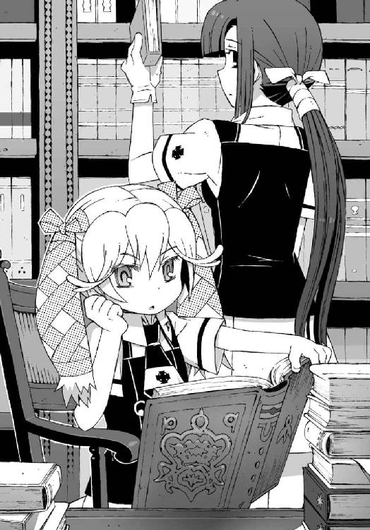

| アスラクライン（5） 洛高アンダーワールド (電撃文庫) | |
| 三雲 岳斗 & 和狸 ナオ | |
本書（電子版）に掲載されているコンテンツ（ソフトウェア／プログラム／データ／情報を含む）の著作権およびその他の権利は、すべて株式会社アスキー・メディアワークスおよび正当な権利を有する第三者に帰属しています。
法律の定めがある場合または権利者の明示的な承諾がある場合を除き、これらのコンテンツを複製・転載、改変・編集、翻案・翻訳、放送・出版、公衆送信（送信可能化を含む）・再配信、販売・頒布、貸与等に使用することはできません。
φ プロローグ
その日、学校は戦場だった。
荒々しい足音が廊下を満たす。血走った瞳。響き渡る怒声。殺伐とした無表情で疾走する生徒たち。
今の彼らを衝き動かしているのは、原始的な欲望だけだ。
ある者は力任せに先を行く人々を押しのけ、ある者は狡猾に他人の隙を狙う。押し寄せてくる生徒たちは皆、拳を固く握りしめ、狙う獲物の姿を執拗に探し求めていた。
彼らをここまで変貌させたのは、校舎内に流れる電子音の響きである。
授業の終わりを告げる短い旋律。
昼休み開始の鐘の音だ。
『──智春っ！ 十一時方向に目標発見。俯角十五度、距離八十センチ！』
僕の頭上で操緒が叫ぶ。洛高の制服を着た少女の幽霊である。僕の視界を覆い隠したほかの生徒たちの身体をすり抜けて、斥候役の彼女が目標の正確な位置を伝えてくる。
操緒の言葉を頼りに僕は素早く手を伸ばし、
「よし、獲った！ おばちゃん、これ！」
指先の感触から、目標物を手に入れたことを確認。僕は拳を突き上げて、握っていた硬貨を店員のおばさんに差し出した。毎度、という声とともに投げ渡されたお釣りを、空中で奪い取るように回収し、速やかに戦闘空域を離脱する。
その間にも後続の生徒たちの猛攻は続いていた。情け容赦なく足を踏みつけてくる女子生徒。体育の授業の直後とおぼしき汗だくな男子の強烈な体臭。そして僕の獲物を横取りしようと突き出される無数の腕。それらの弾幕をかいくぐり、僕と操緒は、かろうじて安全地帯への退避に成功した。戦利品のコロッケサンドの無事を確認して、ほっと安堵の息を吐く。
昼休み開始直後。購買部パン売場前の死闘だった。
「......今日もなんとか生き延びたな......」
途中で誰かにどつかれた後頭部をさすりつつ、やれやれと僕はつぶやいた。
今日はたまたま昼休み直前の授業が早めに終わったので助かった。遅れて購買部に押しかけてきた生徒たちは、今もなお過酷な食糧争奪戦を続けている。この程度の被害で目的を果たせたのは、むしろ幸運だったといえるだろう。
『操緒に感謝してよね』
ふふん、と唇を吊り上げて操緒が笑う。たしかに彼女が目標までの最短ルートを伝達してくれなかったら、こうもたやすく貴重な食料を手に入れることはできなかったに違いない。実体を持たない彼女の霊体も、たまにはこんなふうに役に立つ。
『それにしても、最近ますます熾烈になってない？ 学食のパンの奪い合い』
背後を振り返って呆れたようにつぶやく操緒に、
「バス停前のコンビニが改装中だからじゃないかな」
僕は投げやりに返答した。洛高にはいちおう学食もあるのだけれど、小洒落たカフェテリア風のメニューは育ち盛りの高校生の腹を満たすには役不足で、ついでに値段もお高めだ。
近所にはほかに学生が買い食いできそうな店もなく、最寄りのコンビニは休業中。そんなわけで、弁当を持参してこなかった生徒たちは、必然的にパン売場に殺到するという理屈だった。
『ふーん。だったら、まだ当分はこんな感じなんだ』
「たぶんね......早くなんとかしてもらわないと、一人暮らしの人間には死活問題なんだけどさ」
『んー、操緒はべつに楽しいからいいけどね』
「冗談だろ。こんなこと毎日やってたら、そのうち死人が出るって」
空きっ腹の低血糖状態で全力疾走と格闘を続けたせいで、疲れが重くのしかかってきていた。急かすように手招きしてくる操緒を見上げて、こいつはいいよな、とつくづく羨ましく思う。
幽霊である操緒は、当然の如く栄養補給を必要としない。正確にいえば、彼女は僕の脳内に刷りこまれた怪しい術式だか回路だかでこの世界に自分の姿を投影しているわけで──それはつまり、彼女の消費したぶんのカロリーを僕が肩代わりしているのではないのかとも思う。
道理で最近、異様に腹が減るわけだ。
そんなふうに僕がぼんやりと余計なことを考えていたのも、疲労で集中力が散漫になっていたせいかもしれない──
『智春！』
「え？」
おかげで操緒の警告に反応するのが遅れた。目の前を歩いていた女子生徒が、突然よろけてぶつかってきたのを、僕はよけることができなかった。
「あ......あっ......あーっ！」
それほど勢いよく激突したわけではなかったが、タイミングが悪かった。追突された小柄な少女は、きりきりと回転しながら、その場にうつ伏せに倒れこんだ。
ちなみに最初の「あ」は、よろけてしまったことへの驚きで、次の「あっ」はぶつかった僕に対する反応。そして、最後の「あーっ！」は、両手に抱えていた荷物を落としてしまった悲鳴だった。
そう。彼女は転んだ拍子に、抱えていた紙パックの飲み物を盛大にぶちまけてしまったのだ。というよりも、大量の飲み物を抱えて歩いていたせいで、よろけてしまったというべきか。
廊下にばらまかれた紙パックは、ざっと数えただけでも一ダースはあった。
「だ......大丈夫？」
僕は、一向に起き上がる気配のない彼女の隣に屈みこんで訊いた。廊下で転んだくらいで、それほどのダメージがあるはずはないので、ただ単に呆然としているだけだろうと思う。
無視するわけにもいかなかったが、さすがに見知らぬ女子を抱き起こすのは気が引けたので、僕はとりあえず彼女が落とした紙パックを拾うことにした。
正確な紙パックの数は合計十三個。
そのうちの一個だけがウーロン茶で、残りはすべて同じ銘柄だった。バナナ牛乳砂糖増量。パッケージを見ているだけで、口の中が甘ったるくなってしまいそうな飲み物である。
まさか、これを全部、彼女が一人で飲む、ということはあり得ないよな。いくらなんでも。
「あ、すみません......ごめんなさいごめんなさい」
倒れたままだった小柄な少女が、ようやくのろのろと身体を起こした。そして、正面にいた操緒と目を合わせるなり、
「ひっ......」
今度ははっきりと恐怖の相を浮かべて後ずさった。
操緒は、えー、と不服そうな表情を浮かべたが、まあ当然の反応だと思う。
学校の廊下で誰かに突き飛ばされて、顔を上げたら目の前に幽霊の少女がいたのだ。むしろ驚かないほうがおかしい。
とはいえ、懐かしい反応ではあった。慣れというのは恐ろしいもので、ふらふらと校内を飛び回っている操緒を見ても、最近はほとんど誰も気にも留めない。うちの学校の連中は奇怪なものに対する耐性が異様に強いのだ。おかげでこんなときにどうやって言い訳すればいいのか、対応にちょっと困る。
恐怖で固まってしまった彼女と、それを見てムッとしている操緒の板挟みになって、僕はこっそりとため息をついた。
「あの......すみません。本当にありがとうございます」
僕が拾い集めた紙パックを受け取って、見知らぬ女子はぺこぺこと頭を下げた。
小柄で目立たない感じの女子生徒だった。
操緒に怯えているせいなのか、大きな瞳が小刻みに揺れていて、全体的に小動物的な雰囲気がある。ややクセのある髪を頭の両側で束ねていて、そのシルエットは垂れ耳の仔ウサギを連想させた。
頼りない雰囲気のせいで幼く見えたが、驚いたことに彼女の襟章の色は二年生のものだった。つまり僕たちの先輩──年上だ。
『あの......これって、先輩が一人で飲むわけじゃないですよね』
操緒も僕と同じ疑問を抱いたらしい。心配そうな表情で、彼女の顔をのぞきこむ。
『もしかして使いっ走りってやつですか？ 今どきイジメとか？』
「え？」
最初の驚きからは立ち直ったのか、彼女は操緒を見返して不思議そうに目を瞬いた。
「あ......ううん、違います。えーと、友達と手分けしてて......今はもう一人がパンを買いに」
操緒の不躾な質問に、彼女は真面目に答えてくる。
なるほどなあ、と僕は納得した。役割分担というのはいいアイデアだ。この頼りない先輩が、あの過酷な争奪戦を勝ち抜いてパンを手に入れられるとはとても思えない。彼女のお友達とやらもよくわかっている。
ちょうどそのとき、彼女の証言を裏付けるように、
「なにをしているの、ひかり？ 頼んだ飲み物は買ってくれた？」
僕たちの背後から、別の女子生徒が声を掛けてきた。どうやら、ひかり、というのが、この垂れ耳ウサギな先輩のお名前らしい。
「......六夏ちゃん」
ひかり先輩は、ホッとしたような表情で友人のほうを振り返る。
つられて僕も振り返り、そしていろんな意味で驚いた。
ひかり先輩の友人が、とんでもない不細工だったとか、決してそういうことではない。いや、むしろ顔立ちは整っているほうではないかと思う。
しかし、美形だと自信を持って断言できないのには理由があった。彼女の姿が、あまりに突拍子もないものだったからだ。
すなわち、三つ編みに結った長いおさげ。
そして怜悧さを必要以上に強調するような、分厚いメガネ。
くっきりとした輪郭に、秀でた額。飾り気のないプラスチックのピンで、前髪はガチガチに固めてある。校則どおりにきっちりと制服を着こなしたその姿は、まるで絵に描いたような生真面目な優等生のものだった。
なまじ綺麗な顔をしているだけに、彼女の周囲には異様な威圧感が漂っていた。下手に声をかけたりしたら、そのまま昼休みが終わるまで説教されそうな気がする。正直言って近寄りがたい。つか、なんで今どき三つ編みメガネ？ どこまで本気でやっているのか判断に困る。
そしてもうひとつ印象的だったのは、彼女が抱えている荷物だった。
購買部の袋からあふれ出しそうな十数個のパン。それもすべてあんドーナツである。
あの激戦の購買部でそれだけの数のあんドーナツを買い集めたこと自体が驚きだが、六夏と呼ばれていた三つ編みメガネは、それをひかり先輩と二人だけで食べるつもりらしい。
それどころか教室に帰るまで待ちきれなかったらしく、すでに一個口にくわえてたりする。どんな甘党だよ、と僕は心の中で密かにツッコミをいれた。
そしてもうひとつ──僕が驚いた最大の理由。
それは六夏先輩の背後に浮かんでいる、第三の少女の存在だった。
六夏先輩とは対照的に、外国の絵画に出てくる天使のような、無垢で優しげな微笑を浮かべた少女である。洛高の制服を着た彼女を透かして、うっすらと背後の景色が見えている。
彼女の存在に、僕たち以外のほとんどの生徒は気づいていない。
『智春......この人......』
操緒が僕の耳元で、警戒したように囁いてくる。
僕は黙ってうなずいた。
操緒と同じ人造の幽霊──射影体を連れた先輩の女子。つまり六夏先輩も、機巧魔神の演操者ということになる。
僕が彼女の同類だということに、当然、六夏先輩も気づいているはずだ。しかし六夏先輩は、そんなことまるで興味ないというふうに、冷ややかな口調で訊いてくる。
「あなたたち──ひかりになにをしたの？」
「違うの、六夏ちゃん。あのね、あたしがこれを運んでる途中で転んじゃって......」
立ち上がったひかり先輩が、頼りない笑顔であたふたと説明した。
六夏先輩は最後まで聞かずに、そう、とうなずき、
「それで、ひかりがばらまいたジュースを、彼が拾ってくれたというわけ？」
一人で納得してそうつぶやく。
そして彼女はしばらく無言で僕を眺め、やがてしつけの行き届いた飼い犬を褒めるように目を細めた。
「見所があるわね、夏目智春。うん、やはりキミはいい......だから、ご褒美をあげるわね」
そう言って彼女は、袋から取り出したあんドーナツを僕に放った。
反射的にそれを受け止めて、僕は途方に暮れた。彼女が僕の名前を知っていることに驚きはしないが、しかしこんなものをご褒美に渡されても困るのだ。
六夏はそのまま振り向きもせずに歩き出し、ひかり先輩は、飼い主のあとをついて走る愛玩動物のように、小走りで彼女のあとを追いかけていった。
『なにあれ？』
操緒が無感情な声で訊いてくる。僕は手の中のあんドーナツを見つめて首を傾げた。
「......さあ？」
『わざとやってるのかな。一部のマニアには異様に人気が出そうな感じだけど......』
「たしかに......」
それが僕らと、彼女たちの出会い。
制服が夏服に替わった直後のある日の出来事だった。
一章
「ああ......そりゃ倉澤六夏だな」
その翌々日の放課後だった。
何気ない会話の流れから、購買部で出会った彼女たちのことを話した僕に、樋口はあっさりそう答えた。
「三つ編みでおさげでデコの広い、メガネを外すといきなり美人になりそうな先輩だろ。なら間違いない」
「......なんで知ってるんだ、樋口？」
自分で訊いておいて言うのもなんだが、まさかフルネームまで即答するとは思わなかった。相変わらずこの男の情報収集能力には侮れないものがある。学年も全然違っているし、接点はなにもないはずなのに。
「有名人だからな、あの姉さんは」
「そうなの？」
「三年の進学クラスにいたと思ったぜ？ 第二生徒会の会長だろ」
「え......生徒会長？」
その瞬間いくつかの疑問が氷解して、ああ、と僕は短く息を吐いた。
なるほど、生徒会長。佐伯兄の同類か。
言われてみれば、生徒会長くらい、あの三つ編みメガネが似合いそうな肩書きもほかにない。
第二生徒会の会長ということは、つまり真日和秀の上司ということだ。六夏が僕に妙に好意的だったのも、もしかしたらそれが原因なのかもしれない。それはそれでヤな感じだ。
あの異様な服装も、彼女が機巧魔神の演操者であることにも、彼女が生徒会長なら納得がいく。僕のすぐ背後にくっついていた操緒も、うんうん、と首を縦に振っていた。
この洛芦和高校には、学校側に公認されている生徒会が三つある。
第一生徒会は、学校内の治安の維持がメインの任務で、主に運動部を管轄している。
それに対抗しているのが、学問の探求が目的の第三生徒会。管轄しているのは主に文化系のクラブで、僕たちが所属している科學部もこの第三生徒会の傘下に置かれている。
第二生徒会というのは、そのどちらにも属さない中立の第三勢力だ。正確に言えば、彼らの場合は、金次第で敵にも味方にもなる、というべきか。
彼らの主目的は金儲けであり、ある意味わかりやすいのだが、そんな彼らが学校内でどんな仕事をしているのかというと、実は僕もよく知らないのだった。
そういえばなにをしてるんだろう？
『六夏先輩ってなんで有名なの？ べつにあの服装のせいだけってわけじゃないんでしょ？』
質問したのは操緒だった。それは僕も気になっていたことだ。操緒と違って、六夏先輩が連れていた射影体の少女は、普通の人間には見えないはず。幽霊憑きという理由以外で噂になっているのだとすれば、彼女の行動のほうになにか問題があるということになるが──
しかし樋口の答えは簡潔だった。
「甘党」
『......それは知ってる』
「好物は自販機のバナナ牛乳。あんドーナツなら、一日二十個はいけるらしい」
『だから知ってるってば』
操緒ががっくりと肩を落とした。有名というのはそういう意味か。たしかにあれは見ているこっちが気持ち悪くなるくらいの、すさまじい甘党っぷりだったけれど。
「じゃあさ、もう一人の先輩のことは？ 垂れ耳のウサギみたいな感じの」
気を取り直して僕は訊いてみる。ひかりと呼ばれていたあの先輩のほうが、実は六夏以上に謎の存在なのだった。どう見てもただの頼りない女子生徒だったが、なんでそんなのが生徒会長の親友なんかをやっているのだろう。
しかし樋口は、あからさまに怪訝そうな視線を僕に向けて、
「ウサ耳ィ？ なんだそりゃ？ 俺は獣耳属性はないからそういうのはちょっとな」
「僕にもないよ。そんなの」
ひかり先輩のことを説明するのに、小動物系とか、そういう言葉しか思いつかないだけだ。
とはいえ、さすがの樋口も、あの頼りない先輩のことまでは知らないらしい。それはつまり彼女が見たままの普通の女子高生だったということで、そのことに僕はむしろホッとした。これ以上、変人の知り合いばかりが増えても困るしな。
とりあえず倉澤六夏が第二生徒会の会長というのは、かなり有益な情報だった。なるべく彼女には近寄らないことにしよう、と思う。なにしろ真日和の上司である。気を抜くと、どんなふうに利用されるかわかったものではない。まあ、学年も違うことだし、そうそう会う機会もないとは思うけど。
「しかし重いな、この本。つか、これ、どこの国の文字だ。あのガキんちょ、本当にこんなの読めるのか？」
抱えていた本を乱暴に投げ出しながら、樋口がうんざりしたようにつぶやいた。
ひどく投げやりなその声が、分厚い石造りの壁に反響する。つられて僕もため息をついた。
長い階段を使って僕たちが降りてきた場所は、恐ろしく古びた地下室だった。洛芦和高校、旧図書室の地下書庫である。
なんでもこの旧図書室の建物は、この学校ができる前からこの地に存在していたのだそうで、ここ以外には日本中のどこにも残ってないような文献や書物が、大量に収蔵されているらしい。
広大な書庫の中には古びた本が無数に並んでいて、これが貴重なものだというのはよくわかる。しかしそのほとんどは、どこの国の言葉とも知れない怪しい言語で書かれていて、保存状態も良いとはいえなかった。おまけに誰も整理する者がいないので、なにがどこにあるのか、歴代の司書の人々も知らないらしい。
『まあ、ニアちゃんも外国育ちだしね』
操緒が、あまり意味のない曖昧なフォローを入れる。さすがに、僕たちが探しているのが、本物の魔導書だ、なんてことを樋口に説明するわけにはいかないのだ。
金曜日の放課後だった。
貴重な週末の時間を潰して、なぜ僕らがこんなところにいるのかといえば、実は部活だったりする。科學部の活動の一環だ。学校側の正式な許可も下りている。
学校の図書室で文献調査。銃撃戦や怪獣退治に比べれば、まあ、科學部の活動らしいという気がしなくもない。
問題があるとすれば、僕たちが探しているのがまともな歴史書などではなく、機巧魔神のメカニズムについて記した書物。すなわち魔導書だという事実だった。魔術をその源流とする『黒科学』を極めること。それが洛高科學部の活動目的なのだ。
学校の図書室で魔導書探し。
なんというか、普通に考えれば馬鹿馬鹿しい話である。
しかし悲しいことに、僕と操緒は、そのアホな活動目的と無関係ではないのだった。操緒を封印している機巧魔神の中から、彼女の本体を救い出す──その方法を僕たちは調べているのだから。いや、調べているというか、調べるのを手伝っているというべきか。
「──遅いぞ、智春」
地上に戻った僕たちを待っていたのは、閲覧席の奥に偉そうに座った、やたら小柄な金髪の女子生徒だった。

幼さを残した顔立ちや体型は、どう見ても小学生のものである。アニア・フォルチュナ・ソメシェル・ミク・クレウゼンブルヒ──先月からうちのクラスに編入されてきた留学生だ。
「こいつの続きはまだなのか？ 本一冊を探すのにいつまでかかってるんだ」
運喰らいの悪魔であり、そして満十歳にして機巧魔神の専門家である天才少女は、難解な古代語で書かれた分厚い書物を、退屈そうに読み進めていた。机の上には、すでに彼女が読み終えた本が、十冊ばかり積み上げられている。クソ生意気な彼女の物言いがむかつくが、魔導書などというわけのわからないものを読めるのはアニアだけなので、ここは我慢するしかない。
「持ってきたよ。ほら、これでいいんだろ」
地下書庫で探してきた本の束を、僕はアニアの前に投げ出すように置いた。彼女はその背表紙を一瞥し、
「馬鹿者。私が探してこいと言ったのは『魔導関数の動的組みこみ覚醒篇』だ。誰が『十日でよくわかる悪魔契約のリスクと訴訟』を持ってこいと言った」
「え......あれ？」
「まったく。間違えるか、普通。こんなにでかでかと書いてあるのに」
「いやいや......読めないから、そんなの。てか、それ文字だったのか。虫の絵かと思った......」
不満そうな表情を浮かべるアニアを見下ろし、僕はうんざりとため息をついた。
苦労して持ってきた本が間違いだったということは、これをまた書庫に戻して、べつのやつをまた探しにいかなければならないということだ。意外に重労働である。
「あの......覚醒篇が置いてあるのは、地下四階だと思います。このあたり......」
アニアの隣に座っていた嵩月奏が、僕の前に手書きの地図を差し出してそう言った。
長く伸ばした黒髪の似合う、古風な雰囲気の美少女だ。夏服の女子の制服に白い手袋をつけて、バインダーに綴じられた資料をめくっている。
嵩月の仕事は、図書室の蔵書目録を使って、アニアが要求する本の在処を探すことだった。つまりアニアの秘書みたいな仕事である。
嵩月が見ている目録というのは、実は図書室の正式な資料というわけではなかった。かつてこの学校に在籍していた一人の生徒が、独自に調べてまとめたものだ。
クルスティナ・フォルチュナというのがその生徒の名前。失踪中のアニアの姉である。
彼女──クルスティナは、機巧魔神の秘密を解き明かすために第三生徒会が呼び寄せた人物だった。つまりアニアの前任者である。アニアが僕たちに協力してくれているのは、機巧魔神について調べることが、姉の行方を追いかけることにつながっているからだ。
もともと機巧魔神がらみなら僕にとっても他人事というわけではないし、そんなわけだからアニアを手伝うのもやぶさかではない。だがしかし、
「地下四階って......この建物、どんだけ深いんだ......？」
さすがに唖然として僕は訊いた。
なにしろ書庫というやつは、やたらに背の高い本棚が天井近くまでそそり立っている。つまり極端に天井が高いのだ。そのぶん階段の上り下りもしんどいということである。もちろんエレベーターなんて文明的な道具はここにはない。
「あー......よくわからない、です。この目録には地下七階までは載ってます......けど」
嵩月が困ったような声で言う。
僕は無言で嘆息した。非常識な図書室だとは薄々感じていたが、まさかそこまでとは思わなかった。さすが、二度の世界大戦をくぐり抜けた建物という噂は伊達ではない。
『仕方ないね、手分けしよ。あたしたちが本を取りに行くから、樋口はこれを戻してきて』
「......しゃあねえな。わかった、それでいこう」
操緒の合理的な提案に、樋口は渋々とうなずいた。
なんだかんだ言ってそれほど不満そうな感じでもないのは、樋口自身も、この手の不気味な地下書庫で怪しげな本を探すのが大好きだからだ。樋口は重度のオカルトマニアなのである。
「あれ......余ってる懐中電灯ってもうないんだっけ？」
僕は床に投げ出してあった荷物を漁りながら、嵩月に訊いた。
樋口と別行動するなら、僕にも懐中電灯が必要だ。なにしろ呆れたことに、地下二階よりも下の階には照明器具がついていないのだ。照明器具を持っていかなければ、本を探すどころか無事に地上に戻ってこられるかどうかも疑わしい。
「あ......今、朱浬さんが三階に下りてる......から」
嵩月がたどたどしい口調で答えてくる。なるほど。部長代理の姿が見あたらないと思ったら、あの人もべつの本を探しに行ってたのか。
「わかった。じゃあ、途中で合流していくよ」
「うむ。途中でサボったりせずに、きりきり働けよ」
「............」
尊大な口調のアニアに見送られながら、僕と操緒は再び地下書庫へと向かった。
石造りの階段は狭くて薄暗い。ひんやりと澱んだ地下特有の空気が肌を刺す。
ひと気のない書庫は見るからに不気味で、なにかが潜んでいるような雰囲気を漂わせていた。幽霊は慣れているのでどうでもいいが、それ以外の化け物が出てきたらイヤだなあ、と真剣にそんなことを考える。と、その見慣れた幽霊の少女が、僕の肩越しにつぶやいた。
『あ、朱浬さんだ』
操緒の言葉どおり、朱浬さんは地下三階の書庫の入口にいた。
すらりと背の高い、見た目おっとりとした美人の先輩である。
洛高女子の制服の上に、真っ黒いコートを羽織っている。黒衣姿とでも表現すればいいのか、相変わらず邪悪な魔女のような恰好だった。
ちなみにその朱浬さんの黒衣だが、本人が言うには、衣替えの季節になったので夏仕様に変わったのだそうである。なんでも裏地がメッシュになったり、通気性のいい素材を使ったりしているらしい。どうでもいい話だが。
「......あら？ どうしたのトモハル」
綺麗に切り揃えた黒髪を揺らして、朱浬さんが振り返る。
「えーと、アニアに言われた本を取りに行くところですけど......地下四階まで」
入口で立ち止まったまま動かない彼女に、僕は告げた。
「この下？ それは無理ね」
くすくすと微笑みながら、朱浬さんは肩をすくめてみせる。僕と操緒は怪訝な表情を浮かべ、互いに顔を見合わせた。
「え、なんでです？」
「ふふっ......見ればわかるよ。ほら」
含み笑いを漏らす朱浬さんに手招きされて、僕たちは彼女の隣まで階段を下りていった。その瞬間、僕は爪先にひやりとした感覚を覚えた。操緒が、わ、と声を上げる。
水溜まりだった。一段低くなった地下三階の書庫の床を、ゆらゆらと揺れる水面が覆い尽くしている。床上浸水、約五十センチといったところだ。
『なにこれ......地下水？』
「うん。たぶん岩盤の隙間に溜まった雨水が流れこんだんじゃないかな」
目を丸くした操緒の問いかけに、朱浬さんがおっとりと回答する。
水溜まりは書庫の入口を中心に、かなりの広範囲を水没させていた。書庫に立ち並ぶ無数の書棚が、まるで海に浮かぶ孤島のようである。
そして地下四階に続く階段は、完全に水中に没してしまっている。たしかにこれでは、下に降りて本を探すのは不可能だろう。
「これって......この下にある本は全滅ってことですよね......」
暗い水面を見つめたまま、僕は落胆してつぶやいた。言葉にすると軽い絶望感が襲ってきた。
機巧魔神の中に封印された操緒を救出して、彼女の幽霊から解放される──その手がかりがようやく見つかると思ったら、このザマだ。
期待してないつもりだったが、やはりダメだったとわかると、けっこう落ちこむ。
「それがそうでもないのよ」
しかし朱浬さんは、おっとりと微笑んで首を振った。
「この下の階は隔壁が降りてるみたいだし、水没してるのは、このあたりの区画だけだと思う。ニアちゃんのお姉さんが目録を作ったときには、もうこのあたりは水に浸かってたはずだもの。たぶんどこかに、隔壁の向こう側につながっているべつの通路があるんだわ」
「べつの通路......ですか？」
なぜ高校の図書室ごときに、そんなものがあるのだろう。まあ、そんなことを言い出したら、地下深くに設けられたこの書庫の存在自体が怪しさ爆発だったりするのだけれど。
「この書庫は、もともと宗教狩りを逃れるために造られた一種の要塞みたいなものだからね。隠し通路のひとつやふたつあっても不思議じゃないわよ」
「はあ......」
要塞って。だから、なんでそんなものが住宅地の真ん中にある高校の敷地内にあるのか、ということがそもそも疑問なのだ。つくづく怪しい学校である。
それはともかく、
『あの......まさか、この下に潜ってその通路を探してきて、とか言い出さないですよね？』
警戒心をあらわにして、操緒が訊いた。露骨に嫌そうな表情を浮かべているが、たぶん僕も同じような顔をしていたに違いない。
照明の光もろくに届かないような、学校の地下書庫で潜水調査。それはちょっとシャレにならない。下手すると命が危ない。プロのダイバーだってそんな仕事は絶対に嫌がると思う。
そして朱浬さんという人は、見目麗しい外見とは裏腹に性格に問題があって、そういうことを平気で僕たちにやらせかねないのだ。
しかし朱浬さんは、思いがけず柔らかな苦笑を浮かべて僕を見た。
「まさか。いくらなんでも装備もないのに、そんなことさせないわよ」
「あの......それは装備があったら、潜らせるって意味ですか？」
素直に喜んでいいのかどうか、なんとも微妙な言い回しだ。
「え？ だって、ちゃんと機材を揃えておかなきゃ智春だって困るでしょ？」
「いや......それはそうなんですけど」
しかし機材がないと困るというのは、機材さえあればなにをやらされても大丈夫という意味ではないのだけれど。その違いが、この人はちゃんとわかってるんだろうな？
「どのみち今の装備じゃラチが明かないわね。今日のところは引き上げましょう。この建物の構造についても調べたいし」
そう言って朱浬さんは踵を返し、黒衣を揺らして階段を上り始めた。
そんな彼女の背中を見つめて、僕と操緒はため息をつく。
今日のところは、ということは、結局またいつか続きをするということか。ある意味、予想どおりの反応だった。しかし、図書室で本を探すだけで、なぜこんな地底探検みたいな展開になってしまうのか──まったく理解不能である。呪われているとしか思えない。
『んー、でも、今回は潜らなくて済みそうだからよかったんじゃない？』
「まあね......」
苦笑している操緒を見上げて、僕は弱々しく首を振った。
たしかに、湖に突き落とされたり、沈没した機巧魔神のサルベージをやらされたりと散々な目に遭った合宿所の事件に比べれば、多少はマシな状況だった。少なくとも学校の図書室に、未確認の巨大生物が潜んでるってことはないだろう。そう思うと少しは気分が楽だ。
そんなふうにひどく不幸慣れした感想を抱きつつ、のろのろと階段を上っていると、
「あれ......奏っちゃん？」
先を歩いていた朱浬さんが、ふいに驚いたように立ち止まった。
見上げると、ちょうど階段を下りてきた嵩月と目が合った。彼女はなぜか、困惑したような焦っているような、よくわからない複雑な表情を浮かべていた。
朱浬さんも、そんな嵩月の様子に気づいて小首を傾げ、
「どうしたの？ ニアちゃんになにか頼まれた？」
「いえ......あの......」
ふるふると首を振り、嵩月は背後を振り返るような仕草を見せた。
嵩月の肩越しにちらりと小柄な人影が見えて、んっ、と操緒が眉を寄せる。
一瞬アニアかと思ったがそうではなかった。
アニアより髪が短いし、いくら小柄といっても、あのお子様よりは背丈がある。そして両側に垂れたクセのある髪型には見覚えがあった。
「あれ？ あなた、たしか......沙原さん？」
朱浬さんが小首を傾げて訊いた。
声をかけられた女子生徒は、どこか小動物っぽい落ち着きのない態度でうなずいた。今さら見間違う理由もなかった。購買部でバナナ牛乳を抱えていた、ひかり先輩、だった。
しかし、なんで彼女がこんなところに？
「あー......この方が夏目くんを捜していて......あの......困っていらしたので......」
困惑の表情を浮かべた僕たちに、嵩月が気を利かして説明した。
『......智春に？』
予想外だった嵩月の言葉に、操緒が目を丸くして訊き返す。そして操緒のその反応に焦ったひかり先輩は、
「あの、そうなんです。すみませんすみません。ご無理を言ってしまいまして......」
どっちが上級生だかわからない態度で、ひたすら恐縮して小さくなった。
彼女がぺこぺこと頭を下げるたびに、両側の髪がぱたぱた撥ねてちょっと面白い。僕はそんなことを他人事のような気分で考えていた。この頼りない先輩が、こんな時間に、焦って僕を捜しにくる理由なんて、いくら考えても心あたりがなかったからだ。
「私、これを夏目くんにお渡ししようと思って......」
そのとき僕はふと気づく。ひかり先輩は、なにやら大事そうに胸の前でなにかを握っていた。飾り気のない無地の──しかし、薄暗がりの中でもはっきりと白い封筒。手紙。
彼女は声を上擦らせながら、思い詰めたように大きく息を吸い、
「これ、あとで読んでください。お願いします」
唖然としている操緒たちの前で、僕にその手紙を手渡した。
○
翌日の土曜日。
僕と操緒は普段より少し遅めに起き出して、適当に朝食を済ませてから学校に向かった。授業はいちおう休みだったが、運動部員や補習を受けている三年生など、学校に出てきている生徒は意外に多い。僕たちは校舎には入らずに、直接、体育館裏のほうへと向かった。
そして、そんな僕たちを、中庭で待ち受けている男がいた。
「──どこに行く気だ、智春」
その男は、花壇の植えこみの陰に隠れて、僕たちが通りがかるのを待っていた。引きつった笑顔で彼は僕に歩み寄り、なれなれしく肩に手を回して逃げ道を塞いでくる。
「......樋口？ なにやってんだ、そんなところで？」
「なにやってんだ、じゃねえよ。おまえ、それでも親友か。俺に黙って部活を休んで、女とデートってどういうことだ？」
「は......？ デート？」
「しかもなんだよ、その恰好は？ 海か？ 海でデートなのか？ 俺がガキんちょのお守りをしながら地下室で本を探してる間に女と海？」
樋口に言われて、僕は自分の服装を眺めた。
制服に、学校指定のジャージの上着。どう見ても女の子と一緒に海に出かけるような恰好ではないと思う。しかし樋口は、僕が肩にかけていたトートバッグを指さし、
「だったらなんだよその荷物！ 海パンにバスタオル、ビーチサンダルまで用意しやがって」
「え......いや、これは......」
「とぼけても無駄だぜ。白状しな、智春。おまえが昨日、女の子にラブレターをもらったって情報は確認済みなんだよ！」
「ラブレターって......なに言ってんだ、バカ。違うよ！」
僕はあわてて否定した。樋口のでかい叫び声を聞きつけた生徒がいないかどうか、思わず周囲を見回してしまう。背後で操緒が、少し面白くなさそうな表情で肩をすくめるのが見えた。
とりあえず、大まかな事情は見えてきた。樋口はたしかに情報通だが、彼の情報が信頼できるかどうかというのは、まったくべつの問題なのだ。
「あのさ、ひかり先輩が持ってきたのはラブレターじゃなくて、ただの案内状だったんだけど」
「ひかり先輩ぃ？ 年上か？ おまえいつの間にそんな女性と......」
やるなあ、と樋口が感嘆の息を漏らした。ひかり先輩は見た目あまり年上という感じではないのだが、そこのところは今は問題ではないので黙っておく。
「案内状って？ なんかのイベントか？」
「うん......まあ、イベントといえばイベントかも」
「イベントのお誘いって、おまえな......そういうのを普通デートっていうだろ」
「違うって」
説明するのもだんだん面倒に思えてきた。だから聞けよ、人の話を。
『──プール掃除に呼ばれたんだよ』
僕がうんざりとため息をついていると、かわりに操緒が説明してくれた。すぐには意味がわからなかったのか、樋口はきょとんとした表情を浮かべた。
「は？」
『だから、ひかり先輩が持ってきたのはプール掃除の案内状なの。校内環境美化委員の仕事』
「美化委員って......」
樋口が困惑の表情を浮かべながら僕を指さし、僕は黙ってうなずいた。
そうなのだ。僕自身すっかり忘れていたのだが、入学した直後のホームルームで僕にはそういう役職が割り振られていたのだった。実はこれまでにも何度か活動日があったらしいのだが、そのたびに僕は怪獣退治やら風邪やらで学校を休みまくっており、あまりの出席率の悪さに業を煮やした美化委員長に、直々に呼び出されてしまったのだ。
美化委員長の名前は、沙原ひかり。
つまり垂れ耳小動物系のあの先輩である。
どう見ても委員長という器ではないが、たぶんくじ引きだかなんかで押しつけられてしまったのだろうと思う。そんなわけで突然の休日の呼び出しにもあまり文句を言う気分にはなれず、僕はプール掃除のために学校にやってきたのだった。
「なんだよ、そのつまんねえオチは......ま、考えてみれば、幽霊の彼女がくっついてる男をデートに誘うやつもいないよな」
樋口が退屈そうにつぶやいた。悪かったな、くそ。それに操緒は僕に取り憑いているだけで、べつに彼女ってわけじゃない。
「うらやましいのなら、いつでも替わってやるよ。プール掃除くらい」
「プール掃除って、あのバカでかい屋外プールだろ。やなこった。図書室で禁断の魔導書でも探してるほうがまだマシだ」
樋口は本気で嫌がっている様子で首を振った。
「せっかくおまえにプレゼントを持ってきてやったのに、意味なかったな。まあいいや。掃除頑張れよ、智春」
そう言うと樋口は僕の手になにかを握らせ、軽快な足取りで立ち去っていった。
「......なにしに来たんだ、あいつ」
僕は首を傾げながら、樋口に手渡されたプレゼントとやらを見つめた。
銀色のフィルム包装のパックだった。サイズは掌にちょうど隠れるくらいの正方形。それが蛇腹状に五、六個連結されている。薬の錠剤でも入ってそうな薄っぺらい密封包装だが、中身は薬品なんかではなかった。いや、たしかに薬局で売ってるものだけれど、これは──
『わっ......コンドームだ』
操緒が照れも恥じらいもない口調で叫んだ。
そういう単語を大声で言うのはやめてくれ。操緒には昔からその手のデリカシーが足りないのだ。わかってても知らないフリをしてくれればいいのに。
『ふーん......ふーん......こんなになってんだね。超薄型だって。フローラルの匂いつき』
「いやだから、そういう問題じゃなくて......ったく、なに考えてんだ、バカ樋口」
わざわざ学校で待ち伏せしていたのは、僕がデートに行くと聞いてこれを手渡すためだったらしい。べつにからかっているつもりではなく、彼なりに本気で気を利かせたつもりだったのだろう。悪いやつではないのだが、ズレているというかなんというか、無駄にお節介なのである。こんなものを学校で渡されて、このあとどうやって処分すればいいんだ？
連結された密封パックを揺らしつつ、僕が途方に暮れていると、
「あー......あの......」
僕のすぐ背後から、細く澄んだ声がした。
「え？ うわっ！」
驚いて振り返るとそこには操緒と、もう一人べつの女子生徒が立っていた。でたらめに綺麗な顔立ちの和風美少女だ。色白の頬を少し赤くして、端整な眉を困ったように寄せている。
「た、嵩月......？」
僕は思わず声を上擦らせ、握っていた樋口の置き土産を、あわてて上着のポケットに突っこんだ。なんでこんなところに嵩月がいるんだ？ まさか彼女も僕を待ち伏せしていたのか？
「あの、ごめんなさい」
しかし嵩月はそう言って、深々と僕に頭を下げた。
僕と操緒は互いに顔を見合わせながら、ほとんど同時に首を傾げた。嵩月に謝ってもらうようなことをされた記憶はないのだが、
「あ......樋口くんのこと......昨日、沙原先輩が夏目くんに会いに来たことを、私が話してしまったから」
「ああ」
僕は、小さく苦笑した。なんだ、そんなことか。
普段から寡黙な嵩月は、説明や言い訳が極端に下手だ。おそらく樋口は、ひかり先輩が僕を呼び出すための手紙を渡しに来たことや、そのせいで僕が部活を休むこと──そういう断片的な情報だけを嵩月から苦労して聞き出して、その結果いろいろ誤解したのだろう。その場には朱浬さんもいたはずだが、樋口が誤解したのを、たぶん面白がってそのまま放置しておいたのに違いない。あの人はだいたい自分が面白ければ、ほかのことはどうでもいいのだ。
「もしかして......嵩月はそれを謝るために僕を待ってたの？」
相変わらず律儀な子だなあ、と感心する。そんなのは樋口が勝手に誤解して先走っただけで、嵩月が気にするようなことではないのに。
しかし嵩月は、言葉を選ぶように少し考えるような仕草をして、
「あ......それもあります、けど......気になって」
「気になるって、なにが？」
「沙原先輩のこと」
「え？ どうして？」
僕は思わず真顔になって嵩月を見返す。嵩月も目をそらさずに、無言で僕を見つめていた。おかげで急に不安になってきた。まさかひかり先輩までもが、佐伯兄や朱浬さんみたく、ロクでもない用事に僕を巻きこもうと画策しているというのか？
たしかにこの学校に来てからというもの、僕に近づいてくる上級生といえば、悪魔の滅殺だとか怪獣退治とか、非常識な命令を押しつけてくる連中ばかりだった。おかげで何回死にそうな目に遭わされたことか──と、うんざりした気分で思い出す。
だが、嵩月は意外にも、
「いえ......それはない、と思います。けど......」
戸惑ったように否定して口ごもった。
「え、そうなの？ だったら嵩月は、どうしてあの先輩のことを疑ってるんだ？」
実際、あの頼りない先輩が裏で陰謀を巡らす姿というのは、あまり想像できないけれど。
「あの......べつに疑ってるというわけではなくて......」
「あれ？ でも彼女のことを気にして忠告にきてくれたんじゃ？」
「はい。あの、それは彼女が......もしかして、あの人も夏目くんのことを......」
「は？」
もじもじと下を向いたまま、歯切れの悪い口調で嵩月が言った。そのまま長い沈黙が続く。
煮え切らない彼女の態度を、どこかイライラした様子で見ていた操緒が、やがて業を煮やしたように嘆息して口を開いた。むー、と半眼になって嵩月の反応をうかがいながら、
『それってヤキモチ、だったりする？』
「えっ？」
操緒の指摘に、嵩月が驚いたように顔を上げた。一瞬、なにを言われたのか理解できない、というふうに目を瞬き、それから彼女は爆発的に顔を赤らめた。
「あー......それはその......あの......」
嵩月がおろおろと視線を彷徨わせる。ここまでうろたえる彼女を見たのはたぶん初めてだと思う。意地悪な同級生にからかわれた小学生みたいで、見ていて実に微笑ましい。
しかし本人は可哀想なくらい恐縮した態度で、それでもなにかを言おうと口を開きかけた。そのとき、
「夏目くん。こっちですー！」
中庭の反対側。屋外プールの方向で、手を振りながら叫んでいる女子生徒がいることに僕は気づく。短パンの上にジャージの上着を羽織った小柄な少女。無理に背伸びしているせいで、両側で結んだ髪がぱたぱたと撥ねていた。沙原ひかりだった。
「急いで着替えてきてくださいねー。もうすぐお掃除始めますからー」
彼女は、プラカードのような案内板を握って立っていた。僕たちのような新入生の美化委員が道に迷わないように、委員長自ら案内係を務めていたらしい。
「............」
やれやれ、と肩をすくめて僕は歩き出そうとした。その僕の手を誰かがつかんで引き留めた。
嵩月だった。
「え？」
「あ......」
嵩月は、自分でも驚いたようにあわてて握っていた手を離したが、
「ご、ごめんなさい。さっきは変なことを言ってしまって......あの、気をつけて」
すぐに気を取り直して僕を見つめ、早口でそうつぶやいた。
「ああ、うん。嵩月も、アニアたちのことをよろしく。委員会の仕事が終わったら、科學部のほうにも顔を出すからさ」
僕がそう言うと、嵩月はほっとしたような表情を浮かべ、小さくうなずいた。それでもまだ少し不安そうに、歩き出した僕の背中を、彼女はしばらく見送っていた。
結局、嵩月が僕になにを伝えようとしたのかわからないままだった。あれではまるで操緒に意地悪されるために来たようなものだ。
ああいう真面目な子をからかうなよな、と僕は操緒に非難がましい視線を向ける。
すると操緒は、なぜかふてくされたように僕を横目で睨み、
『でも......否定はしなかったんだよね、あの子』
ぎりぎり聞こえるくらいの小さな声でそう言った。
○
老朽化の進んだ洛高の屋外プールは、裏庭の隅にひっそりと放置されていた。
洛高の校舎にはやたらに古いものが多いのだが、このプールも例外ではなかった。色褪せた煉瓦造りの外壁には無数のツタがはっており、プールサイドのペンキはあちこち剥げている。
真夜中に忍びこんで泳いだりしたら、怪しい霊だか妖怪だかに水の底に引きずりこまれそうな、そんな雰囲気の場所だった。
実は洛高にはもうひとつ、温水の室内プールがある。ガラス張りの天井を持つ室内プールは、高校の施設とは思えないくらい小綺麗で、設備もかなり充実している。
その室内プールができたのは、ほんの数年前のことらしい。その当時、屋外プールで水泳中の女子を盗撮する変質者が出たことがあるらしく、その対策として寄付を集めて造られたのだ。
そんな成り立ちのせいなのか、真新しい屋内プールはほとんど女子専用の扱いで、男子は滅多に使わせてもらえない。老朽化した屋外プールがいまだに取り壊されることなく利用されているのは、それが理由だった。
「その辺の事情はだいたいわかったけど......」
男子更衣室でスイムパンツに着替えた僕は、ビーチサンダルをつっかけ、ジャージの上着を羽織ってプールサイドに出た。操緒は学校指定の体操服の上下。幽霊の彼女が、どういう原理で着替えているのかは相変わらず謎のままだ。そして、
「──なんでおまえがここにいるんだよ？」
真日和秀は、更衣室の正面で僕が出てくるのを待っていた。
いつも笑っているようなタレ目に八重歯の、少しうさんくさい感じの男子生徒である。
表向きは第二生徒会の会計ということになっているが、真日和は悪魔との契約者だ。ヴィヴィアンという名前の巨大な風獣を、使い魔として使役する。加賀篝隆也にやられて病院送りになったはずだが、知らないうちに退院していたらしい。
「どういう意味ッスか、夏目くん。まるで俺がいたら迷惑みたいに聞こえるんスけど？」
真日和は、さすがに気分を害したように目を細めて言った。彼も僕と同様に、Ｔシャツの下には競泳用の水着を着ている。
「だって明らかにおかしいだろ。なんで真日和が学校のプール掃除なんかにいるんだよ？」
『うん。変。バイト代が支払われるってわけでもないんでしょ？』
警戒して訊き返す僕と操緒に、真日和はへらへらと信頼の置けない笑みで答えた。
「バイト代は出ないけど、いちおうこれも仕事のうちッスよ。プール掃除の監督ッス」
「監督？」
なんだそれは、と僕は顔をしかめた。
「なんでおまえが監督なんだよ？ プール掃除は美化委員の仕事だろ？」
「そうッスよ。だからウチの会長の命令で監督にきたっす」
『会長......って、六夏先輩のこと？』
困惑したように操緒が眉を寄せる。そういえば真日和のとこの会長というのは、あの三つ編みオサゲだったっけか。組み合わせが間違っているような気がするが。
「あれ、もしかして知り合いだったッスか？」
真日和は少し意外そうな表情で訊き返した。
「第一生徒会と第三生徒会が、それぞれ運動部と文化系クラブを仕切ってるじゃないッスか。でもって第二生徒会ら〝巡礼者商連合〟は、委員会活動を管轄してるんスよ」
『委員会活動？ ってことは美化委員会も？』
「そうッス。校内環境美化委員会も、ウチらの指揮下の公認委員会のひとつッスよ』
『......そうなの？』
操緒は驚いたように目を瞬き、僕と顔を見合わせた。
真日和たち第二生徒会の活動目的は、主として金儲けである。便利屋集団といえば聞こえはいいが、その実体は自分たちの利益のためならなんでもやるという無節操な組織なのだ。そんな彼らが、洛高の委員会活動を管理監督しているというのか？
「えーと......じゃあ、そういうことで。僕たちはこれで」
「あ、ちょっと!? どこ行くッスか、夏目くん」
踵を返して逃げようとした僕を、真日和があわてて引き留めた。僕は真日和を引きずるようにして、強引に更衣室の扉を開ける。
「やめる。帰る。巡礼者商連合とつるんでる委員会で掃除なんかやってられるか。どうせまた、くだらない商売を企んでるんだろ！」
「なに言ってんスか。偏見ッスよそれ。委員の職務をちゃんと果たしてくださいよ」
「なにが委員の職務だよ。この学校の生徒会関係者が絡んで、無事で済んだことなんか一度も無いんだよ！」
「それは、ただ単に夏目くんの運が悪いだけなんじゃ......」
真日和がぽろりと本音を漏らす。うるさい。僕もそれを自覚していないわけではないのだ。だからなるべく不幸を呼ぶ連中には近寄らないようにしているのに。
「そんな心配することはないッスよ。今日のは本当にただの委員会活動だから。その証拠に、ヴィヴィアンも殺人人形も連れてきてないじゃないッスか」
真日和が、無実を主張するように両腕を広げて力説する。僕は、疑いの眼差しを彼に向け、
「信じられるか、そんなの。利益もないのに、なんで真日和たちが働いてるんだよ」
「あるッスよ、利益。でも、それは夏目くんたちとは無関係ッス」
「え？」
「公共事業と同じッスよ。学校からも予算が出るし、学校の備品を仕入れてる業者からバックリベートを受け取ったり、入札で浮かせた予算を投資に回したり、地道に稼いでるッス」
『公共事業って......地道なのかな、それ』
操緒が呆れたようにつぶやいた。僕は突っこむ気力も起きない。
要するに、第二生徒会が真面目に委員会活動なんかをやっているのは、学校運営がらみの利権を確保するためか。ふざけた理屈だが、いちおう説得力はある。
『じゃあ、ひかり先輩は？ 彼女も第二生徒会の関係者なの？』
操緒がさらりと鋭い質問を投げかけた。言われて気づく。そういえば、どうして彼女みたいな生徒が美化委員長なんかをやっているのか、ずっと不思議だったのだ。
「それはまあ、洛高の委員会活動を仕切ってるのは第二生徒会らッスから」
真日和は、なぜか得意げな口調でそう言った。
「校内環境美化委員長の沙原ひかりも、当然、第二生徒会の関係者ッスよ。部下っていうか、協力者っていうか」
「やっぱりそうなのか......」
僕は落胆してつぶやいた。生徒会の下部機関の長ということは、つまり王立科学狂会と科學部の部長代理の関係に近い。格付けで言うなら、ひかり先輩は朱浬さんと同等ということか。
そう考えると地味にショックだ。彼女だけは普通の人だと思っていただけに、期待を裏切られたような気がする。
『でも、あの人が、どうして第二生徒会なんかに？ 向いてない気がするんだけど』
操緒が、まだ少し納得できないというふうに首を傾げている。それは僕も同感だった。
いろんな意味で人間離れした朱浬さんあたりと比較するのは酷だが、それを抜きにしても、ひかり先輩にはこの学校の生徒会の仕事はキツいのではないかと思う。性格的に。
「いや、その......ああ見えて、沙原はしっかりしたところもあるッスよ。や、ほんとに」
真日和が、なぜか焦ったように、とってつけたようなフォローを入れる。その額にじわりと汗が滲んでいるのを見逃さず、操緒が疑わしげに目を細めた。やけに怪しい。ここでどうして真日和がうろたえるのか、その理由がよくわからない。
「料理も上手かったり、意外に家庭的だったりするッス。夏目くんとは気が合うんじゃないッスかね。彼女にするならオススメっスよ」
『なんの話してるのよ』
「いやいや。沙原はわりとモテるんスよ。でも、あの性格じゃないッスか。だから、ここだけの話、キスどころか男とまともにデートした経験もなくって──」
『そんなこと訊いてないってば』
必死で話を逸らそうとする真日和に、操緒が冷たく言い放つ。なおも真日和を追求しようと彼女が口を開きかけた──そのときだった。
「ま......真日和くん」
僕たちの頭上から、頼りない声が聞こえてきた。
見上げると、まさに問題のひかり先輩が、プールサイドのフェンス越しに僕たちを見下ろしていた。困ったように眉を寄せている彼女の表情から、なにか面倒なことが起きたらしい、と読み取れた。今にも泣き出しそうな表情だ。
ひかり先輩の周囲には、男女合わせて十数人の生徒が集まっている。たぶん僕以外の美化委員の連中なのだろう。掃除の担当区域の割り当てについて、話し合っている途中だったらしい。
「どうしたッスか？ なにかトラブルでも？」
プールサイドに続く階段を上りながら、真日和が訊いた。成り行きで僕も真日和についていく。ひかり先輩はそんな僕たちのほうに、小走りに駆け寄ってきた。
そういえば真日和は留年しているので、去年はひかり先輩と同じ学年だったのだ。そのわりにうち解けているという感じではなく、やたら緊張しているひかり先輩の態度が印象的だった。真日和のほうが生徒会の中での地位が上とか、そんなふうにも思えないので、たぶんひかり先輩の性格的な問題なのだろう。
そのひかり先輩が、浮き足だった様子で真日和に相談する。
「どうしようどうしよう......プールの排水がうまくいかないみたいなんだけど」
「排水？」
真日和は、投げやりな仕草でプールの中をのぞきこんだ。半年近く放置されて緑色に濁った水面は、たしかに水位を一メートル近く残して、それ以上は減っていく気配を見せない。
「水が抜けないとプール掃除ができないよ。せっかくみんなに集まってもらったのに」
ひかり先輩は、おろおろとうろたえながら訴える。
そんな彼女を、真日和はむしろ面白そうにしばらく眺めていたが、
「そんな焦らなくても平気じゃないッスかね。よくあることッスよ。古い施設だから」
「そ、そうなの？」
「たぶん用水路の水門関係のトラブルっスよ。動作不良か、ゴミでも詰まったか......委員長、ちょっと見てくればいいんじゃないッスか」
「あ、あたし？」
「ほかの委員には、その間、プールサイドの掃除でもしておいてもらえば問題ないっショ」
「あ......そうか。うん。そうだね......」
真日和の提案にうなずきながら、ひかり先輩はひどく頼りない顔をした。生まれて初めて知らない土地にお使いを頼まれた小学生みたいな、なんとも不安そうな表情だ。横で見ていた僕まで心配になってしまう。
水門だかなんだかそんな物騒な場所に、この先輩を一人で送りこむのはひどく危なっかしい気がした。道に迷って帰れなくなるくらいなら笑い話だが、事故にあったり、溺れたりされたら寝覚めが悪い。
「あのさ、真日和が行けばいいんじゃないの？ 水門だかなんだか知らないけど」
僕が小声で囁きかけると、真日和は意外にも強情に首を振った。
「いやッス。俺は美化委員じゃないんスよ。生徒会役員が使いっ走りやってたら、監督係にならないじゃないッスか」
「う......」
真日和にしては真っ当な意見だったので、僕もそれ以上は反論できずに沈黙する。僕がかわりに行ってもいいのだが、僕と操緒だけでは水門とやらの場所がわからない。
「あ、あの......大丈夫です。私一人でも平気だから」
ひかり先輩が、あわてて取りなすように僕に言った。しかし、彼女の頼りない表情を見ていると余計に不安になってくる。そもそも一人でも平気とか自分で言ってる時点で、強がっているのを自白したようなものだ。
『ね......智春』
僕と同じような不安を感じたのか、操緒が責めるように耳元で囁いてきた。無言でうなずき、僕はおずおずと手を挙げた。
「あの......よかったら、僕たちも一緒に行きましょうか？」
「えっ」
大きく目を見開いて振り返り、ひかり先輩はじっと僕を見つめた。雨の日にたまたま足を止めた通行人を見上げる、捨てられた子犬のような表情だった。
「ほ、本当ですか。いいんですか？」
「ええ、まあ......それくらいはべつに」
すがるように訊いてくるひかり先輩に少し圧倒されつつ、僕は肯定した。やっぱりやめます、などと今さら言えそうな雰囲気ではなかった。
その様子を眺めていた真日和が、なぜかホッとしたように笑みを浮かべ、
「や、恰好いいッスね、夏目くん。さすがッス。俺が女だったら今ので惚れてるッスよ」
「やめてくれ。気色悪いから」
僕は顔をしかめて真日和から目をそらした。そんなふうに褒められても全然うれしくない。
「あ、あの......よろしくお願いします。ふつつか者ですが」
ひかり先輩が、僕に向かって深々とお辞儀する。その頬が少し上気して赤い。
どうも、と僕はあわてて頭を下げ返した。どうでもいいが、なんでこんなに緊張しているのだろう、この人は。
真日和の態度には少し釈然としないものを感じたが、それほど心配する必要もないだろうと、僕は自分に言い聞かせた。いつもの朱浬さんや佐伯兄の無茶な命令とは違うのだ。ちょっと水門とやらまで出かけていって、様子を見てくるだけなのだから。
『どのみちプール掃除が終わらないことには、いつまでも第二生徒会の連中につきまとわれるわけだしね』
僕の心を読んだようなタイミングでつぶやく操緒に、僕は黙ってうなずき返した。
そのとおり。面倒なことはさっさと済ませたほうがいいに決まっている、のだが──
「そんじゃ。沙原、頑張れ」
そう言って、真日和がひかり先輩に意味ありげな目配せをする。
「う......うん。頑張るね」
ひかり先輩は、緊張気味に拳を握りしめてうなずいていた。なぜか無駄に気合いが入っているように見えるのは気のせいか。
「............」
知らないうちに自分から厄介事を抱えこんでしまったような、そこはかとない不安を感じて、僕はこっそりとため息をついた。
○
裏門から高校の敷地の外に出ると、そこには水路が流れていた。
水路といっても水面の幅はせいぜい二、三メートルほど。側溝と呼んだほうが、しっくりくるようなシロモノだ。しかし、古びた煉瓦で覆われた水路の側壁は風情があって、無理すればオランダあたりの運河に似ていると言えなくもなかった。
──どこか懐かしい感じがする。
『ふーん......学校の裏にこんなところがあったんだね』
ものめずらしそうに水路を眺めて、操緒が言った。洛高はそれほど大きな学校ではないが、敷地内が入り組んでいるせいで意外に知らない場所が多い。この水路もそのひとつだった。
「プールの水は、これを経由して下水に流れこむようになってるんですけど」
ひかり先輩が頼りない口調で説明する。用水路の縁から身を乗り出して水面をのぞきこんでいる後ろ姿が、実に不安定で危なっかしい。
想像していたよりも水は綺麗で、不快な匂いなどは感じない。それでも意外に水深があるのか、水路の底は見えなかった。小さな子どもなどを近寄らせるには、ちょっと危険な場所かもしれない──
『ね、目を離さなくて正解だったよね』
「......うん」
操緒の言葉にうなずきながら、僕はひかり先輩を振り返った。おどおどと落ち着きなく動き回っている彼女を見ていると、ついてきてよかったとしみじみ思う。
「あの......なにか？」
不安げな僕たちの目つきに気づいたのか、ひかり先輩が困ったような顔で訊いてきた。僕は静かに首を振る。
「いえ。水の流れが止まってるみたいですね」
「あ......そうですね。たぶん、この先にある水門が閉じてるせいだと思んですけど。プールの排水が上手くいかないのも、それが原因で」
「ええ、なんとなくわかりました」
僕は、背後の校舎を振り返りながら納得した。洛高の敷地は、なだらかな斜面になっていて、水路側のほうが少しだけ高くなっている。ちょうど、裏庭にある屋外プールの水面の高さと、この水路の水位がほぼ同じ。プールの水が排出されないのはそのせいだ。
「この水路を堰き止めている水門を開ければ、プールの水も出ていくんですよね」
「あ、はい。理屈の上では」
「その水門っていうのはどこに？」
「それは......その、こっちです」
ひかり先輩は何度も不安げに左右を確認したあと、おそらく下流だと思われる方角を指さした。さっきの真日和の口振りだと、水門の場所はプールのすぐ近くだと思えたが、実はそうでもなかったらしい。少なくとも僕の今いる場所からは、それらしきものは見あたらない。
「見える？」
『ううん。全然』
操緒は空中に浮かんで目をこらしていたが、なにも発見できなかったらしく、ふわりと降りてきて僕の肩に乗った。ひかり先輩が、少し怯えた表情を浮かべてそれを見ていた。
さすがに間近で操緒の、幽霊特有の非常識な行動を見てしまうとショックらしい。まあなんというか、ビビってしまう気持ちはよくわかる。
そんなひかり先輩の反応に、しかし僕はかすかな違和感を感じていた。
なんだろう。なにか大事なことを見落としているような気がする。
「あ、あの......夏目くん」
「え？」
「いいお天気ですね」
黙りこんでしまった僕に気を遣ったのか、ひかり先輩が歩きながら声をかけてきた。しかし僕はつい怪訝な表情を浮かべてしまう。
「......ちょっと曇ってませんか？」
「あ、あれ？」
空を見上げたひかり先輩が、おろおろと視線を彷徨わせた。気遣ってくれるのは嬉しいが、彼女の緊張が伝わってきて、むしろ取り扱いに困ってしまう。
「ええと、あの......その......日焼けしすぎないとか、そういう意味で」
「ああ、なるほど。そうですね」
ひかり先輩が必死で取り繕うように言葉を続けた。僕も話を合わせておく。ひかり先輩の今の服装は、操緒と同じく体操服の上下。半袖のシャツや短パンの裾からは白い肌が剥き出しになっていて、たしかに日焼けは気になるだろう。
「あの、夏目くんのご趣味はなんですか？」
「......趣味ですか？ いえ、特にこれといってなにも」
「え......そうなんですか？」
「すみません。あの......先輩は？」
「わ、私の趣味ですか？ いえ......私もそういうのはあまり......」
なんだこの会話、と思いながら、僕はひかり先輩と並んで水路沿いを歩いた。
基本的に彼女とは学年も違うし、そもそも知り合ったばかりなので話が弾まないのは仕方ない。なのに先輩が無理やり話題を作って、一方的に話しかけてくるのが奇妙な感じだった。
まるで僕と親しくなるために必死で努力しているような──そんな錯覚すら覚えてしまう。
操緒も違和感を感じているのか、怪訝そうに唇を尖らせ、一歩下がったところから僕たちの背中を眺めていた。
学校の敷地の外周に沿って数百メートルほど歩いたところで、前方にトンネルの入口が見えてきた。どうやらこの先、水路は地下に潜っているらしい。この水路の存在を僕たちが今まで知らなかったのも、たぶんそのせいだろう。
「ちょっと待ってくださいね」
ひかり先輩はそう言って背負っていたデイパックを下ろし、細いマグライトを取り出した。準備がいいなあ、と感心している僕を見上げて、
「こんなこともあるかと思って、いちおう持ってきておいたんです」
ひかり先輩は、照れたような微笑を浮かべる。
そんな彼女を、操緒は疑わしげに目を細めて見下ろし、
『......水門の開け閉めなんて、そんなしょっちゅうあることなんですか？』
「え？ そんなことない......と思いますけど？」
『でも、なんだか慣れてるみたいだから』
「えーと、それはこの前ちょっと下見に......」
『......下見？』
操緒がますます懐疑的な目つきでひかり先輩を睨むが、
「い、委員長ですから」
ひかり先輩は少し後ずさりながら、必死に胸を張って操緒に対抗した。そして、この話はもうおしまい、とばかりに再びデイパックを背負うと僕の手を引いて歩き出す。
理由はどうあれ、ひかり先輩がマグライトを用意しておいたのは正解だった。水路に併走する地下道にはろくな照明もなく、通気口から射しこむわずかな光だけでは、ほとんど先が見通せない。水路脇の通路は思ったよりも狭く、油断すると足を踏み外してしまいそうだった。
薄暗がりの中ということもあって、なんとなくお互い手を離すタイミングを逃してしまい、僕とひかり先輩は、手を握り合ったまま狭い通路を進んでいった。冷ややかな操緒の視線が背中に突き刺さって痛いが、こんな状況だし仕方ないと思うのだ。
煉瓦造りの壁は苔に覆われ、ひんやりと湿った空気が肌にまとわりついてくる。
ひかり先輩もさすがに話題を思いつかなくなったのか、僕たちは無言のままで通路を進んだ。
少し気詰まりだが、こればかりはどうしようもなかった。なにしろ僕と彼女の共通の知り合いといえば、真日和くらいしか──
「あ......そうだ。ちょっと質問していいですか？」
「え？」
僕の声が通路に反響して、ひかり先輩が驚いたように身体を硬直させた。
「は、はい。なんでしょう？」
「いや、そんなふうに身構えるような質問じゃないんですけど。真日和たちのこと──どうして先輩みたいな人が、第二生徒会に協力してるんです？」
僕の質問に、ひかり先輩は頼りなくうつむいた。垂れ耳ウサギな髪を両手で押さえて、適当な言葉を探すように考えこむ。
「答えにくかったら、べつにいいですけど」
失礼な質問だったかな、と反省して僕は言い足した。しかし、ひかり先輩は大きく首を振り、
「いえ、そういうことじゃないんですけど......あのね、去年の今ごろ、私が上級生に絡まれてひどい目に遭わされそうになったところを助けてもらったの。六夏ちゃんや真日和くんに」
「絡まれて......って、イジメみたいなものですか」
「うん、そうかな......そう。そんな感じです」
照れ笑いのようにうなずく彼女を見て、僕は妙に納得した。
言っちゃなんだが、この小動物系の先輩をいじめようと考える性格の歪んだ人間がいたとしても不思議だとは思わない。そして、真日和はともかくとして、あの真面目そうな倉澤六夏がひかり先輩を助ける姿は、実に簡単に想像できた。
「それで第二生徒会の手伝いを？」
「えーと、そうですね。きっかけは」
頼りない表情で見上げてくるひかり先輩を、僕はちょっと複雑な気分で見つめた。どこかで聞いたような話だと思ったのも当然で、僕たちが科學部に入部したいきさつが、ひかり先輩の事情とそっくり同じだったのだ。
この先輩に対して漠然と感じていた親近感の理由は、もしかしたら一種の自己憐憫だったのかもしれない。そう思うと少しだけ後ろめたかった。
そんな僕の想いをよそに、ひかり先輩は危なっかしく歩き続け、
「......ありました」
やがて立ち止まった彼女がマグライトで照らし出したのは、分厚い鋼鉄製の門だった。サイズは小さいが、貯水池やダムの堰堤で見かけるのと同じ、けっこう本格的なタイプの水門だ。
門の横にハンドルがあって、それを回すことで水路の水位が自由に調節できる仕組みになっているらしい。
「けっこう歩きましたね」
背後を振り返って、僕は正直な感想を漏らした。
暗闇の中にいるせいで距離感にはあまり自信が持てないが、それでも五分近くは歩いてきたと思う。入口がどこにあるのかも、ここからではもうわからない。
そんな僕の何気ない言葉が、彼女には自分が責められているように聞こえたのかもしれない。ひかり先輩は、激しく動揺したように目を潤ませて、
「そ......そうですね。うう......ごめんなさいごめんなさい」
「あ。いや、そういう意味ではなくて......すみません」
僕はぎこちなく頭を下げた。ひかり先輩はいい人だと思うのだが、これはこれでけっこう気を遣う。普段から、操緒や朱浬さんみたいな気が強い女子ばかりを相手にしているせいかもしれない。どうも調子が狂ってしまう。
「とりあえず、さっさと水門を開けて戻りましょう。ほかの美化委員もみんな待ってますから」
「あ、はい」
小刻みにうなずいて、ひかり先輩はじっと僕の顔を見つめた。これはたぶん、遠回しに僕にやれと命令しているのだろうな、やはり。
ひかり先輩のすがるような視線に背中を押される気分で、僕は水門のハンドルに手をかけた。
『生徒が勝手に開け閉めしていいの。こんなの？』
目の前のばかでかい水門を見上げて、操緒が冷静に指摘する。もっともな意見だとは思うが、ここまで来ておいて今さらそんなことを言われてもな。
「生徒会の関係者も立ち会ってるんだし、たぶん問題ないんじゃないかな」
多少の不安を覚えつつ、僕がそう答えると、
『んー......それもそうか』
操緒はあっさりと納得した。そしてさらりとひどいことを言う。
『最悪、真日和に責任を全部おっかぶせればいいよね』
「............」
まあ、たしかにな。
巨大な鉄製のハンドルは、見た目の印象よりも簡単に回った。長いこと放置されて錆びているように見えたが、それなりにきちんと手入れされていたらしい。
水門の可動堰が下がるにつれて堰き止められていた水が勢いよく流れ出し、水路の水かさがゆっくりと減っていく。おそらくこれで屋外プールの濁った水も抜けるはずだ。
『先輩？ これでいいですか？』
なぜかぼんやりと立ち尽くしているひかり先輩の背中に、操緒が訊いた。ひかり先輩はハッと顔を上げ、それから髪を揺らしてうなずいた。
「あっ、はい。夏目くん、ありがとうございます」
「......いえ。委員の仕事なんで......」
実際、委員長直々に礼を言ってもらうほどの作業ではなかったと思う。
少しばかり気疲れしたが、仕事自体は簡単だったので助かった。とはいえ、感謝されて悪い気持ちはしなかった。科學部で、わけもわからないままこき使われるのに慣れていたせいで、妙に新鮮な気分だ。
「じゃあ、そろそろ戻りますか？ マグライト、よかったら僕が持ちますよ」
少し気をよくして、ついそんなことを言ってみる。しかしひかり先輩は、なぜかおろおろと狼狽しながら、僕を見上げて首を振った。迷子みたいな心細げな顔つきになっている。
「あの......先輩？」
僕もさすがに異変に気づいた。ひかり先輩の顔色が、血の気を失って蒼白になっているのが、暗闇の中でもはっきりとわかった。
「な、夏目くん......」
「どうしたんですか。あの、僕がなにか......」
調子に乗ってなにかまずいことでも言ってしまったのかも、と思わず焦る。が、ひかり先輩は、違う、というふうに首を振り、
「戻るって......私たち、どうやって戻ったらいいのかな？」
「......は？」
いきなりなにを言い出すんだ、この人は。
あまりにも簡単な質問をされると、逆に回答に困るという気持ちがよくわかる。どうもこうも、さっき来た道を真っ直ぐに戻るだけではまずいのか？
そう言いかけた僕の肩に、操緒が触れるような気配があった。
『見て、智春』
言われるままに、射影体の少女が指さす方角を見る。そして僕は絶句した。
真っ直ぐに歩いてきたつもりだったはずの通路が消えていた。
いや──正確に言えば、増えていた。
「な......」
曲がり角などどこにもないと思っていた一直線の通路。それを反対側から見つめるだけで、そこに存在しないはずの分岐と脇道が出現している。
マグライトの光が届く範囲に浮かび上がっただけでも、分かれ道の数は十カ所以上。どれが出口につながっているのか見分けがつかない。
「なんだよ、これ？」
水路沿いにずっと歩いてきたつもりだったが、よく見れば水路そのものがいくつにも分岐していたらしく、水の流れはなんの目印にもならなかった。水門が開いて水位が下がってしまったせいで、隠れていた通路が見えるようになった──とか、つまりそういうことなのだろうか。
いや、それにしても不自然だ。
それだけの理由で、突然こんなふうに無数の分かれ道が出現するとは思えない。そもそも、どうして普通の高校の敷地内にこんな地下通路が存在するのだ。これでは用水路というよりも、まるでゲームの中の地下迷宮じゃないか。
僕たちが目を離したほんの一瞬に、この水路になにが起きたのか、まったく理解することができなかった。この状況で確実に断言できることがあるとすれば、ひとつだけだ。それは──
『迷子になった、ってこと？』
操緒の素っ気ないつぶやきが、僕の耳の奥に絶望的な音色で反響する。
「夏目くん......どうしようどうしよう」
ひかり先輩が立ちくらみを起こしたようにふらふらと後退し、僕はあわてて彼女を支えた。どうしよう、って、そんな拝むような目つきで見つめられても困るのですが、先輩。
僕は軽い眩暈を感じて、暗い地下通路の天井を仰いだ。
プール掃除に来たはずなのに、なにゆえ地下迷宮で迷子。
水門から流れ出す水のせせらぎが、やけに遠く、絶望的に聞こえた。
二章
「お、落ち着いて......落ち着いてください。あの......大丈夫ですから」
おろおろとうろたえながら、ひかり先輩が震える声で繰り返す。あきらかに自分よりも焦っている人に言われても説得力がないなあ、と僕は他人事のように考えていた。
その間、操緒は、やけに真剣な表情でしばらく地下通路を眺めていたが、
『んっ......そうか。わかった！ わかったよ、智春』
やけに嬉しそうに、目を大きくして笑う。
『あのね、この通路が『ト』の字型になってたとするでしょ。で、こう、下から上に向かって進んできたとすると、行きは真っ直ぐな一本道に見えるんだけど帰りは、なんと道がふたつに分かれて見えるという、そういう原理よ』
「いや......その理屈はわかるけど」
ただの用水路が、なぜそんな外敵を阻止するための城下町の構造みたいになっているのか、というのが問題なのだ。どう考えても重大な設計ミスだろう。そんなものの上に建っていて大丈夫なのか、うちの学校。
それに今の操緒の説明だけで、素直に納得していいものかどうか少し迷う。目の前にある分岐路の数はひとつやふたつではないのだ。いくら薄暗い地下通路の中だからといって、一度も気づかなかった、というのはやはり変な話だ。まさか、本当にわざと侵入者を迷わせるために、こんな構造になっているんじゃないだろうな。
「あのさ、操緒、ちょっと帰り道を探してみてくれないか？」
『えー......』
操緒が不満げに息を吐いた。しかし壁抜けができる幽霊の彼女なら、そうそう道に迷うことはない。普段は幽霊扱いされると怒る操緒だが、さすがに今回は仕方ないとあきらめたのか、
『いいけど、操緒一人じゃあんまり遠くまで行けないよ』
軽く肩をすくめてそう言った。そうか、そういえばそうだった。
もともとが僕に取り憑いている幽霊の彼女は、僕から離れてあまり遠くまで行けない。射程距離は直線距離でせいぜい十数メートル。同じ校舎内くらいなら、どうにか自由に動き回れるようだが、この地下水路の出口までとなるとちょっとキツイ。
『ひかり先輩にここで待っててもらって、智春が行けるところまで一緒に行く？』
「うーん、それしかないのかな......」
「あ、あの......待ってるって......私一人で、ですか？」
僕と操緒の会話を聞きつけて、ひかり先輩が怯えたような声を出した。
たしかに彼女が不安になる気持ちはわかる。こんな地下通路に一人で取り残されたら、正直、僕でもいい気持ちはしない。なにしろ手元にある照明器具は、マグライトが一本きりなのだ。これを持ってる人間と別れたら、暗闇の中でぽつんと待っている羽目になってしまう。
だからといって、全員でここを離れて歩き回るのはいかにもまずい。このあたりで目印になりそうなものは、この水門しかないのだ。こいつを見失ったら、外に戻る手がかりがまったくなくなってしまう。
「あ......あんまり動き回らないほうがいいと思うんです。迷子になったときは特に。六夏ちゃんにもよく言われました」
心細げに僕の腕をつかみながら、ひかり先輩が主張した。高校二年にもなって友達に迷子になったときの心配をされる人もどうかと思うが、彼女の言うことにも一理ある。
しかしそれは、誰か捜しに来てくれる人がいるという前提の話ではないのか。
「あ、そうだ......ひかり先輩。携帯電話って持ってます？」
ふと思いついて僕は訊いてみる。しかし、ひかり先輩はふるふると首を振った。
「夏目くんは？」
「いえ。プール掃除には邪魔だと思って。濡れても困るし」
「......ですよね」
ひかり先輩は、傍目にもわかるほどがっかりと肩を落とした。操緒が僕を責めるように横目で睨んで、
『携帯なんかあっても、電波が届かないでしょ』
「そうだけど、懐中電灯のかわりぐらいにはなると思ったんだよ」
『遭難したときに、そういう使い方するのはバッテリーの無駄遣いじゃない？』
「......遭難っていうな」
僕はふてくされたようにつぶやいた。しかし操緒の指摘も正論だ。この状況は迷子というよりも明らかに遭難に近い。携帯で助けを呼ぶこともできないし、体力の温存を真面目に考えたほうがいいかもしれない。
「とりあえず、座ります？ マグライトも消したほうがいいかもしれない。電池がなくなると、いざってときに困ると思うし」
「あ、そう......そうですね」
ひかり先輩は、僕の言葉に怯えたように、あわててマグライトのスイッチを落とした。クリプトン球の細い光が消えると、地下通路の中はほぼ完全な闇になった。
その不安から逃れるように、ひかり先輩が僕の腕にしがみついてきた。たぶん無意識の仕草なのだろうが、今の彼女はわりと肌の露出が多い体操服姿で、そういうことをされるとけっこう緊張する。視界が利かないせいで、触覚が鋭敏になっているのかもしれない。僕の二の腕にあたる柔らかな膨らみの感触が、異様に気になる。
幸い、そんなひかり先輩の大胆な行動は、操緒には気づかれていないようだった。
うっすらと透きとおった操緒の身体は、暗闇の中では淡い光に包まれているように見えた。
普段は気づかない、ほんのわずかな輝き。まるで妖精のようだ、と無理に言い張れば、そう言えないこともなかった。とはいえ、知らない人が今の彼女を見たら、おそらく悲鳴を上げて逃げ出すと思うけれど。
「真日和が気づいて捜しにくるのを祈るしかないか」
いくらかの希望をこめて、僕はそうつぶやいた。僕たちがこの地下通路に入ったことを知っているのは、あの男だけなのだ。いちおう美化委員の仕事を監督するために来ているのだから、委員長であるひかり先輩が戻ってこなかったら、多少は変だと思うだろう......たぶん、思ってくれるはず。
『でも、あの真日和でしょ。べつに儲かるわけでもないのに、真面目に探してくれるかなあ？』
操緒がぽつりと、不安を煽るような言葉を漏らす。そう言われると、急にものすごく不安になってきた。
戻ってこない友人を心配して、なんの見返りもなくあちこち捜し回るなんて、真日和の普段の行動パターンではない。それよりは、僕がひかり先輩を無理やり誘って二人で遊びに出かけたとか、そんなスキャンダルをでっち上げて新聞部あたりに売りこんでいる姿のほうが容易に想像できてしまう。
「いや......でも、ひかり先輩が一緒だし。まさか自分たちの生徒会の関係者を見捨てたりはしないだろ？」
『ほんとにそう思う？』
「............いや」
思わない。むしろ目先の利益のためなら、喜んで仲間を売りそうだ。
そして、その予想を裏付けるように、ひかり先輩が申し訳なさそうに顔を伏せる気配がした。そこまで第二生徒会の体質がわかっていて、なんでこの人はあいつらに協力してるんだろうな。やはり、なにか弱みでも握られているのではないだろうか。悪質なキャッチセールスに引っかかった客と同じ種類の同情を覚えてしまう。
そしてさらに操緒が、追い打ちをかけるように、
『だいたい真日和が追っかけてきてくれたとしても、役に立たない気がするんだけど──遭難者が一人増えるだけなんじゃないの？』
「まあね。真日和だけだと役に立たないかもしれないけど──あいつには」
使い魔がいるだろ、と言いかけて僕は言葉を呑みこんだ。
ヴィヴィアンと名付けられた真日和の風獣は、大気の流れを自在に操る強力な魔法生物だ。あの使い魔なら、僕らをこの地下通路の外に連れ出すこともできるはず。
なにしろ見た目が犬っぽいだけに、音を聞き分けるとか臭いをたどるとか、その手の芸当は得意だろうと思われた。実際のところは知らないけど、たぶん。
僕がそれを言い出すのをためらったのは、すぐ隣にひかり先輩がいたからだ。真日和が悪魔との契約者だということを、この人は知っているのだろうか？
「あの......先輩」
「は、はい」
僕が真面目な声を出したことに驚いたのか、ひかり先輩がびくりと肩を震わせた。
「先輩、ヴィヴィアンのことは知ってます？」
「はい。真日和くんのペットのカマイタチですよね？」
「......ええ、まあ」
ひかり先輩の頼りない声を聞きつつ、僕は心に軽い引っかかりを覚えた。
あの怪物をペットと呼ぶのはどうかと思うが、やはり彼女は使い魔の存在を知っているのだ。
「じゃあ、もしかして六夏さんの機巧魔神のことも？」
「機巧魔神......スイちゃんのことですか？」
「スイちゃん？」
「翠晶です。六夏ちゃんと姫笹さんの機巧魔神」
姫笹というのが、六夏に憑いていた射影体の少女の名前なのだろう。そして《翠晶》と呼ばれる機巧魔神。
そんな名前なのか、といちおう心に留めながら、僕は奇妙な違和感を感じていた。それは、ひかり先輩が第二生徒会の関係者だと言われたときに感じたのと同じ違和感だった。
ほんの数日前の昼休み。僕とぶつかった直後に彼女が浮かべた表情。
機巧魔神の存在を知り、六夏の射影体の名前すら知っているひかり先輩が、どうして操緒の姿を見たときに、あんなふうに怯えた態度を取ったのか──？ 操緒の正体を知っているはずの彼女が。
しかし僕の心に浮かんだそんな疑念は、突然の操緒の言葉にかき消された。
『ね、智春......なんか、変な気配がしない？』
「気配？」
なんのことだよ、と僕は顔をしかめた。この暗がりの中になにか潜んでいるとか、そういうことが言いたいのか？ こんなときにその手の冗談はやめて欲しい。ひかり先輩が、ひっ、と短い悲鳴を漏らして、僕にしがみついてくる。
『違うの。そういうんじゃなくって、なんかこう地鳴りみたいな......』
「はぁ......？」
ふざけているにしては妙に切迫した声の操緒につられて、僕も思わず真顔になった。鼓膜が圧迫されるような不快な感覚が襲ってきたのは、その直後だった。
乗っていた電車がトンネルに入ったときのような、かすかだが急激な気圧の変化。次第に大きくなっていく水音に、僕の背中が総毛立つ。
「これって......」
爪先を浸した冷たい水の感触に、僕は声を上擦らせた。足下を流れていた水路の水が激しく波打ち、僕たちのいる水門脇にまであふれ出している。上流から、ものすごい勢いで大量の水が押し寄せてきている。真日和たちがプールの排水弁を開けたせいなのか？
いや、それにしても、これは──
「ウソだろ！」
鉄砲水というか津波というか、暗闇の中でもはっきりとわかる、地下通路を埋め尽くすほどの水の圧力に、僕はたまらず悲鳴を上げた。
逃げ場所を探そうにも、もちろんそんな都合のいい空間はない。僕たちの目の前には巨大な水門が、暗い下水道に続く口をぽっかりと開けているだけ。ほかにできることといえば──
『智春っ、 鐵を──』
鐵を──』
機巧魔神を喚び出して楯にする、それ以外にない。ひかり先輩の前だからといって遠慮している余裕はなかった。だが、
間に合わない。
操緒の呼びかけに応えて口を開こうとした瞬間、僕とひかり先輩は、押し寄せてきた激流に呑みこまれ、為すすべもなく吹き飛ばされた。
○
縦横高さが一メートルずつの立方体。箱にすればそれほど巨大というわけでもないが、これに水を満たした重さが約一トンだ。小型の乗用車に近い質量である。
その数十倍もの水量が、本当に自動車並みの速度で押し寄せてきたのだ。僕とひかり先輩は、抵抗することもできないまま、地下通路の暗闇の中を押し流されていった。全自動洗濯機の中に突っこまれた衣服は、おそらく毎回こんな気分を味わっているのに違いない。
こんな状況で僕が意識を失わなかったのは、ほとんど奇跡に近かった。僕たちが座って背中を丸めていたことと、水門がすぐ近くにあったことが幸運だったのだと思う。水門を抜けた先は水路の幅が広くなっており、そのおかげで濁流の勢いが大幅に弱められたのだ。
そして──
「ぐあっ......」
なにか柔らかい壁のようなものに激突して、僕は間の抜けた悲鳴を上げた。
それは水路の全面に張り巡らされた網だった。どうしてそんなものが設置されているのかわからないが、たぶん紛れこんだ木片などの粗大ゴミを回収するためなのだろう。底曳き網にからまった肺魚のような状態で必死にもがいて、僕はどうにか水面へと脱出した。
僕の左腕には、ひかり先輩がくっついたままだった。必死でしがみついていたというよりも、恐怖に硬直して身動きできなくなっていた、という印象である。それが彼女には良かったのだろう。恐怖でひくひくと喉を震わせているが、どこかに身体をぶつけたり、溺れかけたりした様子はなかった。
『──生きてる、智春？』
波間に漂いながら僕が呼吸を整えていると、背後から操緒が声をかけてきた。実体を持たない彼女はもちろん無傷だったが、それでもさすがに動揺したらしい。無理やり浮かべた笑みがぎこちない。
濁流に流されていた時間は、おそらくほんの十数秒ほどだったはずだ。しかし闇の中を流されていたせいで、方向感覚も距離感も完全に狂っていた。
せめてもの救いは、ひかり先輩がマグライトを落としてなかったことだった。この上、暗闇に閉じこめられたりしたら、身動きもできないまま恐怖で泣き叫んでいたかもしれない。
「せ、先輩......とりあえず水から出ましょう」
最初のころに比べると、水の流れもずいぶん緩やかになっていた。全身にからまった網をどうにか振りほどき、硬直したままのひかり先輩を引っ張って、僕は岸へと向かった。
水位が上がっていたせいで、岸によじ上るのはそれほど難しくない。ずぶ濡れになったひかり先輩を背負いながら水路脇の通路に這い上がり、僕はようやく落ち着いて周囲を見渡した。
水路の横幅は先ほどまでの二倍くらいに広がっていた。しかも驚くほど天井が高い。通路の床や壁は年代物の石組みで、どう考えても普通の下水道の造りではない。まるで古代ローマあたりの、貴重な遺跡を見ているようだ。
『......なにこれ？』
ものめずらしそうに辺りを見回しながら、操緒も驚きの表情を浮かべていた。彼女の質問には答えようもなかった。洛高の地下にこんなものがあるなんて聞いてない。そもそもここが本当に洛高の地下なのかどうかも、もはや今となってはわからない。
地下通路の天井は、緩やかなアーチ状になっていた。この通路が明らかに人工物である以上、どこかに必ず出口があるはずで、そう思えることだけが救いだ。
通路が真っ直ぐに外まで続いていてくれればよかったのだが、それは望み薄だった。なぜなら、この新たな地下水路は、近代的な工場の内部のように複雑に入り組んだ構造になっていたからだ。
マグライトの光が届く範囲だけでも、水路の先がいくつにも分岐しているのが見て取れたし、通路の横壁に空いた穴からは、べつの水路からの水流が無数の滝のように流れこんでいる。
僕たちのいる通路の先は急傾斜の上り階段になっており、その先の通路はさらに立体交差状にいくつにも枝分かれしていた。まるで出来の悪いだまし絵の階段を見ているようだ。
『お城の中みたい......』
操緒がぽつりと感想を漏らした。彼女の言葉にも納得できる部分はあった。おとぎ話に出てくる古い城砦の地下深くになら、こんな隠し通路があったとしても不思議ではない。ただし現実にこんな城があるとすれば、それはひどく悪趣味な城主が、家臣への嫌がらせのためだけに建てたものだろう。
「先輩は、なにか知ってます？」
僕は、ぺたん、と敷石の上に座りこんでいたひかり先輩の前に屈みこんで訊いてみた。ぼんやりと地下水路を眺めていたひかり先輩は、ようやく正気を取り戻したように顔を上げ、
「あ......少しだけ」
意外にも肯定した。僕は思わず声を大きくして、
「なんなんです、これ？」
「ご、ごめんなさい。私もそんなに詳しく知ってるわけじゃなくて......その......」
ひかり先輩が、怯えたように縮こまりながら説明する。
「噂なの」
「......噂？」
「そうです。学校の怪談。洛芦和高校の七不思議」
「は？」
僕は唖然として操緒と顔を見合わせた。学校の七不思議というのは、いわゆるアレか。十二段しかないはずの階段が夜中に数えてみると一段増えてたり、誰もいない音楽室からピアノの音が聞こえてきたり、という。この地下迷宮が、その仲間──？
ちょっとスケールが違いすぎるような気がするんですが。
「詳しいことは私も知らないんですけど、洛高ができる前、このあたりには貿易で財を成した大富豪の一族が住んでいて、そのお屋敷の跡地だとか、政府の研究機関の名残だとか、いろんな説が......あと、迷いこんで生きて出た者はいないとか、人間を襲う化け物が棲んでるとか」
「化け物......」
あからさまにうさんくさい話になってきた。化け物という言葉から僕が最初に連想したのは、契約者の使い魔だった。特に覚醒前の幼体の使い魔は、稀に怪獣としか思えない姿をしていることがあるのだ。
しかし、いくら使い魔でも、ろくなエサも手に入らないこんな地下水路に、長いこと隠れていられるとは思えない。それに、もしその噂が真実なら、第一生徒会の連中がたぶん放ってはおかないだろう。やはり信憑性の乏しいただの噂話ということか。
しかし、生きて脱出した者がいないというのは、冗談でもあまり聞きたくない情報だった。特にこのタイミングでは。
「あの......七不思議ということはもしかして、ほかにも似たような噂があるんですか、うちの学校？」
虚ろな愛想笑いを浮かべながら、僕は訊いた。話題を変えるための軽い冗談のつもりだったのだが、ひかり先輩は真面目にうなずき、
「はい。あの......私もうろ覚えなんですけど、順番に説明したほうがいいですか？」
「いえ、いいです。やめときます」
僕は弱々しく首を振った。本当にあるとは思わなかった。中学時代、ずば抜けて成績の良かった樋口がどうして洛高なんかを進学先に選んだのか、前から不思議に思っていたのだが、その理由がなんとなくわかった気がする。まったく、なんて学校だ。
それはそれとして、実際、こんなところで話しこんでいられるような余裕はないのだった。誰かが捜しに来てくれるのを待っていればよかった先ほどまでとは状況が違う。マグライトの電池がなくなる前にここから脱出しないと、本当に生きて出られなくなる。
さすがに真日和も、こんなところまで僕たちを捜しに来てはくれないだろうし、だいぶ地下深くまで流されたから、もはや地表まで何メートルあるか想像もつかない。
さっきまでは最悪、《鐵》で通路の天井をぶち破って脱出すればいいと思っていた。だが、今となってはそれも不可能だ。下手に天井や壁を破壊しようものなら、最悪、土砂崩れを引き起こして生き埋めになる危険だってある。
「とりあえず出口を探しに行きたいんですが......先輩、歩けます？」
僕は、座りこんだままのひかり先輩に手を差し伸べた。ひかり先輩は気丈にうなずき、それから、なにかにふと気づいたように、
「あの......ごめんなさい。これ、少しの間、持っててくれますか？」
そう言って僕にマグライトを手渡した。それから彼女は、背負ったままだったデイパックを下ろし、そしておもむろに自分のウエストに手をかけた。
するり、と短パンを引き下ろす。
「せ、先輩!?」
なんのためらいもなく短パンを脱ぎ去ったひかり先輩を、僕はただ呆然と見つめた。
あまりにも突拍子のない彼女の行動に、思考が軽くパニックを起こした。朱浬さんあたりならまだしも、普段の大人しいひかり先輩にあるまじき行動だ。操緒も、ぽかんと口を開けて絶句している。
その間にも、ひかり先輩は体操服のシャツに手をかけ、そのままもぞもぞと裾をずり上げようとしていた。そして、そこでようやく僕たちの表情に気づいたらしかった。
「えっ......あっ、ち、違いますよ。あの、そういうつもりではなくて......」
マグライトの弱い照り返しの中でもわかるくらいに頬を紅潮させ、ひかり先輩はおろおろと釈明した。
「濡れたままの服を着ているのはまずいと思って......ちゃんと下に水着を着てますから」
「あ......なるほど......そりゃそうですよね」
僕は気の抜けた声でつぶやいた。少し残念なような、ホッとしたような複雑な気分だ。
よく見れば、ひかり先輩が着ていたのはたしかに水着だった。学校指定の競泳用水着ではなく無地のセパレートだったので、下着かと思って無駄に焦ってしまった。プール掃除で体操服が濡れたときに備えて、下に着こんでいたのだろう。考えてみれば当然の準備だった。
ひかり先輩は頬を赤らめたまま、ぐっしょりと濡れた体操服を絞る。
僕も彼女の真似をして、着ていたパーカーを脱いで水を切った。パーカーの素材は撥水加工だったが、それでもいったん脱いで冷えてしまった布地に再び袖を通すときには寒気を覚えた。ましてや濡れそぼった体操服をもう一度着るのは、どう考えても身体に悪そうだ。
ひかり先輩本人も、同じことを思ったらしい。彼女は体操服を潔くあきらめ、デイパックから取り出したビニール袋に絞り終えた服をしまった。そして水着姿のまま立ち上がる。
まったく陽光が射しこまないわりに、地下水路の中はそれほど寒くなかった。鍾乳洞などでたまにあることだが、外気の影響を受けにくいので気温の変化が少ないのかもしれない。濡れた服でいるよりも、乾きやすい素材の水着だけのほうがたしかに快適そうだ。
おとなしいデザインのタンキニは、小動物系のひかり先輩の体型によく似合っていた。ますます垂れ耳ウサギっぽい雰囲気になる。
『でも、出口って......どっち？』
ひかり先輩がデイパックを背負い直している間に、僕に訊いてきたのは操緒だった。正直、僕は途方に暮れた。
水路に張り巡らされていたゴミ取りネットのおかげで、僕たちが流されてきた方角はわかっている。どのみち水路の正確な構造はわからないのだ。上流に戻るか、それとも水路の流れに沿って下流に向かうか。選べるのは、せいぜいそのどちらかしかない。
常識的に考えれば、確実に出口があることがわかっている上流に向かうべきだ。しかし上流側は水路がいくつにも複雑に枝分かれしているし、段差があって簡単には上れない場所もある。それに、あまり考えたくないことだが、さっきのような突発的な濁流が再び押し寄せてこないとも限らない。万一の場合、水路の幅が広い下流側のほうが安全そうな気がするのだ。
しかし下流側が正解なのかと聞かれると、それはなんとも微妙な感じなのだった。なにしろ、この先に本当に出口があるかどうかわからない。一定間隔でマンホールが設置されている普通の下水道とは違うのだ。最悪、どこかの地下水脈に流れこんでいて、それきり地上には出られないということもあり得る。
深刻な顔で悩み続ける僕を、操緒はしばらく黙って眺めていたが、
『てか......どっちを選んでも出られない、って可能性もあるんだよね。よく考えたら』
やがて、そんな身も蓋もない感想を述べた。頼むから、そんな怖いことをさらっと言うな。
「どちらかというと、この先に行きたい......かな」
結局、僕が選んだのは下流側だった。操緒が、ちょっと意外そうに眉を上げた。
『どうして？』
「いや、特に根拠があるわけじゃないけど......ここって、さっきまでのただの用水路とは違って、なにか目的があって造られた施設に見えるからさ。どこかで人が出入りできるようになってるんじゃないかと思って」
『......んー、そうか。それはあるかも』
説明する僕を見つめながら、操緒はやけに満足そうに目を細めた。お姉さんぶっているというか、保護者面というか、操緒には昔からそういうところがあって、わりと流されがちな僕が自己主張めいたことをすると喜ぶのだ。しかし、こんな追いつめられたときに判断を任されるのは気が重いのだが。
「ひかり先輩はどう思います？」
落ち着きなくあちこちを見回しているひかり先輩に、僕は話を振ってみた。まさか訊かれるとは思っていなかったのか、彼女は、えっ、と細い声を漏らし、
「わ、私は......よくわからないので、夏目くんの好きにしてください。なんでも言われたとおりにしますから」
やや伏し目がちな表情を浮かべ、もじもじと指を弄びながらそう言った。
冷静になって言葉だけ聞くと、ひかり先輩は何気にすごいことを言っている気がする。なんでも言うことを聞くというのは、頼めば二人で一本のポッキーを食べたり、僕を膝枕してくれたりするということですか──いや、もちろん頼まないけど。
ふと気になって横目で確認すると、操緒がかすかに頬を引きつらせているのが見えた。あまりよくない兆候だ。
「じゃあ、とりあえず行けるところまで行きましょう」
僕は無意味に明るい声を出して歩き出した。このままじっとしていると、なにか僕にとって不幸な出来事が起きそうな気がしたからだ。
ひかり先輩は、ぺたぺたとビーチサンダルを鳴らして僕のあとを追い、そして、
「あうっ......」
いきなりバランスを崩して転倒した。倒れる直前、彼女の足首が変な方向に曲がるのが見えた。ぐき、と痛々しい音も聞こえた気がする。
「だ......大丈夫ですか？」
うつ伏せに倒れこんだまま動かない彼女に、僕はあわてて駆け寄った。彼女は薄っぺらい水着姿で、しかも倒れた場所が硬い石畳だったりするので、見ているだけで痛々しい。
「だ......大丈夫です......」
けほけほ、と咳きこみながら、ひかり先輩は頼りない声でそう言った。さすがに操緒も、心配そうな顔で屈みこむ。
『足......大丈夫ですか？』
「え？ 足ですか、は......はい......大丈......ぶ!?」
あわてて立ち上がろうとして、ひかり先輩は顔を歪めた。彼女の右の足首が、赤紫色に変色していた。見ると、彼女のビーチサンダルの鼻緒がちぎれている。サンダルの爪先を石畳にひっかけて、それで転んでしまったらしい。
「先輩、ちょっと見せてもらいますね」
目を潤ませているひかり先輩と向かい合い、僕は彼女の脚に触れた。
「あ......」
ひかり先輩が弱々しいうめき声を漏らした。
「な、夏目くん......そこは」
「痛いですか、先輩？」
陸上部員だった中学時代の知識を思い出しつつ、ゆっくりと足首の関節を動かしてみる。
「だ、大丈夫......あっ......痛っ......」
「少しだけ我慢して......ここはどうです？」
「あっ、だめっ......そこは......ああっ！」
ぐったりと倒れたひかり先輩を見下ろし、僕は、ふう、とため息をついた。
「たぶん捻挫ですね。動かさないほうがいいと思います。しばらくしたら腫れてくると思うし」
「は、はい......」
涙目になったまま、ひかり先輩はうなずいた。
「でも......あの、こんなところに置き去りにされたら......私......」
「あ、そうか。そうですね」
怯えた表情のひかり先輩を見つめて、僕は真面目に考えこんだ。
さすがに暗闇の中にひかり先輩を一人取り残していくわけにもいかないが、しかし今の彼女はまともに歩ける状態ではない。
幸いというかなんというか、ひかり先輩はわりと小柄で──となると、選ぶべき手段はひとつしかないように思われた。
「あの......じゃあ、おんぶしますから。つかまってもらえます？」
「えっ」
ひかり先輩が、戸惑ったような上目遣いで僕を見た。嫌がられるかとも思ったのだが、彼女は恥ずかしげに頬を赤らめただけで、文句も言わずに僕に体重を預けてきた。
いくら小柄といっても人一人持ち上げているわけで、けっこう重い。それでも歩くのに不自由するほどではなかった。それよりも密着する素肌の感触のほうが気になる。
ふと顔を上げると、半眼になって僕を見ている操緒と目が合った。
「文句はないよな？」
ついムキになってそう訊くと操緒は、
「べつに」
やたらに冷ややかな声でそう言った。そしてそのまま僕を無視して、ふわりと飛び去っていってしまう。なんなんだろうな、あの態度は。
そしてひかり先輩はというと、なぜか落ち着いた様子で僕の首筋に頬を寄せてくる。
なんだか妙なことになってしまった。
背中に押しつけられた柔らかな感触を変に意識しながら、僕はこっそりとため息をついた。
○
歩き続けているうちに、少しずつ地下水路の構造がわかってきた。水路はどこかに向かって直線的に延びているわけではなく、緩やかな螺旋状のカーブを描いているらしい。
地下の中央に巨大な構造物があって、その周囲を濠のように取り囲んでいるわけだ。途中で枝分かれしているように見えた分岐路は、外濠と内濠を結ぶパイプラインのような役目を果たしているのだろう。
つまり地上へ続く脱出路があるとすれば、それは水路に取り囲まれた中央構造物の内側のどこかということになる。問題は、その構造物の正体がまったくわからないということだった。洛高の施設にしては巨大すぎるし、そもそもここが本当に洛高の地下なのかどうかも判然としない。その構造物が今も使われているという保証もない。
しかし、ほかに行くアテがないのも事実なのだった。
「......もしかして、操緒さんが怒っているのって私のせいですよね？」
歩き出してしばらく経ったころ、僕の背中から、ひかり先輩がオドオドと訊いてきた。
「ほっとけばいいですよ。あいつが勝手にむくれてるだけですから」
大きなため息とともに僕は答えた。わりとよくあることだった。いちいち気にしていたら、キリがない。少なくとも今回は僕には落ち度はないはずだしな。
「もしかして......私、嫌われてますか？」
しかし先輩は、頼りない声を出す。それはちょっと意外な質問だった。操緒のことを避けているのは、どちらかというとひかり先輩のほうだと思っていたからだ。ひかり先輩の場合は、嫌っているというより怯えているという印象だったけれど。
「べつに気にすることないと思いますけど。先輩が操緒になにかしたわけじゃないですし」
僕はわざと素っ気なく言った。でも、と先輩は弱々しく首を振り、
「私は、彼女と仲良くしなきゃいけないんです」
独り言のようにつぶやいた。それがどういう意味なのか、考えてみたが思いあたることはない。美化委員長の責任感から出ただけの言葉なのかもしれないが、妙な決意を感じさせる言い回しが少しだけ気になった。
「あれってヤキモチですよね、やっぱり」
なぜか思い悩んだような口調で、ひかり先輩が独りごちる。うーん、と僕は返答に詰まった。
操緒が機嫌を損ねたのは、たぶん僕が彼女以外の女の子をおんぶしているせいで、そういうのを一言に要約すれば、たしかにヤキモチということになるのだろう。
「いやでも、そういうんじゃないんですよ、あれは」
僕はあわてて否定した。なぜ僕が言い訳しなければならないのか自分でも釈然としないが、本当に違うものは違うのだ。
「僕と操緒とは幼なじみというか、ほとんど兄妹みたいなものなんですよ。だからあれはヤキモチというより、妹が兄貴の彼女に対して感じるフクザツな気分とかそんな感じで──」
「そ、そうなんですか......？」
あまり納得していないような声で、ひかり先輩が訊き返してくる。そうです、と力強くうなずく僕に、先輩はなぜか満更でもない様子で笑い、
「あの......それだと、私が夏目くんの彼女ってことですよね？」
「えっ？」
指摘するべきポイントはそこですか？
「いや、それはその喩えです。えーと、つまり貴様なんかに娘はやらんっていう父親の気持ちっていうか。親友に彼氏ができた女友達の気分っていうか」
「あはっ、わかります。その気持ち」
ひかり先輩が、僕の耳元でくすくすと笑った。
あれ、と僕はそれを見て気づく。もしかして、この人が僕に対して、こんな屈託のない笑顔を見せたのは初めてではないだろうか。
笑顔だと少し印象が変わる。怯えて警戒していたペットの小動物が、ようやく少し懐いてくれたという感じ。けっこう可愛い人なんだよな、と思ったりもする。
「でも、それって、夏目くんも操緒さんを恋愛対象に見てないって意味ですか......？」
「え、えっ？」
意外な人から放たれた意外な質問に、僕の言語中枢はあっさり機能を停止した。
そういや今まで、そんなことを僕たちに訊いてきた相手はいなかった。恋愛感情がどうこういわれても今さらだし、そもそも相手が幽霊だし。
「だから、本当にそういうんじゃないんですって。そんなこと言われても操緒も困ると思うし」
僕はひたすら冷静を装ってすげなく答えた。ひかり先輩は、軽く落胆したように嘆息し、
「あの......夏目くんって、たまに鈍いって言われません？」
どういう意味だ、と僕は激しく困惑する。たしかに樋口や佐伯妹あたりに、これまで何度となく似たようなことを言われた記憶があるけれど。
「それとも、もしかして夏目くん、誰かほかに好きな人がいるんですか？」
「は、はいっ？」
いきなり僕の身体から力が抜けた。危うくその場に倒れそうになって、大きく揺さぶられたひかり先輩が、短い悲鳴とともに背中にしがみついてくる。
「び......びっくりしました。どうしたんですか？」
「......先輩がいきなり変なことを言うのでこけました」
「あの......図星でした？」
「違います」
僕は迷わずに即答した。一瞬、嵩月の姿が脳裏をよぎったような気もするが、その背後から興味津々で身を乗り出している杏やら、おっかない顔で睨んでいる佐伯妹やらの姿も同時に思い浮かんだので、それはノーカウントだろう。
「クラスメイトじゃないってことは、もしかして違う学年ですか？ 年上......とか？」
「だから、なんで僕に好きな相手がいるのが前提になってるんですか？」
そもそもなぜ僕はこの人を背負って、こんな暗い地下水路で恋愛相談する羽目になっているのだろう。知り合ったばかりの後輩男子の恋愛の話なんか訊いて、楽しいか？
そんな僕のうんざりした気分が、声に滲み出ていたのかもしれない。ひかり先輩は飼い主に叱られた子犬のようにしょんぼりした声で、
「あのぅ......年上、嫌いですか......？」
「いえ。そんなことはないですけど」
どちらかといえば好きかもしれない。歳の離れた傍若無人な兄貴に虐げられて育ったせいか、僕はお姉さんという存在に妙な憧れがあった。
だから朱浬さんと最初に出会ったときには、正直ちょっと感動した。しかし彼女は、見た目はともかく性格面に問題がありすぎる。彼女が記憶をなくしていたときの、別人格の紫浬さんが懐かしい。
そしてそんなことを考えている僕の反応を眺めて、
「......よかった」
ひかり先輩が、ため息のような声で囁いた。え、どうして、と反射的に口を開きかけ、ふと僕はためらった。それを訊いたら、なにかひどくまずいことが起きる気がした。
いくら鈍いと言われる僕でも、さすがに気づく。この会話の流れは、どう考えても遠回しに好意を伝えられているとしか思えない。
さっきのひかり先輩の謎めいた言動も、そう分析すればすべて腑に落ちる。
しかし、よくわからないのは、彼女がどうして知り合ったばかりの僕に好意を抱くのか、という点だった。
やはり僕の勘違いか？
それともなにかの陰謀なのか？
ひかり先輩の背後に第二生徒会の連中がいることを考えると、僕が騙されているという可能性は否定できない。しかし、この頼りない先輩のこれまでの行動が、すべて演技だったと決めつけるのも無理がある。なにしろ、あの計算高い真日和たちのことだ。色仕掛けで僕を利用するつもりなら、もう少し色気のある上級生をぶつけてくると思うのだ。
それともひかり先輩のこの頼りなさを利用して、僕の庇護欲を刺激するつもりなのだろうか。うーん、やはりよくわからない。
そんなふうに僕がぐじぐじと苦悩していると、
「あの......夏目くん、本当に今は好きな人がいないんですよね？」
ひかり先輩が再び僕の耳元で訊いてきた。うわ、いきなり直球だな。このまま一方的な質問攻めにあうのはマズイ、と咄嗟に僕は判断し、
「先輩はどうなんです？」
思わずそんなことを訊き返してしまったのは、たぶん彼女が僕の肩越しに話しかけてきたせいだろう。ついつい操緒と普段話しているときのノリで会話してしまう。
「わ、私ですか......私は......その......夏目くんなら、いいかなって」
ひかり先輩は、ほとんど聞こえないくらいのか細い声でつぶやいた。おかげで僕は反応することができずに沈黙した。
水着の彼女を背負っていることを思い出して、急に意識してしまう。心臓の鼓動がやけにうるさい。密着している彼女にそれを気づかれるのではないかと思って余計にドキドキする。
冷静になれ、と僕は自分に言い聞かせた。これはあまりにも都合が良すぎる。絶対になにか騙されている。しかし、ひかり先輩の態度を見ている限り、彼女が完全に嘘をついているとはどうしても思えない。
ここは素直に喜んでいいのか？
しかし、この奇妙な違和感はなんなのだろう。
そういえば、前にも一度、今のひかり先輩とよく似たことを、嵩月に言われたことがあった。あのとき嵩月は、僕に機巧魔神を使うなと言ったのだ。かわりに自分が僕を守るから、操緒のことが大切ならば鐵を二度と喚び出すな、と。
嵩月がどうしてそんなことを言ったのか、結局、今もわからないままだ。嵩月とひかり先輩ではずいぶん印象が違うが、あのときの状況とよく似ている。
ひかり先輩が照らすマグライトの光を頼りに、僕は殺風景な通路を歩き続けた。
彼女の真意がわからないので、自動的に口数が少なくなる。
その結果ますます緊張感が高まり、一触即発という状態になったところで、
「ひゃうっ！」
突然、僕の背中でひかり先輩が全身をのけぞらせた。
「ど、どうしたんです？」
僕は驚いて振り返る。しかしひかり先輩は、ぐったりと僕の肩に顔を伏せて答えない。その頬が見る間に赤く染まっていく。なぜか、ひどく焦っている様子だ。
「あ......あのね、夏目くん......い、いきなりそういうのはどうかと思うの」
「はい？」
咎めるようなひかり先輩の言葉に、わけがわからず僕は訊き返す。すると、彼女はなぜかムキになって、
「い......嫌じゃないんですよ。ですけど、いきなり女の子の背中を撫でたりするのは......」
「なんの話ですか？」
「とぼけないでくださいよぅ。今、私の背中を触ったじゃないですか。あ、また......ひゃっ！」
ひかり先輩の身体が、びくびくと僕の背中で痙攣する。くすぐったそうに彼女が身をよじるたびに、胸の膨らみが僕の背中に押しつけられて、そのほうが断然気になってしまうのだが、
「あの......僕が先輩の背中を触ったって、先輩を負ぶってる状態でどうやって......？」
僕が冷静に問いかけると、ひかり先輩もようやくその事実に気づいて真顔になった。
「そ......そうですよね。でも、たしかに今、誰かが......ひっ！」
ひかり先輩がついに悲鳴を上げた。泣き笑いのような声で叫びながら、僕の背中で跳ね回る。
「や......そ、そこは......ダメ。いやっ......はううっ！」
「せ、先輩!?」
さすがにこれはただごとではないと、僕はその場に立ち止まった。
その瞬間、ぺたり、と誰かの足音が聞こえた。
空耳ではない。たしかに僕が立ち止まった直後に、違う誰かの足音がした。
足音の数がひとつ多い。僕は反射的に振り返ったが、もちろん背後には誰もいない。
「操緒っ！」
僕はいらいらと怒鳴り声を上げる。直後、ゆらり、と僕の目の前の空間が揺らいで、体操服姿の幽霊の少女が姿を現した。
彼女は、不服そうに唇を尖らせたまま、
『なによ？』
ふてくされた声でそう言った。僕がひかり先輩をおんぶしているのを、まだ少し根に持っているらしい。僕は深々とため息をついて、
「こういうときに悪ふざけするのはやめろよな」
『......なんの話？』
操緒はきょとんと小首を傾げた。あくまでシラを切るつもりらしい。
「とぼけるなよ。ひかり先輩をくすぐったり、足音を鳴らしたりしただろ」
『......操緒じゃないよ。なにそれ』
「うそつけ。おまえ以外に誰がそんなことするんだよ！」
『知らないってば！』
操緒がムッとしたように眉を吊り上げた。
その間にもひかり先輩はくすぐられ続けていたのか、ついにはトロンとした目つきで荒い呼吸を繰り返すだけになってしまった。たしかに、操緒にここまでする能力があるとは思えない。だがしかし、
「......操緒じゃないなら、誰がこんなこと......」
無反応なひかり先輩を背負ったまま、僕はあわてて周囲を見回した。
そのたびにぺたぺたと余分な足音がひとつ鳴り続けている。なのに、僕たち以外の人影はどこにも見あたらない。
原始的な恐怖が襲ってきた。周囲を覆い尽くす暗闇が、重圧となって僕の全身を締めつける。
さすがに事態の深刻さに気づいたのか、操緒が不安げな顔で僕の肩につかまってきた。
そして抑圧された恐怖心がピークに達したその瞬間、
『智春っ！ あれ！』
「え......!?」
僕たちはそれを見た。
暗闇の中を流れる地下水路。その水面に浮かぶ真紅の巨大な瞳。
どう見てもそれは人間の──いや、まともな生物のものではなかった。それは水面を滑るように移動し、自らの頬を引き裂くように、巨大な顎を薄く開いた。
『──ケケケケケケケケケ！』
獣じみたかすれた声が漏れて、地下水路全体に反響する。
その瞬間、
言葉にならない絶叫を上げて、僕たちはその場から逃げ出した。
○
足音が追いかけてくる。
ぺたぺた、ぺたぺた、ぺたぺた、ぺたぺた。
暗闇の中を追いかけてくる。
恐怖に駆られて走る速度を増せば、足音も同じように勢いを増す。息切れして立ち止まれば、足音も僕の背中に張りつくように一歩だけ余分に歩いて立ち止まる。
ぺたり。
傍から見ればそれは間の抜けた光景だっただろう。しかし周囲は一面の闇であり、そして僕たちがいるのは二度と出られないかもしれない地下深くなのだ。出口がどこにもないという閉塞感に加えて、この異常な現象。これでビビるな、というほうが無理がある。
『なんなの、智春。なにこの足音!?』
操緒が、僕のすぐ隣を浮遊しながら訊いてきた。
「わかるわけないだろ。どうにかして確かめられないか、操緒？」
『ええっ......嫌だよ。気持ち悪いし！』
「おまえ、守護霊じゃなかったのかよ!?」
僕は絶望的な気分で叫ぶ。
振り返っても、足音の主の姿は見えない。演操者である僕の目にも映らないということは、足音の主は操緒のような人工の幽霊──射影体ではないということだ。人工物ではないということは、つまりここにいる化け物は天然の野良幽霊ということになる。
洛高に入学して以来、何度も死にそうな目に遭わされてきたが、この手の怪物に遭遇するのは初めてだ。はっきり言って、めちゃめちゃ怖い。
『そういえば、ひかり先輩が言ってたよね』
操緒が思い出したようにつぶやいてくる。
「え？」
『洛高の七不思議。地下に人間を襲う化け物が棲んでて、生きて出た者はいないとか』
「なんでこんなときにそういう話をするんだよっ！」
僕は泣きそうな気分で怒鳴り返した。
そのひかり先輩は、人形のように脱力したまま僕の背中にもたれて、切なげな吐息を漏らしている。人並みはずれて敏感な背中を散々くすぐられた上に、くすぐっていた相手が謎の化け物だったのだ。肉体的にも精神的にも相当なショックを受けているらしい。
とはいえ、しんどいのは僕も同じだった。
いくら小柄な女子とはいえ、人一人をずっと背負って走っているのだ。さすがにそろそろ限界だった。疲弊しきった脚をもつれさせ、僕はついに通路へと倒れこんだ。
ホラーで被害者がひどい目に遭うのは、たいていこうやって力尽きた直後だ。逃げなければと思うのだが、すでに体力が尽きていた。荒い呼吸を繰り返すだけで、もはや僕には口を開く気力もない。
「な......夏目くん......」
おろおろとうろたえながら、ひかり先輩が声をかけてくる。いちおう僕を気遣ってくれてはいるようだが、混乱しすぎて言葉が出ないらしい。
僕一人だけなら、まだ少しくらいは走れると思う。しかし、この頼りない先輩を置き去りにして逃げるのは人として許されないという気がする。
「先輩。僕のことは構わないで先に逃げてください」
「む、無理です」
恐怖に表情を歪めながらも、ひかり先輩は激しく首を振った。
「こ、腰が抜けて立てないもの......」
「............」
なるほど。それはたしかに無理だ。健気な人だと、一瞬でもときめいてしまった僕が愚かだった。しかし実際、正体不明の物の怪にくすぐられ続けたひかり先輩の息も絶え絶えで、どのみち彼女を一人で逃がすのは最初から無理のある話だったのだ。
僕はゆっくりとひかり先輩を背中から下ろした。彼女をくすぐっていた物の怪はとりあえず姿を消したらしい。気づくと、ぴたぴたという足音も止んでいた。
「先輩......さっきの変な足音に心あたりは？」
「こ、心あたり？」
「学校の怪談でひそかに有名だったりとかしませんよね？」
「......聞いたことないですけど」
乱れた息を整えながら、ひかり先輩は頼りなく首を振った。
アテにしていたわけではなかったが、やはり少し落胆する。相手の正体がわからないことには、次に襲われても対策の立てようがない。
「操緒......あれ、なんだったと思う？」
『わかんない。けど......使い魔って感じじゃなかったよね？』
操緒のつぶやきに、僕はうなずいた。契約者が操る使い魔は強大な力を持っているが、そのぶん細やかな作業が苦手だ。僕たちに気配を気づかれることなくつきまとうなんて、器用なことができるとは思えない。
「ってことは、やっぱり地下水路に棲んでた原住生物ってことなのか？」
『どうだろ？ 化け物とか棲んでても不思議ではない感じだけど......でも、変だよね』
「......うん」
たしかに変だ。
ひかり先輩の背中をくすぐったり、わざと足音を立ててつきまとったり。侵入者を攻撃するというよりも、僕たちを脅かして楽しんでいるだけ、という気がする。こんな闇の中で育った生き物に、そんな知性があるとは思えない。
だからといって普通の人間にあんな真似ができるはずもない。やはり悪意のある亡霊の仕業という説がしっくりくる。しかし、ただの亡霊ごときに、ひかり先輩をここまで弱らせることができるのだろうか。他人に触れてくすぐるなんて、安定装置の影響を受けた操緒にも不可能なことなのに。
そんな疑念を僕が抱いた、その直後のことだった。
なにかをかき鳴らすような低い音色が、僕たちのはるか前方から響いてきた。それはかすかな音だったが、地下水路の闇の中では異様にくっきりと大きく聞こえた。
それは楽器の旋律だ。
だが、街中で普段耳にするような音色ではない。ドラマや映画の中でしか聞くことができないような、古めかしくも痛切なうねり──
『琵琶の音......ってやつ？』
操緒が僕を振り返って訊いた。うげ、と僕は思わずうめいた。射影体である操緒にも、大気を震わすこの音色は聞こえているのだ。僕の幻聴なんかではない。
「な、な、夏目くん......」
ひかり先輩が再び僕にしがみついてくる。僕は思わず一度下ろした彼女を抱き上げた。この際、誰でもいいからすがりついていたかった。操緒がまたしても目尻をひくつかせるのが見えたが、遠慮している余裕はない。
そしてさらに次の瞬間、僕は自分の足下に異様な気配を感じて絶叫した。
「う、うわあああああああっ」
それは不気味、としか表現できない体験だった。
死体に脚を舐められた感触、とでも言えばいいのだろうか。ぬらぬらと冷たく濡れた人肌の触感が、ビーチサンダルの足首からふくらはぎのあたりを駆け抜けていく。
ひかり先輩が消耗しきっていた理由を、僕はようやく実感した。こんなものに背中を撫で回されていたら、僕でも十秒と保たずに悶絶する。
琵琶の音は鳴り続けていた。それはすでにはっきりと聞き取れるまでに大きくなって、石造りの通路の中を反響していた。
まるでその音に喚び寄せられたように、闇の中に真紅の瞳が浮かび上がる。それは自然の理に逆らうがごとく、重力を無視して水面の上に浮かんでいる。
「きゃあああっ！」
ひかり先輩が、僕の腕の中で、胸元を押さえてじたばたと暴れた。〝冷たい手〟が、彼女のささやかな胸の谷間を撫でていったらしい。よく見ると彼女の水着の肩ひもがずり落ちて、かなり危ういことになっている。しかし僕には、それをゆっくり観賞している余裕はなかった。
〝冷たい手〟が、続けざまに僕の無防備な首筋を撫で上げていったからだ。
「うひぃっ！」
生理的に耐え難い生々しい触感に、僕もまた裏返った悲鳴を上げた。そしてさらに太股を執拗に撫でられて、硬直していた僕の膝から力が抜けた。その隙を衝いて〝冷たい手〟は僕のスイムパンツの裾から中に入ってくる。今度こそぼくは絶望を味わった。ちょっと待て。いくらなんでもそれはやり過ぎだろ！
嫋々と鳴り響く琵琶の音色。
そして気配もなく闇の中から現れる〝冷たい手〟──
ふと気づけば、暗闇の向こう側に輝く瞳の数が増えていた。それも一組や二組の増加ではない。視界に映るだけで十数組はあるだろう。地下水路に巣くう物の怪の数は一体ではない！
ケケケケケケケケケケケケケケケ
ウケケケケケケケケケケケケケケケ
悪意に満ちた笑い声が、無数に僕たちの周囲で反響する。
僕とひかり先輩は、通路で互いに抱き合ったまま震えているだけだ。もはや恐いとかそういう段階ではないのだが、〝冷たい手〟に撫で回されて身体に力が入らない。
ただ一人、操緒だけが僕の背後に寄り添って、真剣な瞳で闇をじっと見据えている。そして、
『智春──』
ニヤリ、と悪戯っぽい笑みを浮かべながら、告げる。
『......だいじょうぶ、操緒がついてるよ』
「えっ？」
その瞬間、猛烈に嫌な予感を覚えて僕は振り向いた。
否、振り向かされた。
操緒の意志に、僕の左腕が乗っ取られている。スタビライザの働きだ。
スタビライザは、演操者と副葬処女の接続を強化する機巧魔神の拡張機能だった。その効果、というか、より幽霊らしくなったというべきか──最近の操緒は僕に憑依して、瞬間的に僕の身体を操ることができるようになっていた。しかも、ものすごく迷惑なことに、憑依状態の操緒は力の加減というものを知らない。しょせん他人の身体だと思っているのに違いない。
『任せてっ。そこっ！』
操緒は勝ち誇った声で叫び、僕の死角になっていた背後の頭上へと、僕の左腕を突き上げた。その僕の拳先に、冷たく硬い感触と、強烈な反動が伝わってくる。
『ギッ！』
闇の中に潜んでいたなにかが、悲鳴のような雑音を漏らした。それは石造りの壁に激突して、金属的な反響を鳴らす。ブリキ製の人形を思い切り殴りつけたような感触。
「いっ......痛ええええっ！」
解放された左手を押さえて、僕はうめいた。素手で金属の塊にアッパーカットを喰らわせたのだから当然だ。
しかし、そう──金属だ。亡霊でも妖怪でもなく、実体を持つ機械の身体。
『ね、大丈夫だったでしょ』
操緒が得意げに胸を張る。ひかり先輩が、まだ少し肩を震わせながら、ゆっくりとマグライトを通路に向けた。
そこに転がっていたのは、僕の膝ぐらいまでの身長の小さな人形だった。二頭身の不細工な人形だ。ハロウィンカボチャみたいな丸い頭に、三角形の赤い瞳。暗闇の中で目立たないように、黒っぽい迷彩塗装が施されている。
「第二生徒会の殺人人形......」
痺れた左手を撫でさすりながら、僕は静かにつぶやいた。
殺人人形が握っていたのは、釣り糸に連結されたコンニャクだった。このコンニャクが、僕たちを散々苦しめた〝冷たい手〟の正体らしい。
ぺたぺたと僕を追いかけてきた足音の主も、この遠隔操作の機械人形か。このサイズでは、いくら探しても気配を感じられなかったわけだ。
「......ってことは、当然、あいつらも......」
闇の中に浮かぶ無数の真紅の瞳を睨んで、僕は低くつぶやいた。
『だね』
操緒がにやりと唇の端を吊り上げる。事情を知らされていなかったのか、通路に転がるコンニャクを拾い上げて、ひかり先輩が目を白黒させている。
そして嫋々と鳴り響いていた琵琶の音が急に止まった。かわりに焦った男の声が聞こえてくる。
聞き覚えのある声だった。
「ま......待つッス。話せばわかるッスよ......人間だもの！」
僕は静かに息を吐き、そして淡々とつぶやいた。
「──来い、鐵」
「ちょ......ちょっとぉ！」
真日和秀の絶叫が鳴り響いた。
僕の足下の影から出現した巨大な腕が、その方向をめがけて薙ぎ払う。機巧魔神《鐵》の、機械仕掛けの腕である。闇色の重力球をまとったその攻撃は、僕らの周囲を取り囲んでいた残りの殺人人形をひとつ残らず蹴散らした。
「う、うわっ」
降り注ぐ殺人人形の破片に、真日和が情けない悲鳴を漏らす。しかし《鐵》は止まらない。僕と操緒の怒りに呼応しているのか、今日の《鐵》はいつになく攻撃的だった。
契約者の危険を察知したのか、真日和の使い魔の風獣が、潜んでいた通路から現れて《鐵》の前に立ちはだかる。そして互いに攻撃態勢に入る。
強大な魔力を持つ機巧魔神と使い魔が、こんな狭い空間で激突したら、どんな被害が出るかわからない。最悪、そろって生き埋めになる──そう思われたとき、
「──翠晶」
ふいに闇の中から出現した巨大ななにかが、《鐵》の動きを止めた。
南国の海のような透きとおった装甲を持つ、機械仕掛けの巨人。翠色の機巧魔神。
華やかな装飾が施された機体には、それほど力強いという印象はない。にもかかわらず、その機巧魔神はたった一機で、《鐵》と風獣の動きを完全に抑えこんでいる。
その秘密は水だった。
翠色の機巧魔神は、水路の水を圧縮して撚り合わせ、鞭のように《鐵》に巻きつけていた。この美しい機巧魔神は、自在に水を操る能力を持っているのだ。
「そこまでよ、夏目智春」
翠色の機体の背後から、機巧魔神の演操者が現れる。
それを見て、真日和が救われたような表情で息を吐く。ひかり先輩が、大きく目を見開いて、唇を意味もなくぱくぱくさせていた。
僕は黙って、その演操者を睨みつけた。
きっちりとピンで固めた前髪。表情の読めない度の強そうなメガネ。生真面目そうな三つ編みオサゲ。そして奇妙に色っぽい唇。
洛高第二生徒会〝巡礼者商連合〟会長は、憮然としている僕にニヤリと微笑みかけた。
倉澤六夏だった。
三章
「もう！ 本当にどういうこと!?」
そう言って怒っていたのは、ひかり先輩だった。
垂れ耳ウサギな髪をぱたぱたと振り回し、握りしめた両方の拳を上下させている姿は、まさしく小動物という感じで異様なほどに可愛らしい。
そんなひかり先輩に叱られるような形で、石畳の通路に正座させられているのは真日和である。
僕たちの中央には、六夏たちが運んできたランタンの明かりが揺れている。
「どうしてあんなことしたの、真日和くん！ こんな場所で悪ふざけしたら危ないでしょ。おかげで私も怪我しちゃったし、夏目くんにもすごく迷惑かけちゃったんだよ！」
ひかり先輩は、壊れた殺人人形の生首を真日和に突きつけて、子どものように頬を膨らます。
真日和は神妙な顔でうなだれて、困ったように頭をかいていたが、
「......黙秘権を行使するッス」
ぼそり、とつぶやき、その言葉どおり黙りこんだ。
「な、なにそれー！」
ひかり先輩が面食らったように頬を膨らます。真日和は沈黙。先輩は悔しげに細い呻き声を漏らしながら、
「ちょっと真日和くん。い、今は私のほうが先輩なんだからね。ちゃんと質問に答えなさい。言うこと聞かないとひどいよ！」
ひかり先輩の頼りない脅迫に効果があったとは思えないのだが、さすがに可哀想になってきたのだろう。真日和は短くため息をつくと、
「悪い、沙原。任務だったッス。俺は命令に従っただけってことで」
「任務って......」
そこでひかり先輩は、ようやく六夏のほうを見た。
真日和は第二生徒会の会計担当で、その彼が命令されて従う人間。そんな生徒は、この場に一人しかいない。つまり第二生徒会の会長──倉澤六夏である。
僕と操緒は、そろって大きなため息をついた。
どうせこんなことだろうと思っていた。
地下水路に棲む妖怪のフリをして僕たちを脅かしていたのは、第二生徒会の殺人人形たち。当然、人形たちを操っていたのは六夏と真日和に違いない。
〝冷たい手〟の正体は糸で吊ったコンニャクで、琵琶の演奏はデジタル録音。小学生の肝試し大会かよ、と思わずツッコミを入れたくなる。
そもそも、僕たちが水門を調べるように仕向けた真日和の態度が変だった。
今まで彼を疑わなかったのは、水門で僕らを襲ってきた突然の激流が、まさか人為的なものだとは思わなかったからである。しかし六夏の機巧魔神が、水を操るとなると話は別だ。
要するにすべて罠だったのだ。僕と操緒とひかり先輩を、この地下水路の迷宮に誘いこむために、巧妙に仕組まれた──
「六夏ちゃん！」
ひかり先輩が、親友の生徒会長を呼びつけて睨む。六夏は特に表情も変えずに、ひかり先輩の足下に屈みこみ、
「動かないで、ひかり。捻挫したとこ、手当てするから」
持ってきた荷物の中から、救急キットを取り出してそう言った。
「あ......ありがとう。って......そうじゃないでしょ、六夏ちゃん！」
律儀に礼を言いかけて、ひかり先輩がじたばたと叫ぶ。
はいはい、とそれを受け流し、六夏は後輩の美化委員長を座らせた。捻挫したひかり先輩の足首に、湿布とバンデージを手際よく巻いていく。
「もう。どうして夏目くんにこんな意地悪したの。ヴィヴィアンやスイちゃんまで持ち出して脅かしたりして！」
「......吊り橋効果を狙ってみたの」
「え？」
六夏の素っ気ない回答に、ひかり先輩がぱちくりと目を瞬いた。
「なにそれ？」
「男女が一緒にいるときに強い恐怖などを感じると、生理的な興奮を恋愛感情の高揚と錯覚して異性に対する好意が増すっていう心理。ホラー映画や遊園地が、カップルに人気があるのもそのせいかも」
六夏は悪びれた素振りも見せず、淡々とした口調で説明する。ひかり先輩は気圧されながらも踏みとどまって、
「し、知らないけど......それとこれとなんの関係が？」
「夏目智春とならつき合ってもいいって、ひかりが最初に言った」
「り、六夏ちゃんっ！」
体育座りのままの姿勢で、ひかり先輩の身体が跳ね上がった。耳まで顔を赤く染めながら、彼女は僕のほうを振り返り、
「ち、違うの。そういうんじゃなくって......もう、六夏ちゃん！ なんでそんな嘘つくの！」
「嘘はついてないわ」
六夏がニヤリと色っぽい唇の端を吊り上げる。
「ひかりが夏目智春を口説くって言うから、私たちがこうやって協力してあげてるの」
「わ、私そんなこと言ってないよう。夏目くんが親切でいい人だって言っただけだよう」
「似たようなものでしょ。ひかりが自分から男子の名前を口にするなんて初めてなんだから」
「それはそうだけど......でも、だからってこんな......いきなり」
反論を続けるひかり先輩の声が、次第に小さくなっていく。
僕はひどく居心地の悪い気分で、通路の壁際に立ち尽くしていた。これは予想外の展開だ。操緒も複雑そうな表情で、唇をうにうにと波打たせている。
告白された、というより、ただ単に冷やかされているという感じではあるのだけれど、幽霊憑きとして恐れられている時期が長かった僕には、この手の経験があまりない。そのせいで、こんなときにどう反応すればいいのかよくわからない。
「まあ、そんなわけだから」
ひかり先輩の足首の固定を終えて、救急キットを仕舞いながら六夏が僕を見た。分厚いメガネの縁が、薄闇の中でキラリと光る。
「夏目智春。キミ、ひかりとつき合わない？」
「は、はい？」
あまりにも単刀直入すぎる六夏の質問に、僕は間の抜けた表情のまま固まった。ちょっと待て。いきなりなんでそんな話になる。そんなわけってどんな理由だ？
「いや。突然そんなことを言われても困るんですけど」
「どうして？ こういうことって知り合ってからの時間の長さとは関係ないでしょ？」
「そういうのもあるかもしれないですけど、僕はひかり先輩のことをよく知らないし」
「ひかりのなにが知りたいの？ 三月七日生まれのＡ型。身長百五十三センチ体重四十一キロ。七歳のときから飼ってる犬の名前はパスタで、好きな食べ物はチャンドラグプタ亭の甘口チキンカレー。胸の谷間んとこに小さなほくろがあって、スリーサイズは上から七じゅ......」
「り、六夏ちゃんっ！」
機械的に淡々と続ける六夏のセリフを、ひかり先輩が悲鳴混じりに遮った。
僕は唖然として三つ編みオサゲの生徒会長を眺めていた。
どうやら彼女、見た目の印象と中身はだいぶ違っているらしい。というよりも、この生真面目そうな服装は、本性を隠すためのカムフラージュなのか。
外見に騙されて気づかなかったが、この人の強引さは佐伯兄に匹敵する。いやむしろスジが通ってないぶん第一生徒会の連中よりも断然タチが悪い。極端なポーカーフェイスで、なにを考えているのかさっぱり読めないし。
『ねえ、どうなってるの、これ？』
操緒が、傍観を決めこんでいる真日和の隣にしゃがみこんで訊いた。六夏と直接交渉しても話が進まないと思ったのだろう。賢明な判断だ。
真日和は物言いたげにタレ目を細めて天井を仰ぎ、
「黙秘権を行使するッス」
『なによそれ。なんで第二生徒会がひかり先輩と智春をくっつけようとするわけ？ どういう陰謀？ 今回の仕事のスポンサーはどこよ』
「ふ、不利な証言はしないッス」
『へー......そういう態度なの？』
操緒が冷ややかな目つきで真日和を睨んだ。う、と目を逸らす真日和のこめかみを冷や汗が伝う。そして、
「スポンサーなんていないわ」
操緒の疑問に答えたのは六夏だった。静かにメガネのズレを直しながら、彼女は、操緒とひかり先輩を交互に眺め、
「ひかりは第二生徒会の大事な戦力なの。彼氏を作ってあげるために私たちが動くのは当然でしょう？」
『......戦力？』
訝しげに眉を寄せて訊き返す操緒に、六夏は冷たく肩をすくめてみせた。
「こう見えて、ひかりは役に立つのよ。生徒会にお菓子を差し入れてくれるし、掃除が得意で、封筒の宛名書きとかお茶くみとかコピー取りとか、文句言わずによく働くわ」
『............』
操緒は同情の眼差しをひかり先輩に向けた。ひかり先輩が困ったようにうなだれる。そういうのは戦力というよりも、労働力というのではないかと思う。
「あの、そんなしょうもない理由で僕たちは濁流に流されて溺れかけたり、こんな暗闇の中を散々歩かされたりしたわけですか......？ ちょっとひどくないですか？」
僕の質問に対して六夏は、意味がわからないというふうに首を傾げ、
「手加減したわ。溺れないように安全ネットも張っておいたでしょ？」
「いや、そういう問題じゃなくて」
百歩譲って、本当にひかり先輩と僕をくっつけるのが目的だったとしても、もっとマシなやり方があるだろう。絶対になにか裏があるのではないかと疑ってしまう。なにしろ僕が洛高に入学して以来、生徒会が絡んだ事件で死にそうな目に遭ったのは一度や二度ではない。これだけ悲惨な経験を繰り返せば、少しは警戒するというものだ。あと、どうでもいいことだが、水路にあの定置網みたいなのを仕掛けたのもあんたたちの仕業か。
しかし六夏は、不審げな表情の僕を睨んで、
「優柔不断ね。ひかりのどこが気に入らないの？」
「いやだからそういうことではなくて......」
「幼児体型だから？ 胸の薄っぺらい女の子は嫌い？」
親友に対してさりげなくひどいことを言ってるな、この生徒会長は。
返答に窮した僕を見かねて、かわりに訊き返してくれたのは操緒だった。
『あの、どうして智春なんですか？』
「どういう意味？」と、怪訝そうに六夏。
『だって智春、ひかり先輩とは知り合ったばかりだし、年下だし、成績も今イチだし、不幸体質だし、幽霊憑きだし。それに高所恐怖症で飛行機にも一人じゃ乗れないんですよ？』
よけいなお世話だ。だが、そうなのだ。飛行機に乗れないことまでバラさなくていいとは思うが、それは僕も疑問に思っていた。ひかり先輩が僕を好きになる理由に、説得力がまるで感じられない。
しかし六夏は、そんな議論など無用だとばかりに隣を振り返り、
「ひかりはどう思うの？ 夏目智春のこと？」
「な、夏目くんですか？」
ひかり先輩は、いきなり話を振られて半泣きの表情を浮かべた。それでも律儀に、
「......いい人だと思います。私のことずっと背負って歩いてくれたし。頼りになるなあって」
『ええっ......!? 智春が頼りに......？』
操緒が僕のほうを振り返って驚愕する。その反応はさすがに失礼じゃないかと思う。いくらなんでも動揺しすぎだろう。とはいえ、僕が頼りになるなんて言われたのは、多分生まれて初めてのことだった。
ひかり先輩が頼りなさすぎという点を差し引いても、嬉しくないと言えば嘘になる。しかし、なぜか素直に喜べない。あまりにも話が上手すぎる。ひかり先輩を疑うわけではないが、騙されているような気がして仕方がない。
六夏は、憮然とした表情の操緒をしばらく面白そうに眺めていたが、
「心配することはないわ。ひかりは射影体には慣れてるし──キミが夏目くんに取り憑いたままでも、気にしないと思うけど？」
『そんなこと心配してません』
「じゃあ、あなたが彼女ってことでいいから、ひかりは二号ってことで。でないと夏目智春も、いつまでもヤらせてくれる人がいなくて可哀想」
『ヤらせ......な......』
操緒がなにも言い返せないまま絶句した。めずらしく一方的に言い負かされて、わなわなと肩を震わせる。
ひかり先輩が、そんな操緒をひどく不安そうに見つめていた。そう言えば彼女は、操緒と仲良くしたいというようなことを最初から言っていた。それってこういう意味だったのか？
「あ......あの......六夏ちゃん。やっぱりやめようよ、こういうやり方。よくないよ」
六夏の制服の袖を引っ張って、ひかり先輩が頼りなく告げた。しかし六夏は冷酷に却下する。
「ダメ。ひかりが高二にもなって彼氏の一人もできないのは、その甘っちょろい性格のせいよ。自覚して」
「り、六夏ちゃんだって彼氏いないじゃない。私知ってるんだからね」
「私はいいの。姫笹がいるから」
六夏は、なにやら矛盾したセリフを吐いてひかり先輩を沈黙させる。姫笹というのは、六夏の相方の射影体の名前だったはず。それは僕としても激しく納得がいかない気がする。
「まあ......なんでもいいんですけど。とりあえず、ここから出ませんか？」
これ以上の不毛な議論を続ける気力をなくして、僕は無理やり話題を変えた。
生まれて初めてまともな彼女ができるかもしれないという会話を、なにが悲しくてこんな湿気の多い地下水路で続けなければならんのだ。吊り橋効果だかなんだか知らないが、肝試しも終わったことだし、長居する理由はないだろう。
「出るって......どうやって？」
しかし六夏は、不思議そうな顔で訊いてくる。
「どうって......出口を知ってるんじゃないんですか？」
「知らない。回廊のこんな奥まで来たことないから」
「......回廊？」
「洛高の地下に封印されてる〝一巡目の世界〟の遺跡よ。〝一巡目の世界〟のことは？」
「あ、前に潮泉の爺さんに話だけは......」
僕の下宿先の大家である老人が語ってくれた、妄想とも現実ともつかない物語。僕たちが暮らしているこの世界は、一度滅びたあとでやり直した〝二巡目〟なのだそうだ。
つまり僕らにとって〝一巡目の世界〟とは、やがて訪れる未来であると同時に、過ぎ去った遠い過去でもある。僕たちが操る機巧魔神は、その〝一巡目の世界〟の遺産なのだ。
正直よくわからない説明だったが僕と同じ演操者である六夏も、やはりその話を知っていたらしい。
封印された〝一巡目の世界〟の遺跡──
「って、なんでそんな場所に僕たちを追いこんだりするんです!?」
「第一や第三の監視に邪魔されずにキミとコンタクトできる場所が、ほかになかったから」
「......監視？」
「洛高内にいる神聖防衛隊や王立科学狂会の密偵に邪魔されたくなかったの」
「............」
いや、あんた、密偵って。そんなものが普通にうろついてる学校というのもどうかと思うが、洛高が普通の高校ではないことは、この際どうでもいいことだった。もう慣れた。だがしかし、
「出口がわからないってどういうことです？ どうやって帰ればいいんですか？」
「さあ？」
「......はあっ!?」
「なにを怒っているの、夏目智春？ 血糖値が下がって怒りっぽくなっているのではなくて？」
そう言って六夏は真日和を手招きした。真日和は使い魔の背中からクーラーバッグを下ろし、冷えたバナナ牛乳を取り出して彼女に渡す。六夏は、うふ、と満足そうに微笑み、
「キミも飲む？」
「いえ。遠慮しときます」
僕は躊躇せず断った。逃げ回ったせいでそれなりに喉は渇いていたが、こんな甘ったるいもので渇きが癒せるとは思えない。
しかし、おかげで六夏の性格については少しずつわかってきた。彼女はポーカーフェイスというよりもズレているのだ。こんなのが上司では、真日和やひかり先輩も苦労するだろう。
「それよりも出口を探さなくていいんですか？」
「ああ、それは平気。キミたちがこんなところまで逃走するとは予想しなかっただけだから。ウチの殺人人形が道順を記憶しているはずよ」
「......ならいいですけど」
人形か、と僕は納得した。操緒とひかり先輩も安堵の息を吐く。たしかに機械なら迷路に惑わされることもないだろうし、道順も正確に記録できるはず。たまにはあの不細工な殺人人形も役に立つ。
そんなふうに僕が感心しかけていたとき、
「......その殺人人形のことなんスけど」
それまで黙秘を続けていたはずの真日和が、言いにくそうに口を開いた。
「なに、真日和？」
六夏が怪訝顔で振り返る。
真日和が彼女の前に差し出したのは、ついさっき、ひかり先輩が彼に押しつけていた人形の頭だった。大振りなカボチャみたいな頭部は見事に陥没し、くっついていたはずの胴体は吹き飛んで跡形もない。首があったはずの場所には、コイル状に巻いたケーブルがちぎれてプラプラと揺れていた。
「さっきの夏目くんの攻撃で、全滅しちゃったんスけど......」
「あら？」
あくまでも冷静な声で六夏が言った。
この回廊からの脱出路を記憶していたのは第二生徒会自慢の殺人人形で、その殺人人形はすべて壊れてしまっている。つまり脱出路はわからない、ということになる。
そして最終的に人形を破壊したのは、僕の《鐵》の攻撃で──
ふと気づくと、真日和と六夏、そして操緒とひかり先輩までもが、責めるような目つきで僕のことをじっと見つめている。え......ええっ？
ちょっと待て、僕が悪いのか──？
僕は世の中の理不尽さを存分に味わいつつ、闇の中に続く広大な回廊を眺めて嘆息した。
○
料理用のバスケットには、ぎっしりとドーナツが詰められていた。甘いものが嫌いな人間なら、見ただけで眩暈を起こしそうな光景だ。
「これ、ひかりが作ったのよ。感想は？」
口の中にドーナツを詰めこんだまま、六夏が僕に訊いてきた。
「ええ、美味しいです......けど」
僕はぼそぼそと返答した。しかし、いくら上手く作れているといってもドーナツはやはりドーナツであり、二個も続けて食べれば満腹感が襲ってくる。それを機械のような無表情のまま、延々と食べ続けている六夏は見ていて少し恐かった。どっか身体でも悪いんじゃないだろうか、この人は。
「でもなんで、こんなところで食事なんか......」
「出口がわからないのだから、焦っても仕方ないでしょう？」
冷ややかな口調で六夏が告げる。僕たちは地下水路の湿った通路に、たき火のかわりにライトを囲んで座っていた。こんな殺風景な場所で食事なんかをしていると、本当に遭難したという実感が湧いてきて気が滅入る。
「真日和と風獣が出口を探しに行ってるから、それを待ってるのよ。なにか問題が？」
「はあ......いえ。すみません」
僕は静かに首を振った。
この生徒会長はどうも苦手だ。出来のいい兄貴に対するトラウマからか、僕はわけもなく偉そうな年上の人間と相性が悪かった。しかも、
「あ、キミが今食べたドーナツ代は、あとで請求するから」
六夏はそう言って、几帳面にメモを取る。僕は驚いて顔を上げ、
「え？ お金取るんですか!?」
「当然よ。本当なら十倍増しの料金で請求したいところだけど、特別に定価の二倍でいいわ。水道水だって砂漠のド真ん中で買うと高いのよ」
「......定価って......これひかり先輩の手作りなんじゃ......？」
「第二生徒会の人間が作ったモノなら、それは私のものと同じことよ」
六夏は異様に淡々とした声でそう言った。そのうち、太陽は自分を中心に回っているとでも言い出しかねない口調だった。どうしてこんな身勝手な女が生徒会長なんかをやっているのだろう、と僕は本気で悩む。
「あと、もちろんキミが壊した殺人人形の修理費も。十六体分だから、スポーツカーの新車がポンと買えるくらいの金額かしら。値引き交渉には一切応じないからそのつもりで」
「ええっ？」
ちょっと待て。殺人人形が壊れたのは、僕の責任ではないだろう。あれはアンタが僕たちを脅したから仕方なく。
「裁判所でそう主張してみる？ それなら私たちも、この写真を公表することになるけど」
そう言って六夏が取り出したデジカメの画面には、僕がひかり先輩と抱き合っている姿が、くっきりと映し出されていた。ほかにも僕が先輩の捻挫の具合を確かめている場面とか、彼女を背負って逃げ回っているところとか。いつの間にこんなものを撮ったんだ？
当然、写真の中の僕とひかり先輩は水着姿である。見ようによってはそれらの写真は、頭の弱いカップルが人目もはばからずイチャついていると思われかねないわけで。
「この写真を撮った直後に、キミたちが第二生徒会の備品を壊したって言ったら、はたして世間はどう思うかしらね？」
「陰謀じゃないですか！」
汚い......と僕は歯噛みする。それが生徒会のやり方か？
抱き合う僕たちの写真を見つめて、操緒が『ふーん』と微妙に不機嫌そうな感想を漏らす。事情を知っている彼女ですらこんな感じなのだ。ほかの生徒の反応がどんなものか、想像するだけでも恐ろしい。
そして六夏は、あくまでも淡々と告げる。
「心配しないで。ローンで構わないから。なんだったら第二生徒会の系列の消費者金融を紹介するわよ」
「嫌です。結構です。お断りします」
僕は迷わず首を振った。そんなところに金を借りたら、たちまち利息が膨れあがって、骨までしゃぶり尽くされるに違いない。
そして六夏は、メガネの下の瞳を攻撃的に細め、
「キミがひかりとつき合うなら、借金はチャラにしてあげるけど？」
「嫌ですよ、そんなの」
僕は憮然と首を振った。おや、と六夏が眉を寄せ、ひかり先輩がひくっ、と息を呑む気配がする。六夏はめずらしく声に怒気をこめて、
「そんなにひかりのことが気に入らないわけ？」
「違いますよ。そうじゃなくてひかり先輩に失礼じゃないですか。借金のカタにつき合うとかつき合わないとか......」
「え......？」
僕が弱々しい声で反論すると、六夏は少し意外そうに眉を上げた。
そして色っぽい唇を緩めて、ふふふ、と小さく含み笑いを漏らす。
「いいね、夏目智春。やはりキミはいい。本気で第二生徒会に欲しくなってきたよ」
「いや......それはちょっと......」
僕は、ぞっと背筋に寒気を覚えて首を振った。
この人の下で働かされたら、どんな目に遭わされるのか簡単に想像できる。おそらくタダで重労働させられたり、タダで生徒会関係の任務を押しつけられたり、タダで敵の機巧魔神やら使い魔やらと戦わされたり──
『今までとあんまり変わらないんじゃ......？』と、操緒。
言われてみればそんな気がしなくもないが、しかし嫌なものは嫌なのだ。
ふと見れば、ひかり先輩は無言のまま、はにかむような表情で僕を見ていた。彼女の頬が、上気するように赤く染まっているのは、たぶん頼りなく揺れる照明のせいだけではない。
「まあいいわ。食べ終わったら回廊の探索に行くから。金目のものが残ってないかどうか調べるの。それくらいは手伝ってくれるでしょう、夏目智春？」
「はあ......まあ、いいですけど」
六夏に言われて、僕は渋々うなずいた。この状況では、それくらいは仕方がないか。
遺跡と呼ばれているくらいだから、貴重な遺産が埋蔵されている可能性もあるのだろう。この回廊とやらで高価な品のひとつでも回収できれば、人形の修理代の件もうやむやになるかも知れないし。
『あの......どうして第二生徒会ってそんなにお金にこだわるんですか？』
質問したのは、退屈そうに空中を漂っていた操緒だった。
それはいい質問だ。六夏に限らず、第二生徒会の特徴は、異様なまでに金にがめついことである。理由があるのならぜひ知りたいと思う。
「第二生徒会の正式名は、巡礼者商連合......後ろ盾になっている組織の名前を知ってる？」
はぐらかされると思ったが、意外にも六夏は真面目な口調で答えてきた。
操緒は黙って首を振った。そう言えば僕も正確なことはなにも知らない。
六夏は相変わらずの無表情のまま、
「プロテスタント──特にカルヴァン派の新教徒よ。〝蓄財こそが神の思し召し〟と主張するカルヴァニズムを信奉する一派」
「いや......それは......」
思わず僕が口を挟む。間違ってるとは言わないけれど、その説明はちょっと偏っているのではないでしょうか。
それとも僕の知っている教科書上の歴史とは、〝やり直し〟によるズレが出ているのか？
この世界は一度滅びて巻き戻された〝二巡目の世界〟だ。全人類六十億人あまりの命を生け贄にした悪魔との契約が、そんな無茶を可能にした。
だが、それではただ同じ時間を繰り返しているだけだ。だから、やがて訪れる世界の滅びを回避しようと様々な組織が動いている。キリスト教の影響が強いのは、洛高がたまたまミッション校だったからだ。おそらく他の宗教や国家も、裏では独自に活動しているのだろう。
「第一生徒会──〝神聖防衛隊〟は、悪魔の存在こそが世界の滅びの元凶だと考えている。あなたたち科學部が所属する第三生徒会──〝王立科学狂会〟は逆に悪魔の力を利用して世界を滅びから救おうとしている。私たちはそのどちらにも属さない」
六夏がすっと僕のほうに身を乗り出して言った。メガネがずれて六夏の異様に瞬きの少ない瞳が剥き出しになっている。彼女は形のいい鼻の穴を微妙に膨らませ、
「いいこと、夏目智春とその相方。世の中は金よ。ことわざにもあるでしょう。地獄の沙汰も金次第って。すべての人類の気持ちをまとめあげ世界の滅びを回避するのは金よ。悪魔の能力を解明するのも、世界の滅びの謎を解くのも、すべてはマネーの力なのよ！ わかる？」
「え、ええ......わかります。てか、あんまり強く握られると痛いです」
「いいえ、聞きなさい。金は天下の回りモノって言うでしょう？ 我が巡礼者商連合が集めた資金は、すでに小国のＧＮＰに匹敵する額に達しているわ。それらの資産を運用して、使い魔の能力を分析し、殺人人形をはじめとする各種対悪魔兵装の開発もすでに実用段階に達している。これもすべて資金があればこそ。時は金なり──時間すら支配するマネーこそが、世界の滅びを救う鍵なのよ！」
「り、六夏ちゃん！ メガネ、ずれてる。メガネ！」
次第に興奮して叫び始めた第二生徒会会長の声を、ひかり先輩がなだめるように遮った。
それで六夏はようやく我に返って、握りしめていた僕の肩を解放した。こほん、と短く咳払いして、ずれたメガネと乱れた前髪を直す。
その様子を操緒が、呆気にとられて見つめていた。
アザになった肩をさすりつつ、僕は弱々しいため息を漏らす。
この人もどうせ普通じゃないだろうとは思っていたが、ここまで異常だとは思わなかった。
この学校の生徒会には、まともな人間がいないのではないかと思ってしまう。なんだか、あの朱浬さんがむしろ常識人に思えてきた。
ひかり先輩は、新たなバナナ牛乳の封を切って六夏に差し出し、六夏は無言でそれをすする。
もしかしたら、あの甘ったるい飲み物は、彼女のポーカーフェイスを保つための精神安定剤だったのかもしれない。どうでもいいが──いや、よくないか。
「あの......夏目くんもなにか飲みますか？」
呆然としている僕に気を遣ってくれたのか、ひかり先輩が訊いてきた。僕は即座に首を振り、
「いえ......バナナ牛乳はさすがにちょっと」
「甘くない飲み物もありますよ。コーヒーとか」
「あ、そうなんですか。じゃあ、それを」
「ちょっと待っててくださいね」
ひかり先輩はそう言って、真日和が置いていったクーラーバッグの中をごそごそと漁った。やがて彼女が取り出したのは、いかにもコーヒーっぽいラベルが貼られた瓶だった。
「どうぞ」
ひかり先輩は瓶ごと僕の前に差し出してくる。変わった銘柄だな、と思いつつ、どこかで見覚えのあるラベルだったので、僕は特に怪しむこともなくそれを口に運んだ。
コーヒー独特の芳香を嗅いでいるうちに喉が渇いていたことを思い出し、僕は瓶の中身を勢いよく喉に流しこむ。そしてそのままの姿勢で動きを止める。
『あの......智春、これってさ......もしかして』
操緒が、自信なさげに眉間にしわを寄せて訊いてきた。
僕はなにも答えられない。
まずくはない。チョコレートに似たコーヒーの強い香り。そしてかすかなバニラの芳香。カラメルのような濃厚な甘み。そう、味わいは強烈に甘かった。しかし決して不快というほどではない。ひかり先輩に渡されたアイスコーヒーは決してまずくはなかったのだ。
だが、かすかに喉を焼くようなこの味わいはなんだ？
これって本当にコーヒーなのか？
『この瓶......杏ちゃん家で見たような気がするんだけど......』
操緒が僕の耳元で囁くように告げる。クラスメイトの大原杏の実家というのはつまり、僕のバイト先でもある大原酒店だ。酒屋にアイスコーヒーが売っていても不思議ではないが、それよりももっとふさわしいものがある──
「ああっ!? 夏目くん......なに飲んじゃってるんスか!?」
ちょうど戻ってきた真日和秀の驚愕の声が、水路に響いたのはその直後だ。
そして彼の使い魔である風獣が、僕の目の前にヌッと顔を出す。頭から尻尾の先まで、ざっと五、六メートルはありそうな貧相な毛並みの狐──いや、カマイタチ。
使い魔の特徴である緑色の瞳が、なぜか怒りに燃えて僕を見つめている。
瓶を傾けたままだった僕は驚いて、口の中に含んでいた液体を一息に飲みこんだ。そしてゲホゲホとむせ返る。ふと気づけば、一リットルの瓶の中身は半分ほどに減ってしまっていた。
「あああっ......こ、こんなに飲んじゃって大丈夫ッスか？」
「大丈夫って......どういう意味だよ？」
かすれた声で僕が訊いた。喉が焼けるように痛む。もしかして毒かも、と疑ってしまう。振り返るとひかり先輩は、わけがわからない様子でおろおろと狼狽している。
「これ、お酒ッスよ。カルーアっス」
「......カルーア？」
聞き覚えのある名前だった。もちろん飲むのは初めてだが、いちおう酒屋のバイト店員として知識はある。ミディアムローストしたアラビカ種のコーヒー豆を漬けこんで作る、コーヒー風味のリキュールだ。有名やカルアミルクやルシアン系のカクテルなどの材料として使われる。
甘いので女性に人気があるが、アルコール度数は二十度超。下手なワインや日本酒よりも強烈なメキシコ産の酒である。
「──なんでそんなものを学校に持ちこんでるんだよ!?」
「ヴィヴィアンの好物なんスよ。ご褒美の予定だったッス！」
「......好物？」
僕は驚いて真日和の使い魔を見つめた。なるほど、それでこの風獣は怒っていたわけか。僕が勝手に彼女の酒を飲んでしまったせいで──
それにしてもチーズかまぼこが好物だったり酒好きだったり、中年のオッサンみたいな趣味の使い魔である。
「な、夏目くん......ごめんなさいごめんなさい。私、本当にただのコーヒーだと思って......」
ひかり先輩がおろおろと僕にすがりついてきた。第二生徒会の策略かと疑ってしまったのだが、どうやら彼女の反応を見る限り、予定外のアクシデントだったらしい。六夏は相変わらずの無表情のまま。しかし彼女の唇は、笑いをこらえるようにかすかに震えている。
「どうしようどうしよう......大丈夫ですか？」
「はい。今のところはなんともないですが」
ちょっと喉がひりひりするくらいで、特に違和感はない。リキュール特有の甘ったるい後味が少し不快なだけだ。まったく酔ってないというわけではなさそうだが、急に立ち上がるとふらつくとか、せいぜいその程度の変化である。
「とりあえず地上に戻って休めばなんとか」
僕のつぶやきに、六夏がうなずき、
「そうね。真日和、帰り道は見つかったの？」
そして真日和は、なにか重大なことを思い出したように手を叩いた。
「あ！ そうッス。いや帰り道は見つかってないんスけど──」
「金目の物があったの？」
ぐいっ、と身を乗り出して六夏が訊いた。真日和はあわてて首を振り、
「そ、そうじゃなくて。それよりも急いで伝えないといけないことが──」
「金よりも大切なことってなに？」
「いや、だからそれは......」
真顔の六夏に首を締められながら、真日和が苦しげに口を開きかけ──
地下水路に巨大な爆発音が響き渡ったのはそのときだ。
「なに？」
六夏が驚いて振り返る。爆風が生み出す強烈な気圧の変化で、僕らの耳がつんと痛む。回廊全体がぐらぐらと振動していた。どこか近くで爆弾でも爆発したような──
「な......なんだ？」
こみ上げてくる蒸留酒の香りにむせながら、僕はうめいた。真日和は言いにくそうにタレ気味の目を細め、肩をすくめながら短く告げた。
「敵襲ッス」
○
「六夏ちゃん！ 今度はなにをしたの!?」
ひかり先輩が責めるような目つきで六夏を睨んだ。
地下水路の奥では、断続的な爆発音が今も続いている。それを、さっきの肝試しと同じような六夏たちの策略だと、ひかり先輩は思ったのだろう。六夏はさすがにあわてた様子で、
「え......違う違う、知らないよ」
「嘘。どうせまた私たちを脅かすつもりなんでしょう？」
「違うってば」
六夏は乱暴にメガネを外し、爆音が聞こえてきた地下水路の奥を睨んだ。意外なほどに睫毛の長い、黒目がちな瞳が現れる。鬱陶しげに三つ編みのオサゲを解くと、ウェーブのかかった髪がふわりと広がった。
それだけで今までの無表情さが嘘のように、野性的で華やかな印象にかわる。生真面目な生徒会長の面影はどこにもなく、やたら銃を撃ちたがる宝探しとか、女スパイとかそんな雰囲気だ。さっきまでの姿はカムフラージュで、こっちが彼女の本来の姿なのだろう。
しかし彼女が変装していた理由もよくわかる。素顔の六夏はかなりの美人だが、明らかに悪人面である。目つきは悪いし、目の下には悪人っぽいクマまで入ってるし。モテそうといえばモテそうだが、一声かければガラの悪い手下が何十人も集まりそうな、そんな感じ。
そんな彼女が生徒会長として予算を牛耳るには、生真面目で冷静な女子生徒のフリが、どうしても必要だったのに違いない。
『──六夏』
そして、そんな六夏の変化に呼応するように、彼女の背後に、透きとおった少女の像が浮かび上がった。いつぞや購買部で見かけた、天使のような気品あふれる射影体。
六夏たちが姫笹と呼んでいた、機巧魔神《翠晶》の副葬処女だ。
『来るわ。敵よ』
彼女は、穏やかだが凛とした声で六夏の耳元に囁いた。
「敵？」
訊き返す六夏に、姫笹さんは静かにうなずく。日本人離れした優雅な仕草。
悪人面の六夏と、汚れない天使像のような彼女の守護霊。
そのコントラストは鮮烈で、一言で説明すれば──美しかった。
同じ射影体である操緒が、呆然と目を奪われている。気持ちはわかる。僕も思わず見とれてしまいそうだ。
なぜ、姫笹さんのような気品のある少女が、六夏なんかの射影体をやっているのか。
理屈ではなく、直感でその理由がわかった気がする。彼女たちはまさしくパートナーなのだ。それも互いを補うプロフェッショナルとしての。
『右方向、斜め上の通路よ──あと三秒』
おそらく水の波紋を介して感知しているのだろう。姫笹さんが冷静な口調で告げた。彼女も何気に操緒よりも芸が多いらしい。おそらく、そういう拡張機能を内蔵しているのだろう。
そして彼女が告げたとおり、地下水路を震わす振動が大きくなっていく。巨大な足音にも似た機械的な響き。まるで機巧魔神のような──
「えっ......」
『なにあれ!?』
僕と操緒が同時に叫んだ。水面を滑るようにして、暗い地下水路の側溝から飛び出してきた巨大な影があった。僕らの手持ちの弱い照明では、その全身を照らし出すことはできない。
それでもそいつの巨大さと、異様なシルエットはよくわかる。
四本の足と、二本のハサミ状の腕を持つその姿は──
『カ、カニ!?』
「機巧護衛機──！」
今度は操緒と六夏の声が重なった。
それはまさしくカニだった。全長四メートルを楽に超える巨大な機械仕掛けのカニ。機巧魔神の節足動物版だ。機巧護衛機というのが、その名前なのか？
「あいつッス。あれに遭遇して逃げて来たッスよ！」
機械ガニを指さして、真日和が叫んだ。六夏が無表情に振り返り、
「逃げてきた？ 尾けられたの」
「仕方なかったんスよ。こんな狭い空間じゃ、ヴィヴィアンの能力は使えないんスから」
真日和が情けない声を出す。
彼の使い魔は風獣だ。本来は大気を自在に駆使して、強烈な衝撃波や障壁を操る。しかし狭い地下水路では、その能力はほとんど役に立たない。無理やり風を操ろうとすれば、大気圧の変動で主人である真日和も無事では済まないからだ。
「だいたい、なんでいきなり戦闘モードの機巧護衛機なんかがいるんスか。普通は警戒モードでうろついてるだけのはずなのに......」
「知らないわよ、そんなこと。たく、弾丸だってタダじゃないっていうのに──」
六夏は舌打ちして、自分の制服のスカートを勢いよくまくり上げた。
唖然とする僕が見たのは、すらりと伸びた彼女の太股。そして、その太股に縛りつけられたナイロン製のホルスターだ。
ホルスターの中にはごついオートマチックの拳銃が左右にそれぞれ収められており、六夏はすらりと両手でそれらを引き抜いた。
流れるような仕草で安全装置を外し、薬室に弾丸を送りこみ、胸の前で二挺を水平に構える。そして迷わずトリガーを引き絞った。
立て続けの轟音が地下水路に鳴り響く。
僕と操緒は絶句してそれを見つめていた。
問答無用で二挺拳銃をぶっ放す生徒会長。佐伯兄も似たようなことをやっていたが、六夏の場合は、普段が真面目な女子生徒を演じているだけに落差がでかい。洛高には本気でこんな生徒会役員しかいないのか。
しかし六夏が放った銃弾は、機械ガニの表面で虚しく弾かれた。火花を散らした機巧護衛機の装甲表面に、うっすらと魔法文字のような光が浮かんで消える。
「護法装甲......九ミリなんかじゃ歯が立たないわね」
こんなときだけ冷静な口調に戻って六夏がつぶやいた。横目でちらりと相方を見上げ、
「姫笹......翠晶は使えそう？」
優雅な射影体の少女は、無念そうに首を振るだけだった。
六夏が短くため息をつく。
「さすがに、この短時間で三回目の召還は無理か......しばらく休まないと」
「三回目って......」
六夏のつぶやきに、僕は苦い表情を浮かべた。
同じ演操者である僕にもわかる。機巧魔神を操るのは、演操者にも射影体にもかなりの消耗を強いるのだ。立て続けに召還を繰り返したり、長時間の演操を続けるのは、最悪、機巧魔神の暴走を招きかねない。僕たちが私用で機巧魔神を使えないのもそのせいだ。
しかし、六夏の二回目の召還というのは、さっき《鐵》を止めたときだから仕方ないとして、一回目というのはもしかして僕とひかり先輩を地下水路に押し流したときのことか。
「──なんでそんなくだらない用事に、機巧魔神を無駄遣いしてるんですかっ！」
「私が私の機巧魔神をどう使おうが勝手でしょう！ それよりもキミの機巧魔神！ 喚んで！ 早く！」
「ああもう......わかりましたっ、喚びますよ！」
僕は投げやりに叫んで操緒を見上げた。
たしかにためらっている余裕はなかった。すでに機械ガニは僕たちのすぐ前まで迫っている。
話し合いなんかが通じる相手ではない。
真日和が戦闘モードと言っていたが、機械ガニは明らかに僕たちに対して攻撃の意志を持っていた。ハサミ状になった機巧護衛機の腕では、よく見るとチェンソーのようなギザギザの刃が高速回転を続けており、あんなものでつままれたら、常識的な人間は間違いなく死ぬ。
あのカニが僕たちを優しく地下水路から連れ出してくれる、なんてことはまったく期待できそうになかった。使い魔が頼りにならず、銃も通用しないとなるとあとはもう、機巧魔神で対抗する以外にない。が──
「......み、操緒？」
『ふぇ......？ にゃに？』
振り返った僕は、斜めに傾いている操緒に気づいて唇を歪めた。
淡く透きとおった彼女の身体に、時折、モザイク状のノイズが走っていた。とろん、と眠そうな瞳。ほんのりと赤らんだ頬。操緒の様子が明らかにおかしい。
「おまえ......もしかして酔ってる？」
僕は強烈に嫌な予感を覚えながら訊いた。操緒は陽気にケラケラと笑い、
『酔ってにゃいよ。全然へーき。酔ってんのは智春のほーでひょ。顔赤いよーあははははは』
ろれつの回らない口調で言う。完璧に酔っぱらいの態度である。
おそらくさっき飲んだコーヒー酒の影響だ。さっきから僕の足下もふわふわとして落ち着かないし、頭が少しぼんやりしている。しかし操緒は、僕以上に酒に弱かったらしい。
前にも一度、これと似たような出来事があった。あれは僕が高熱を出して寝こんだときのことだ。操緒たち射影体は、演操者の脳を中継装置に利用して、この世界に姿を投射している。つまり僕の脳に異変が生じると、操緒はその影響を強く受けてしまうのだ。
どうやら僕が軽く酔っぱらったことで、操緒の機能に不具合が生じているらしい。
そうこうしている間に、機械ガニは僕たちを攻撃範囲にとらえていた。ハサミ状の腕を振り上げて、巨体に似合わぬ素早い動きで伸ばしてくる。
「く、鐵っ──！」
頬を引きつらせながら僕は叫んだ。
その直後、にゃっ、と間の抜けた悲鳴を上げて操緒の姿がかき消えた。
しかし機巧魔神は現れない。鐵が、喚び出せない──!?
「う、うわっ......」
目の前に迫る機械ガニの腕を見つめて、僕は全身を硬直させた。
呆然と立ち尽くしているひかり先輩の姿が見えた。
舌打ちしながら、六夏が二挺拳銃を撃ちまくる。その攻撃を歯牙にもかけずに機巧護衛機は前進を続け、チェーンソーのようなモーター音を立てるハサミが僕の身体を挟みこむ──
そう思われた瞬間、通路の遥か後方で凄まじい爆発が巻き起こった。
「げっ!?」
一瞬遅れて襲ってきた爆風が、僕の身体を吹き飛ばした。石畳の通路に背中を打ちつけ、息が詰まった。しかし、おかげで機械ガニの腕からギリギリ逃れることができたのだから文句は言えない。
げほげほと咳きこみながら、僕は六夏を見上げた。今の爆発が彼女の仕業なのかと思ったのだ。しかし六夏は無言で首を振る。彼女がなにか仕掛けたわけではないらしい。
それはつまり僕たち以外に、この回廊で戦闘している連中がいるということか──？
背後の爆発を警戒するように機巧護衛機が振り返る。
その眼前を、真紅の閃光が走り抜けた。
それは刃のように形成された濃密な炎の奔流だった。
護法装甲に覆われた機巧護衛機の腕が、関節部を焼き切られて落下する。
その炎の正体を僕は知っていた。
摂氏数千度の──地獄の業火。
転倒する機械ガニの背中を飛び越えて、炎を羽衣のように全身にまとった少女が、僕の目の前に着地する。洛高の制服がよく似合う、長い黒髪の美しい女子生徒である。
彼女は油断なく僕の顔を見上げて、そして驚いたように固まった。
「......夏目くん？」
「た、嵩月？ なんでこんなところに......？」
僕たちは、わけがわからないまま互いに見つめ合う。疑問が頭の中に渦巻いて言葉が出ない。図書室で本捜しをしていたはずの嵩月が、どうしてこんな地下水路の奥にいきなり現れるのだ？
いや、ちょっと待て。それよりも彼女がここにいるということは、もしかして──
「敵機捕捉。仰角固定。誤差修正よし。次弾装填開始──目標、機巧護衛機タイプ〇六Ｆ」
地下水路にうきうきと弾んだ声が響き渡る。
それを聞いた六夏が苦々しげに表情を歪め、僕の顔面から血の気が引いた。あのおっとりとした独特の口調は──
「ヤ、ヤバい......ひかり先輩、逃げ......」
「護法榴弾砲──発射ェっ！」
真日和や六夏はとっくに避難を終えている。ただ一人、状況を把握せずにぼーっと突っ立っていたひかり先輩を、僕は突き飛ばすようにして押し倒した。
その直後、通路の奥から飛来した砲弾が、損傷した機巧護衛機のドテっ腹に突き刺さる。
護法装甲の表面に魔法文字が浮き上がったが、それを打ち消すような魔法陣が飛来した砲弾を中心に発生し、それはあっさりと機械ガニの胴体を貫通した。
一瞬の静寂。
そして機械ガニの巨体が大爆発を起こす。
その爆風に軽く吹き飛ばされながら、なんかこういうのにも慣れてきたなあ、などと自虐的なことを僕は考えていた。
○
破壊された機巧護衛機の筐体が、ジリジリと燃え続けていた。揺らめく炎の照り返しを浴びて、黒衣に身を包んだ長身の影が現れる。
彼女が抱いていたのは、身長の三倍近い長さの大砲だった。第三生徒会謹製の護法榴弾砲。フル装備で優に百キロを超える重火器を、彼女は軽々と引きずって、
「──トモハル？ なにやってるの、こんなところで」
愉快そうに眉を上げて訊いてきた。
「............」
ぐったりと通路に伏せたまま、僕は無言で嘆息する。
こんな狭い水路の中で、後先考えずに大砲をぶっ放す女子生徒──そんな非常識な人間は、いくら変人の多い洛高といえども、彼女をおいてほかにはいない。
「黒崎朱浬......」
爆煙の中から軽く咳き込みながら現れた六夏が、低い声でつぶやいた。六夏は無表情なまま、右の拳銃を朱浬さんに向ける。
「あら......いらしてたんですか、生徒会長？」
「あんたねぇ！ こんなところで榴弾砲なんて、私たちまで殺す気なの？ さすがに男日照りの改造美人は、やることがいちいち物騒ね？」
「いえいえ、生徒会長こそ、いい歳こいてご苦労さまです。いつもの似合わないオサゲはどうしちゃったんです？ 悪人面がますます人相悪くなってますよ？」
朱浬さんはにこやかに微笑んで、左腕の内蔵ショットガンに初弾を装填した。六夏は無表情のまま頬を引きつらせ、
「誰が悪人面よ。あんたみたいな老け顔に言われたくないわね、そんなこと」
「そんな重い拳銃をぶら下げてると、ただでさえ逞しい脚がよけいにぶっとくなりますよ？」
朱浬さんはにこやかに唇を痙攣させながら告げる。
狭い通路の中の空気が凍りつき、ピリピリとした緊張感が、静電気のように僕たちの神経を締めつけていた。薄々予想できたことではあるが、この二人、もしかして仲が悪いのか？
銃口を向け合う彼女たちを見て、嵩月がおろおろとうろたえていた。僕と真日和は、恐怖のあまり身動きすらできずに目をそらす。
「黒崎朱浬......あなたどういうつもり？ 回廊への無断侵入は協約違反よ。わかってるの？」
銃を構えたまま、六夏が訊いた。朱浬さんも同じく、六夏に向けた銃口を動かさずに、
「なんの話です、会長？ あたしたちは図書室の地下書庫で本を探してただけですけど？」
「本探しって......なによそのバレバレな嘘。図書室に入るのに、どうして榴弾砲なんか持ち歩いてるわけ」
「......これはただの護身用ですけど？」
「嘘つけっ！」
六夏がさすがに声を荒げた。彼女はぶんぶんと二挺拳銃を振り回し、
「どこの世界に護身用に一〇五ミリ砲を振り回す女がいるのよ!? あなた、まさか〝十字稜〟に侵入するつもりで......」
「まさか、違いますよ」
しかし朱浬さんは、にっこりと言い返す。
「会長こそ、こんなところでなにをやってるんです？ しかもうちの大事な部員を連れこんで」
「......ちょっと道に迷っただけよ」
六夏は、再び平静な口調を取り戻して言った。ちらりと倒れたままの僕を見下ろし、
「第二生徒会の委員が、夏目智春とデートするっていうから、その手伝いをしようと思ったの」
「......デート？」
朱浬さんが真紅の瞳を僕に向けてきた。
ふと僕は、自分がひかり先輩を押し倒した姿勢のままだったことを思い出す。僕に組み伏せられたままの状態で、ひかり先輩は困ったように頬を赤らめていた。あわてて立ち上がって、僕は激しく首を振る。すぐ隣にいる嵩月の無言の視線が恐い。
朱浬さんはしばらく怪訝な表情を浮かべていたが、
「あなたは......たしか美化委員長の......？」
「は、はい。沙原ひかりです。すみませんすみません」
ひかり先輩は、あわててその場に正座した。もぞもぞと水着のズレを直しつつ、ひたすら低姿勢で頭を下げる。
そして朱浬さんはなにかを察したように静かにうなずき、
「なるほど......智春に既成事実を作らせて、それを口実に第二生徒会に引きずりこむつもりだった、というわけですね」
「なんのことかしら？」
六夏は薄く微笑んで目をそらした。
僕はのろのろと顔を上げて六夏を見つめた。酒のせいか、頭の回転が思うように上がらない。ぼんやりとした思考で、朱浬さんの言葉の意味を考える。
既成事実というのは、つまりアレか。僕とひかり先輩が心身ともに結ばれるというか、大人の階段を上るというか。しかし、それと第二生徒会の利益がどう結びつくのかよくわからない。
ひかり先輩と目が合うと、彼女はなぜか恥じらうように目を伏せた。そういう行動は、この場では誤解を助長するだけなので、ぜひやめていただきたい。
「......トモハル。操緒ちゃんは？」
妙に冷え冷えとした笑顔で、朱浬さんが僕に訊いてきた。
「その......操緒は今ちょっとワケあって、消えてるというか眠ってまして」
僕は頼りない口調で返答する。朱浬さんは眉間にしわを寄せ、
「......酒臭いわね、トモハル」
まるで事情をすべて知っているかのようにつぶやいた。
これに関しては純粋に事故なのだが、我ながらなにを言っても説得力がないとは思う。
そして朱浬さんは、なぜか僕が羽織っているジャージに目を留めた。
ジャージの右のポケットから、アルミ蒸着の密封パックがはみだしている。それがなんだったのか僕が思い出すよりも早く朱浬さんはそれをつまみ上げ、蛇腹状になったパックを全員の目の前で広げて見せた。樋口に手渡された例のブツである。コンドーム。
「うげっ......」
僕の全身から血の気が引いた。真日和が、僕を哀れむかのように自分の目元を覆った。
ひかり先輩の顔が見る間に赤く染まっていき、
「なんだ、夏目智春。キミもヤる気満々だったんじゃない」
六夏が勝ち誇ったように胸を張る。この女、メチャメチャ嬉しそうだ。
朱浬さんは半眼で僕を見下ろしており、ただ一人、嵩月だけは事情を把握できずに、きょとんと首を傾げていた。なんだかんだいって彼女が箱入りのお嬢様だということを思い出すのは、こんなときである。
「いや......あの、違うんですよ。これは樋口が今朝、僕に無理やり渡したヤツで、決して僕が前もって用意していたわけでは......」
激しくうろたえながらも、僕は必死で訴える。しかし嵩月以外の誰一人として、それを信じていないのは明らかだった。無実を証明してくれるはずの操緒が、こんなときに限って姿を消しているというのはどういうことだ。
「そうだ、樋口......樋口はどうしたんですか？ 一緒に図書室にいたはずでは......？」
僕は一縷の望みをかけて質問した。樋口が朱浬さんたちと一緒に本探しをしていたのなら、この近くにいてもおかしくない。
「ヒグチならあそこ。ニアちゃんは図書室でお留守番」
朱浬さんが指さしたのは、彼女たちが出てきた通路との合流地点だった。
うっすらと焼け焦げている樋口が、気絶して仰向けに転がっている。特に大きな外傷はないようだが、ぐったりと倒れたまま、意識を取り戻す気配はない。
「命には別状はないと思うけど、けっこう派手に吹っ飛ばされてたからね。あと二、三時間は目を覚まさないんじゃないかしら」
朱浬さんは、何気に深刻なことをさらりと言った。
「......なにがあったんです？」
「だから図書室で本を探してたのよ。地下に続く階段が浸水していたから、別ルートで地下書庫に入ろうとしたら、この回廊に出ちゃったわけ」
「地下書庫......」
思い出す。地下四階よりも更に深くまで続いていた、図書室の階段。
この回廊とやらが、洛高の地下にあるのなら、たしかにどこかであの地下書庫にぶつかっていても不思議ではない。
「正確に言うと、回廊に直接つながってたわけじゃないんだけど、図面で見たら壁の薄そうな場所があったからね。榴弾砲で壁をぶち抜こうと思ったら、うっかり巡回中だった機巧護衛機に直撃しちゃって」
「............」
なんとなく話が見えてきた。
回廊を経由して地下書庫に降りようとした、というのは理解できた。そのために図書室の壁に穴を開けなければならなかった、というのも、多少乱暴だがいいとしよう。
だがしかし、そこで榴弾砲が出てくる理由がさっぱりわからない。
それはただ単に朱浬さんが、榴弾砲をぶっ放したかっただけではないのか？
「とりあえず最初の一体は撃破したんだけど。そしたら機巧護衛機のヤツが仲間を呼んじゃって。ヒグチは巻き添えになっちゃうし、図書室は火の海だし、困ったわ」
朱浬さんは頬に手を当てて、ふう、と物憂げに息を吐いた。
困ったわ──といわれても、どう考えても自業自得で同情できない。火の海とか、なにやら恐ろしい表現も飛び出していたが、それは聞かなかったことにしようと思う。
今日の僕が不幸だったのはプール掃除に出席したせいだと思っていたが、どうやら科學部の活動に参加していたら、それはそれで悲惨な目に遭っていたらしい。どっちに転んでも、結局、地下水路に迷いこむ運命か。
「それって、もしかして第二生徒会がいきなり機巧護衛機に襲われたのは、科學部のとばっちりだったってこと？」
黙って朱浬さんの話を聞いていた六夏が、小刻みに肩をふるわせながらつぶやいた。
朱浬さんは、初めて気づいたといわんばかりに、あら、と微笑み、
「......そういう考え方もありますね」
「ほかに考えようがないでしょうが!? ふざけてんの!?」
「六夏ちゃん、ストップストップ──！」
いきなりブチ切れそうになった六夏を、ひかり先輩があわてて制止した。
どうどう、と六夏をなだめてバナナ牛乳を差し出すひかり先輩が、なんだか猛獣使いのように思えてきた。もはや今の六夏には、生真面目で冷静な生徒会長の面影はどこにもない。
「えーと......機巧護衛機っていうのは結局なんなんです？」
僕はため息まじりに朱浬さんに訊いた。
「十字稜を護衛している自動機械よ。機巧魔神や使い魔ほどの戦闘力はないけど、数が多いのが厄介ね。特殊能力のある機体も多いしね」
「......十字稜？」
「回廊の中心部にあるといわれてる地下要塞。〝一巡目の世界〟の遺跡よ。ただし、こんな回廊の上層階とは比較にならないくらい警備が厳重で、互いの安全のために、そこには近寄らないという協定を結んでいるの。公認生徒会の間でね」
朱浬さんが、軽く肩をすくめて言った。
僕はゾッと全身の毛が逆立つのを感じた。公認生徒会の連中──つまり朱浬さんや、あの佐伯兄ですら危険過ぎて近づかないというのか。そんな超危険地帯の真上で僕たちは今まで普通に授業を受けていたのか？ そう思うと、本気で転校を考えたくなってくる。
「あたしが知る限りで、十字稜に到達して生きて帰った人間は過去に一人しかいないわ」
そう言って、朱浬さんはどこか遠くを見るように頭上を仰ぐ。
「......誰ですか？」
名前を聞いても知らないだろうけど、と思いつつ惰性で訊いてみる。朱浬さんは微笑し、
「夏目直貴」
「......え？」
僕は今度こそ本当に絶句した。奇妙な運命のねじれを感じる。夏目直貴。それは海外に出かけたきりロクに連絡も寄越さない、半失踪状態のうちの兄貴の名前だった。
たしかに直貴は、この学校の卒業生だ。
だが、普通の人間だったはずのあの男が、なぜこんな《遺跡》なんかに──
「......あ、あの」
困惑する僕の思考を引き戻したのは、ひかり先輩の遠慮がちな声だった。彼女は普段よりも更に萎縮した様子で、おずおずと僕たちの会話に割りこもうと口を開きかけ、
「どうしたの、ひかり？」
六夏が業を煮やしたように問いただす。
「あのね......さっき黒崎さんが、あのカニが仲間を呼んだとか......言ってなかったですか？」
「言ってたわね」
そう。僕も覚えている。たしか、破壊された機巧護衛機が仲間を呼んだとかなんとか。
そしてひかり先輩は、今にも泣き出しそうな表情で、
「さっきから......あれがピカピカしてるのって......もしかして」
ぼそぼそとつぶやき、彼女は機巧護衛機の残骸を指さす。
胴体を撃ち抜かれて、黒焦げになった機械ガニの破片。水の中に沈んだその破片のひとつが、小刻みな光の点滅を繰り返している。まるで仲間に向かって必死に電波を飛ばす、電池切れ寸前の無線機のように。
「──なんでもっと早く言わないのっ!?」
飲み干した牛乳パックを投げ捨てながら、六夏が叫んだ。さすがに顔色が変わっていた。
たった一体の機巧護衛機を相手するのに、あれだけ苦労させられたのだ。機巧魔神が使えない今の状況で、あんなものの大群に襲われたらもはや手に負えない。
「だって......」
うう、とひかり先輩が頼りなくうめく。六夏はやれやれとため息をつき、
「真日和、荷物！ 敵の増援が来る前に移動するわよ。これ以上、科學部なんかにつき合ってられないわ──当然キミは私たちと一緒に来るわよね、夏目智春！」
「え？」
いきなり名前を呼ばれて驚く僕の手を、誰かがそっと握る気配がした。
ひかり先輩だった。頼りなく目を伏せたまま、小柄な先輩は、僕の手に指先を絡めてくる。
そして、ほとんど同時に逆方向から手を引かれた。
今度は嵩月だった。ひかり先輩に対抗するように、嵩月が僕の右腕をぎゅっと抱き寄せる。その光景を見た朱浬さんがおっとりと、
「行きましょ、トモハル。あたしたちの絆はこんな浮気心なんかで揺らいだりしないわよね」
ほっぺたの横で両手を合わせて、可愛らしく小首を傾げながらそう言った。
「え、えっ？」
僕は、左右を何度も確認しながら呆然とする。
左手にひかり先輩、右手に嵩月。
そして彼女たちの背後にはそれぞれ、二挺拳銃を構えた六夏と、内蔵ショットガンを弄んでいる朱浬さんの姿がある。
僕の背筋を、嫌な汗が流れ落ちる。
なぜ僕がこんなところで、人生の選択みたいなことを迫られなければならんのだ。
そんなことを急に訊かれても困るだろ普通。そもそも僕がどっちを選んでも、六夏か朱浬さんに殺されるのではないのか。
それよりも、こんなことで無駄な時間を使ってる余裕はないはずで──
「安心するッス、夏目くん。もう、手遅れッスから」
真日和が、なにか諦観したような表情を浮かべて僕の肩を叩いた。なんなんだ、その同情に満ちた微笑みは。
どういう意味よ、と眉を寄せた六夏の前に、ふわりと射影体の少女が現れた。天使のように優雅な巻き毛の射影体は、六夏をたしなめるように優しく微笑み、
「姫笹？」
『──時間切れよ、六夏』
「え？」
六夏と朱浬さんが、ほぼ同時に通路の左右を振り返った。
その直後、僕たちの視界に映るあらゆる通路という通路から巨大な影があふれ出し、中央の地下水路を埋め尽くす。
反響する歯車の響き。護法装甲の擦れ合う音。回転するチェーンソーの刃。闇の中に輝く無数の緑色の瞳──機巧護衛機。
完全に囲まれた。
そして僕はその光景を、
両腕を二人の少女に引っ張られた、磔のような姿勢のままで──ただ呆然と眺めていた。
四章
僕が小学生のころ。当時まだ普通の人間だった操緒が捕ってきたオオカマキリの卵が、僕の部屋の中で孵化したことがあった。
朝、目を覚ますと数百匹のカマキリの幼虫が自分のベッドの上でびっしりと蠢いていたときの衝撃は、今も軽いトラウマとして僕の心に刻みこまれている。それ以来、僕はしばらく節足動物全般を見るのも嫌になってしまったのだが──久々にそのときのことを思い出していた。
機械仕掛けの松葉ガニもどき──数十機の機巧護衛機が、暗い地下水路を埋め尽くしている。
内蔵された無数の歯車や撥条や弾機が、人形特有の耳障りな振動音を鳴り響かせ、互いの装甲をぶつけ合いながら、彼らは容赦なく近づいてきていた。
「そういえば、ミナミコメツキガニとかって前向きに歩くカニがいるのよね」
朱浬さんがいつものおっとりした口調で言う。
「なんの話をしてるのよ」
銃の弾倉を交換しながら、六夏は嘆息。この状況でも怯えた素振りを見せないのは、二人ともさすがというべきだろう。それともただ単に無神経なだけか。
「どういうことなの、黒崎朱浬？ 十字稜内部や、潮泉家の中央渦界域ならともかく、回廊の上層階なんかに、これだけの数の機巧護衛機が出現したなんて聞いたことないわよ？ これも科學部の仕業？」
「ウチじゃありませんよ。考えられる可能性としては......」
他人事のようにつぶやきながら、朱浬さんは振り返って僕と目を合わせた。六夏や、ほかの連中の視線も、なぜか僕に集中する。まったくわけがわからない。
なんだよそれ、どういう意味だ。僕がいったいなにをした？
「それよりも会長、ここは一時、休戦にしません？」
軽く肩をすくめて、朱浬さんが榴弾砲を抱き上げる。
「......共同戦線ってわけ？」
水路を埋め尽くす機巧護衛機の群れを見渡し、六夏は小さく鼻を鳴らした。
「ほかに手はなさそうね──仕方ないわ。真日和、キミはあそこで気絶してる科學部員を連れて脱出しなさい。ヴィヴィアンのスピードなら振り切れるでしょ？」
「......まあ、なんとかやって見るッス」
真日和は自信なさげに頭をかいた。彼の使い魔はたしかに速いが、なにしろ敵の数が多すぎる。ぶっ倒れている樋口を救出して逃げるのは、僕の目から見てもかなり厳しそうだ。おまけに肝心の使い魔は、ビビったように尻尾を丸めて樋口の背中に隠れていたりする。
「あたしとそこの会長さんが突破口を開くから、トモハルたちはついてきて。いいわね──！」
朱浬さんが黒衣を脱ぎ捨てた。制服の袖を破って両肩のハッチが開き、内蔵されたミサイルが顔を出す。ひかり先輩がそれを唖然とした顔で見ている。それはまあ普通、驚くよな。僕はもう慣れてしまったが。
「いくわよ、姫笹──」
六夏が自らの射影体に呼びかける。かすかに疲労の色を残した姫笹嬢も、気丈に微笑んでうなずいた。この状況を乗り切るためには、暴走の危険を冒してでも機巧魔神を喚び出すべきだと判断したのだろう。
こんなときに限って僕が《鐵》を使えないのは、足手まといになっているみたいで非常に心苦しい。とはいえ、あまり六夏に同情する気になれないのは、僕たちがこんな目に遭わされているのが、基本的に彼女のくだらない策略のせいだからだった。
「発射ェ──っ！」
「翠晶──ショウダウン！」
朱浬さんと六夏が同時に叫ぶ。
護法榴弾砲の零距離射撃が、先頭の機巧護衛機を吹き飛ばした。周囲の機体を巻きこんで、立て続けに巨大な爆発が起きる。
その爆炎に炙り出された六夏の影から、機械仕掛けの巨大な腕が現れた。彼女の影をこじ開けるようにして、華麗な装飾を施された翠色の機巧魔神が浮上する。
内蔵された無数の歯車が、獣の咆吼に似た轟音を響かせた。鋼の腕が迫り来る敵の機体を薙ぎ払い、機械の喉が奇怪な呪文を紡ぐ。
『闇より刮ぎし氷晶より出でし──』
鮮烈な翠晶色に輝く魔法陣が、六夏の機巧魔神の背中を中心に幾重にも浮かび上がった。それはやがて《翠晶》の右腕に収束し、濃密な光球を作り出す。
そして光球を、群れなす機巧護衛機たちへと叩きつける──
『其は科学の涙が融かす翳！』
光球に呑みこまれた機巧護衛機のシルエットが歪んだ。
陽射しを浴びた雪像が溶けるように、自らの重量を支えきれずに崩れていく。あれほど強固だった機巧護衛機の護法装甲が、まるで水の中に沈んだ砂糖菓子のように溶け落ちているのだ。
固体中の分子の結合を解き、液状に分解する──物質液化能力。
それが、水の流れを自在に操る、六夏の機巧魔神の真の能力なのだった。
それはつまり、どんな強固な装甲や堅牢な防壁をもってしても、《翠晶》の攻撃は防げないということだ。でたらめにタチの悪い、凶悪な機巧魔神だった。あんなのと本気で戦り合っていたら、と思うとゾッとする。
攻撃を受けた機巧護衛機たちが、どろどろの液体に変わって水路に流れていく。
あんな産業廃液みたいな重金属の溶液を、そのまま下水に流していいのかどうか非常に気になるところだが、それはそれとして、僕たちを包囲していた機巧護衛機の隊列が乱れたのは事実だった。
その直後、朱浬さんの榴弾砲の第二射が放たれ、ぽっかりと包囲に穴が空く。
一瞬のその空隙を衝いて、真日和と彼の使い魔が駆け抜けていった。
それを確認した嵩月とひかり先輩が、ほとんど同時に反応した。
「あっ......夏目くん......こっち！」
「い、今です！ 急いで！」
そして僕を両側から引っ張った。まるで別々の方向へと。
嵩月は例によって、ほっそりとした身体からは信じられないような馬鹿力で、そしてひかり先輩も、普段のトロい彼女からは想像できないほどの勢いで僕を引きずろうとして──
「う、うあっ」
当然の結末として、僕たち三人はもんどり打ってその場にすっ転んだ。
「あっ......！」
「きゃあああっ！」
駆け出そうとしたそのままの勢いで嵩月とひかり先輩は後ろ向きによろめき、僕の身体を挟んで激突する。ツイスターゲームのようにもつれ合ったまま、僕たちは折り重なって通路に倒れ、下敷きになった僕は悲鳴を上げることもできずに息を詰まらせる。
「なにやってるの、キミたちは！」
拳銃を振り回しながら、六夏が怒鳴った。お怒りはごもっともだが、しかしどうしようもなかったのだ。
破壊された仲間の機体を踏みつけて、機巧護衛機たちが再び押し寄せてくる。六夏たちがこじ開けた突破口はたちまち閉ざされ、事態は確実に悪化しつつあった。機巧魔神のパワーをもってしても、機械ガニの侵攻を押しとどめるのが精一杯なのだ。敵の数が多すぎる。どうにか脱出に成功したのは、真日和たちだけだった。
嵩月が、うううっ、と低くうなりつつ、そしてひかり先輩は、ごめんなさいごめんなさいと謝りながら、無理やり僕を抱き起こそうとする。しかし互いに相手の邪魔をしているせいで、結果的に三人とも動けない。
「あ、あら......？」
朱浬さんが、ふいに気の抜けた声を出して後ろに跳んだ。
彼女が構えていた榴弾砲の砲身が、半ばから完全に溶け落ちていた。泡立つ表面から、薄く白煙が噴き上がっている。強烈な酸の臭いが僕たちの鼻を突く。
接近戦は不利と判断した機巧護衛機が、シャボン玉状の泡を吹いて飛ばしていた。
その泡は冗談のような強酸性物質で作られていたらしい。酸に弾倉部を侵されて、榴弾砲が暴発を起こす。
手持ちの火器を失った朱浬さんは、唇をかすかな焦燥で歪め、
「奏っちゃん、トモハル！ 限界よ。脱出するわ！」
そう言って肩の内蔵ミサイルを乱射した。地下水路を、たちまち巨大な爆炎が満たした。
『翠晶っ！ 清浄なる融解！』
翠色の機巧魔神が放つ光球が、通路の壁を液化して消滅させた。
六夏はそのまま機巧魔神を盾にして、強引に脱出路を作る。さすがに今度は、ひかり先輩と嵩月も喧嘩しなかった。二人は、倒れたままの僕を無理やり引きずって走り出し、
「うーっ！」
吹き付けられた強酸の泡を、嵩月が炎をまき散らして迎撃した。高位悪魔の末裔である嵩月の血液は、彼女の意志に呼応して摂氏数千度の地獄の業火に変わるのだ。
「発射ェ──っ！」
スカートを翻した朱浬さんが両脚から大量のミサイルを撃ちまくり、正面に残っていた機巧護衛機を粉砕した。今度こそ完全に包囲網が破れた。
六夏の機巧魔神に護衛されながら、僕たちはそのわずかな脱出路を駆け抜ける。
助かった。
僕がそんなふうに安堵した、その直後だった。
僕らの頭上で、石壁と擦れ合う金属の音が鳴り響いた。地下水路の天井に開いた縦坑から飛び出した新たな機巧護衛機が、重力に引かれて落下してくる。待ち伏せ！
「うああっ!?」
視界を埋め尽くした巨大なカニ型のシルエットに、僕はたまらず悲鳴を上げた。
射撃を終えた直後の朱浬さんも、敵の追撃を防いでいた六夏の機巧魔神も動けなかった。嵩月が反射的に火球を放つが、落下してくる巨大な機械の勢いは止めようがない。
ぱっくりと口を開けたハサミ状の腕が僕たちを目がけて突き出され、今やその中で回転する鋸の刃の一本一本までが、くっきりと見えるようになっている。
さすがにシャレにならない状況だった。たとえ《鐵》を呼び出しても、今からでは間に合わない。これは死んだな、と僕は妙に冷静に考える。
「......ごめんなさい」
そのとき僕の耳元で、ひかり先輩がなにかを囁いた。
意味がわからずに振り返る。ひかり先輩の小振りな顔が、思いがけないほど近くにある。
その雰囲気が一変している。頼りない表情はそのまま──しかし、彼女の左目だけが、濃い緑色に発光している。それはまるで嵩月と同じ──
「ふぁすたー・ざん・ざ・すぴーど・おぶ・らいと」
ひかり先輩は自分に言い聞かせるように小声でつぶやいた。その瞬間、僕の手を握っていた彼女の指が強い熱を放った。
振り返った嵩月が息を呑む。
ひかり先輩が眩く発光し、彼女の輪郭がぼやけて僕たちを包みこむ。
機巧護衛機が落下してきたのは、まさにその瞬間だ。
巨大な腕が轟音とともに振り下ろされ、僕たちが立っていた場所は、陥没して粉々に砕け散った。
○
「ごぼっ！」
脇腹を水面に叩きつけた衝撃で、僕は声もなく悶絶した。凄まじい水柱を噴き上げながら、暗い闇の底へと沈んでいく。苦悶の声を絞り出すが、唇から漏れだしたのは真っ白い気泡だけだった。無防備な鼻腔を、痛いほどの冷水が突き上げてくる。
なにが起きたのか理解できなかった。コマ落ちした映像のように意識が途切れ、次の瞬間、水面に落下していたのだ。
おかげで方向感覚も平衡感覚もメチャメチャだった。どちらが水面なのかさえもわからない。
このまま死ぬかもしれんなあ、と思い始めたとき、誰かが僕の右手を強く引いた。
水の中に、ゆらゆらと広がる長い黒髪が見える。
嵩月だ。
「ぶはっ！」
水面に浮上して、僕は荒く息を吐いた。その姿を、濡れた前髪を額に張りつかせた嵩月が、心配そうに見つめていた。僕は無理やりに微笑み返す。こんなふうに彼女に助けてもらうのは、何度目だろう。ほっとしたように笑う彼女を見ているうちに、ようやく緊張が解けてくる。
少し遅れて、ひかり先輩も水面に顔を出した。彼女はあまり泳ぎに自信がないらしく、どことなく追いつめられた表情で必死に犬かきを続けていた。
水の流れは感じられないが、水深はかなり深い。このままでは長く保たないと直感し、僕はあわてて地上に上がれそうな場所を探した。幸い岸まではそう遠くない。ばしゃばしゃと無駄の多い泳ぎを続けるひかり先輩を誘導して、僕と嵩月は岸辺に向かう。
「大丈夫ですか、先輩？」
とりあえず岸につかまらせたところで、僕は訊いた。ひかり先輩は、左右に結んだ髪をぺたんと垂らして、
「ひいひい......なんとか......」
息も絶え絶えにそう言った。単に溺れかけたというだけではなく、極端に体力を消耗しているという印象がある。彼女の瞳の色は、すでに普通の人間と見分けがつかなくなっていた。
今の彼女の体力で、通路によじ上るのはちょっとつらそうだ。
「嵩月、先に上がってくれ。手伝うから」
「え？」
僕が軽い気持ちで告げると、嵩月は驚いたように目を大きくした。そしてなぜか焦って首を振る。
「......嵩月？」
「あー......あの......」
嵩月はそう言って、水面下の自分の足下を見下ろした。図書館で蔵書探しをしている途中だった彼女は、普通に洛高の制服を着ている。
澄んだ水の中では、彼女の短いスカートの裾がふわふわと広がって揺れていた。
この状態で先に彼女をよじ上らせるのは、たしかに手伝うとかそういう感じではなかった。
「わ、悪い」
僕はあわてて通路の縁に手をかけた。水面から通路までの段差は五十センチほど。普通のプールサイドによじ上るよりはキツイが、不可能というほどでもない。
嵩月の助けを借りて僕はどうにか上陸に成功し、それからひかり先輩を引っ張り上げた。続けて嵩月に手を貸して、全員が通路に這い上がったときには僕はぐったりと疲れていた。
急な運動で酔いが回ったのか、眩暈がひどくなっている。頭の芯もガンガンと痛む。
「......朱浬さんたちは？」
のろのろと上体を起こして、僕は訊いた。全員、ひどい有様だ。僕もひかり先輩もビーチサンダルをなくして裸足だし、嵩月に至っては制服ごとずぶ濡れである。
周囲に朱浬さんや六夏の姿はない。
それどころか、あれほど大量に押し寄せてきていた機巧護衛機の群れも消えている。
「置いてきてしまいました......六夏ちゃんたちなら、たぶん大丈夫だと思うんですけど」
ぺたん、と石畳の上に正座して、ひかり先輩が口を開いた。消え入りそうな声だった。
「......置いてきた、って、先輩はなにをしたんです？ これって......」
「悪魔、の力です」
そう言って彼女は、しゅん、とうなだれた。
驚きは感じなかった。さっきの一瞬で薄々わかっていたからだ。闇の中で光る緑色の瞳。それは悪魔の証だった。片側だけしか変色しないのは、彼女がまだ契約者を持ってないからだ。
今にして思えば、それを匂わせるようなヒントはいくつも転がっていた。
目立たない一般生徒であるはずのひかり先輩が、使い魔や機巧魔神のことを知っていた理由。そして彼女が生徒会に協力していたわけ。
彼女は、最初から説明してくれていた。入学してすぐに、ひどい目に遭わされそうになったところを六夏たちに助けられたのだと。
それは嵩月と同じなのだ。悪魔というだけの理由で第一生徒会に滅ぼされかけて、第三生徒会に保護された嵩月と。
「じゃあ、あのとき僕たちを助けてくれたのはやっぱり先輩が......？」
「助けたというより、逃げるだけで精一杯だったんですけど......私の家系は、嵩月さんの一族みたいに血の濃い、力の強い悪魔ではないので」
ひかり先輩は、どこか申し訳なさそうにおずおずとつぶやいた。
それを聞いた嵩月もまた、悲しそうな表情で目を伏せる。嵩月が、自分の身体に流れる悪魔の力を嫌っていることを、僕は知っていた。
「でも、助けたって......どうやって？」
僕は軽く戸惑いながら訊いた。あのとき僕の頭上から落下してきた機巧護衛機は、たやすくどうにかなる相手ではなかったはずだ。嵩月の炎でも防ぎきれなかった相手である。
「跳んだんです」
「......跳んだ？」
「空間跳躍......テレポーテーションです。正確にいうと、素粒子レベルまでいったん分解した肉体を離れた場所に再構成するというか転送するというか......こう、よいしょって感じで」
「......よいしょ？」
空間跳躍などという恰好いい響きとは、かけ離れたかけ声のような気がするが。
「ちょっと違いますね。たぁっ、って感じですかね。すみません、言葉ではうまく説明できないんですけど」
「いえ、いいです......なんとなくわかりました」
彼女の説明を聞いても、わからないということがよく理解できた。おそらく自分でも意識していない本能的な感覚でやっていることなのだろう。
しかし空間跳躍ならば、この状況は説明できる。あの機械ガニに押し潰される直前に、彼女は空間を跳んで逃げたのだ。僕と、僕と手をつないでいた嵩月を連れて。
ひかりよりもはやく（Faster than the speed of light）──あのとき、彼女がつぶやいた言葉は、そういう意味か。おそらくあれが、空間跳躍をする際の呪文──自己暗示のキーワードなのだろう。
「......ごめんなさい」
ひかり先輩が僕に深々と頭を下げる。その言葉の意味がわからず、僕は困惑した。この場合、彼女は僕を助けてくれたわけで、謝る筋合いはないと思うのだが、
「あの、先輩が悪魔ってことを僕に隠していたのは、べつに気にしてませんけど。たぶんそのせいで、いろいろと苦労したと思うし」
言いながら、僕はちらりと嵩月の横顔を眺めた。嵩月は無言でひかり先輩を見つめていた。彼女はめずらしく厳しい表情で、瞳からはなんの感情も読み取れない。
「いえ......それもありますけど。夏目くんの彼女にして欲しいって言ったこと」
ひかり先輩の言葉に、嵩月がぴくり、と反応した。反応を窺うように、じっと僕の横顔を見つめてくる。操緒みたいに感情を表に出さないぶん、その視線が、なんとなく恐ろしい。
機巧護衛機の襲撃でうやむやになってしまっていたが、そういえば彼女とつき合うとかつき合わないとか、そんな話をしていたのだった。正確には、ひかり先輩とつき合えと言ったのは六夏で、べつにこの人が謝る必要はない気もするが。
「あれは私のせいなんです。私がいつまでも契約者を見つけられないから、六夏ちゃんが気を利かせて......」
「ああ、なるほど」
それもまあ、あり得そうなことだった。べつに悪魔や生徒会とは無関係に、他人の恋人探しに口を突っこみたがる世話焼きな友人というのはめずらしくない。
「でも、どうして僕に？」
僕はふと怪訝に思って訊いた。年下で校内でもほとんど接点のない下級生。彼氏にするのに、あまり適当とは思えない。六夏は、あの購買部での一件が原因のようなことを言っていたが、落とし物を拾ったぐらいで彼女ができるのなら、世の中の片思いの連中は今ごろ全員、ストーカーばりに尾行の達人になっているはずである。
そしてひかり先輩の答えは、予想外のものだった。
「それは......夏目くんが機巧魔神の演操者だからです」
びくびくと嵩月の様子を見ながら、彼女は告げた。嵩月は少し困ったような表情で僕を見る。かすかに怒っているような気配がある。
「......は？」
話の流れが読めなかった。演操者がモテる、という話は初耳だ。いや、演操者ということは、射影体がもれなく憑いてくるということで、むしろ明らかにモテないだろう、それは。
いいえ、とひかり先輩は首を振り、頼りない声で、
「私と......その......契約を交わせば......夏目くんは、魔神相剋者になります......から」
「あ......！」
息を呑んだ。
魔神相剋者。悪魔を滅ぼすために造られた機巧魔神の演操者でありながら、悪魔と契約を交わした禁忌の存在。
互いに相剋するはずの力──機巧魔神と使い魔の両方を従えた絶対不可侵、最強の悪魔使い。
忘れていたわけではなかったが、ひかり先輩が悪魔であるという事実は盲点だった。
僕がひかり先輩と彼氏彼女の関係になっていたら、自動的に僕は魔神相剋者化していた。それは危険なことであり、同時に、力を求める者たちにとっては極めて魅力的なことでもある。演奏者自身にとっても、それを利用しようとする人々にとっても。
「それって......もちろん......」
「はい。第二生徒会の利益のため、だと思います......」
恥ずかしそうに目を伏せて先輩は告げた。それはそうだ。あの六夏がほかに動く理由がない。
ひかり先輩は第二生徒会に所属する悪魔だ。その彼女と契約すれば、僕も第二生徒会のために働かざるを得なくなる。それが六夏の目的だったのだ。
水門をわざと閉じて僕たちを地下水路に誘いこんだのも、殺人人形を使って僕たちを脅したのも、すべては魔神相剋者を「労働力」として手に入れるため──
わかってしまえば単純で、あまりにも馬鹿馬鹿しい動機だった。
「......嵩月は気づいてたんだな。ひかり先輩たちの目的に」
今朝、プール掃除に行こうとした僕を、嵩月が待ち伏せていたことを思い出す。
「あー......です」
嵩月は言葉足らずに肯定してうなずいた。
あのとき、嵩月が言いかけてやめた言葉。彼女はひかり先輩が悪魔である可能性に気づいていたのだ。だから確証はないまでも、それを僕に警告しようとした。たしかに、最初から先輩が悪魔だと知っていれば、僕も六夏の陰謀にもっと早く気づくことができたと思う。
「ったく......操緒のやつが、ヤキモチ焼いてるとか誤解を招くようなことを言うから......」
僕はうんざりとため息をついた。あのとき操緒がよけいなツッコミをいれなければ、嵩月も説明する余裕があったのだ。
しかしそれを聞いた嵩月は、
「......あっ......誤解というか......それは......」
顔を赤くしてうつむいてしまい、もじもじと指を絡ませながら沈黙した。感情が昂ぶったせいで体温が上昇したのか、濡れていた彼女の制服が白い湯気を噴き上げ始める。
「あの......怒ってますか？」
びくびくと震えながら訊いてきたのは、ひかり先輩だった。
「いや、それはべつに」と僕は首を振る。話を聞く限りでは、ひかり先輩はむしろ被害者に近い。この気弱な先輩が、六夏の命令に逆らえるとも思えないし。
「少し残念な気はしますけど。まあ、最初から話がうますぎるとは思ってたから」
僕は正直にそう言った。様々な疑問が氷解して、落胆したというよりはすっきりした気分だ。
六夏のやったことには腹が立っているが、それをひかり先輩にぶつけても意味がない。
「残念......って？」
「え、いや、だって女の子に告白されたら嬉しいですよ。演技じゃなかったら、もっとよかったんですけど」
あはは、と僕は自嘲気味に笑ってみせた。考えてみれば、僕は六夏たち三人と一匹がかりで騙されていたわけで、ある意味、惨めな役回りと言えないこともない。しかし、ひかり先輩も、嫌なことは嫌と言わないと、僕がその気になっていたらどうするつもりだったのだろう。
「あの......全部が全部、演技だったわけでは......」
頼りない声でつぶやき、ひかり先輩ももじもじとうつむいた。
奇妙な沈黙が僕たちを包み、白々とした空気が流れる。と、
『......なんの話？』
僕の肩越しにいきなり顔を出してきた少女がいて、僕は思わずたじろいだ。
操緒だった。
普段よりもさらに透け具合が激しい操緒が、不機嫌そうに眉をひそめて浮かんでいる。時折、じりじりと幽体にノイズが走るところを見ると、まだ本調子ではなさそうだ。
とりあえず復活を果たしただけ、というところだろう。《鐵》が喚び出せるようになるまでには、まだしばらくかかりそうだ。
「操緒......無事なのか？」
『んー、気持ち悪い。頭イタイ。ふらふらする。最低』
「......気持ちはわかる」
僕も同じような症状で苦しんでいるからな。しかしアルコールによる悪影響は、射影体である操緒のほうが大きいようだ。僕の脳に刷りこまれている術式とやらの性質の問題なのだろう。
『恨むからね、智春』
操緒が半眼になって僕を睨む。悪いとは思うけど、あれは不可抗力だろう。文句ならペット用の酒を学校に持ちこんだ真日和に言ってくれ。
『で......なんの話してたの？ てか......ここどこ？』
操緒に訊かれて、僕と嵩月とひかり先輩は、互いに互いの顔を見合わせた。
色々あってそこまで注意が回らなかったのだが、言われてみれば、ここはどこだ？
ふと周囲を見回して見ると、僕たちがいた場所は、巨大な地下空洞の中だった。
自然の地形に手を加えて造ったものらしく、完全な人工物という感じではない。ドーム状の地下空洞の内部は、大量の水をたたえた地底湖になっている。
僕たちが照明器具もなしに周囲の様子を把握できたのは、その湖の水面がほのかに発光していたせいだった。おそらく湖底のどこかに、人工的な発光体が沈んでいるのだろう。
比較の対象がないので正確なことはわからないが、それほど巨大な湖ではない。直径はおそらく二百メートル程度。洛高の敷地全体よりも広いということはないと思う。
回廊内の水路の水は、おそらくこの湖に注いでいたのだろう。湖の底はかなり深く、地底湖とは思えないほどの水量をたたえている。
ひかり先輩の空間跳躍の直後に、僕たちが落っこちたのもこの湖だ。
「先輩......ここは？」
問い質す僕に、ひかり先輩はブルブルと首を振った。
「わかりません......あのときは逃げるのに必死だったので......すみません。とにかく壁とかにぶつかったらまずいと思って、なるべく広い空間を探したつもりなんですけど。本当なら地下とか、見通しのよくない場所で使えるような能力じゃないんです」
なるほど。今回はたまたま落下した先が水面だったからよかったが、跳躍先に障害物があったら、最悪、それで死ぬことだってあり得るわけだ。
そうなると、ひかり先輩の能力で地上に脱出するなんてことは期待しないほうが良さそうだ。下手したら地中に生き埋めになったり、遥か上空に放り出されて墜落死という可能性もある。世の中、そうそう都合のいいことばかりではないということだ。
「あ......夏目くん......あれ」
嵩月が、控え目に僕のジャージの袖を引っ張った。
彼女が見ていたのは、僕の背後。湖の中央の方角だった。
地底湖の中心には大きな浮島があって、僕たちが座りこんでいるこの通路は、湖岸からその浮島に渡るためのものだった。
浮島の中央には巨大な石造りの建物がある。
南米あたりの遺跡にありそうな、ピラミッド型の神殿である。
神殿の頂上は、まるで暗い夜空を支える柱のように、地底湖の天蓋に届いていた。
『智春......あの遺跡って、もしかして』
操緒のつぶやきに僕はうなずく。
いびつな十字型をした古き神殿。
その姿から、誰もがひとつの同じ名前を思い出していた。
「──十字稜......」
その神殿はもちろんなにも答えず、薄闇の中にただ圧倒的な威容を見せつけていた。
○
僕たちは裸足で十字稜へと向かった。ひかり先輩の足はテーピングのおかげで、どうにか自力で歩ける程度にはなっていた。
ひかり先輩に肩を貸しているのは嵩月である。身長差の関係でそのほうが歩きやすいから、というのは口実で、ひかり先輩が僕と肩を組んで歩くことに難色を示したのだ。嵩月の前だから、と彼女は必死で遠慮していた。酒のせいでふらついている僕としても、そのほうがありがたいといえばありがたい。
「操緒、機巧護衛機は......？」
『あの機械ガニのこと？ なら、いないと思うけど......』
気怠げに僕たちの頭上を漂っている操緒が、目をこらしながら告げてくる。
遺跡入口の門は開いていた。本来そこを護衛しているはずの機巧護衛機の姿は見あたらない。
もともと何機ぐらいの護衛機があったのかわからないが、朱浬さんたちの迎撃にすべて出払ってしまった、ということなのだろうか。ひかり先輩の空間跳躍によって、僕たちは図らずも、遺跡の防衛機構の裏をかいた形になったわけだ。
遺跡本体にたどり着いたところで、僕は無意識に立ち止まる。巨大な門の向こう側は暗く、その中になにが潜んでてもおかしくないと思われた。
『入んないの、智春？』
操緒が怪訝そうな口調で訊いてくる。僕は軽く逡巡して、
「いや......ここって本当は立入禁止なんだよな、と思って」
『なにそれ？』操緒は呆れたような半眼になって、『ここまで来て、今さらそんなこと言っても意味なくない？』
「そう言うけどさ。公認三生徒会の協定で決まったって話だし。ウチの学校の生徒会の連中が、危険だからって理由で立ち入らないようにしてるんだろ」
『う......それはちょっと......気になるかも』
めずらしく操緒のほうが先に折れた。非常識でしかもデタラメな戦力を持つ洛高の生徒会が、恐れて足を踏み入れない場所。その説明だけで危険度がヒシヒシと伝わってくる。
嵩月も少し困ったような顔を浮かべ、ひかり先輩はおろおろと恐怖に目を泳がせる。
「まあ......機巧護衛機が出払ってるならどうにかなると思うけど......」
通り抜けるだけだしな、と僕は自分に言い聞かせるようにつぶやいた。遺跡の中に長居するつもりはないのだ。地上に戻るための通路が見つかればそれでいい。
同意を求めるように振り返った僕に、嵩月がこくり、とうなずいた。ひかり先輩も、引きつった微笑みを頼りなく浮かべた。
ふらつく脚を引きずって、僕は十字稜の中に足を踏み入れた。ひんやりとした石畳の通路の感触が心地いい。遺跡の内部はさすがに薄暗く、目が慣れるまでにしばらく時間がかかった。
中に入って最初に気づいたのは、この建物が、外観から想像したほど古いものではないということだった。長く放置されて傷んではいるが、古くはない。近代的といってもおかしくない。
天井は高く、柱や壁の構造も一流ホテルのロビーのように洗練されている。
古代遺跡のような不恰好な外観は、この建物の本来の姿ではないのだろう。おそらくあれは建物の外壁を、あとからコンクリートのようなもので塗り固めた状態なのだ。
たとえば、敵の爆撃などから建物の内部を保護するために。
あるいは──建物の内部にあるなにかを、永遠にこの地に封印するために。そう、まるで放射能漏れを起こした原子炉を塗り固めるみたいに。
僕たちは、静まりかえった遺跡の中を息を殺して歩き続ける。そして、操緒がつぶやいた。
『......この建物......どこかで見たことがあるような気がしない？』
彼女の言葉に、僕はぎくりとした。まったく同じことを僕も考えていたからだ。
『博物館、とか......似てるけど少し違うよね。んー......病院？』
たしかにそんな雰囲気だった。石畳だと思っていた通路は、いつの間にか白塗りの床に変わっていた。薄闇の中でも迷わずに歩き続けられるのもそのせいだ。
しかし病院にしては、建物の造りが全体的に大雑把だ。通路にも無駄な空間が多いし、朽ちた機械のようなものがあちこちに置き去りなのも気にかかる。
「......研究所」
無意識にそんな言葉が、僕の口を衝いて出た。それだ、と指を鳴らすような仕草をして、操緒が僕を振り返る。
朽ち果てた廃墟のような研究所。
機巧護衛機のような自動機械に護衛されているあたりも、いかにもそれらしい雰囲気だ。それにしても殺風景な廃墟だった。設置されていた機材などは、すべて持ち出されてしまって跡形もない。壁や床のあちこちが崩れて、奥に進むに連れて悲惨なことになっている。
そしてコンクリートが剥き出しの壁のあちこちに、缶スプレーの落書きがあった。そのほとんどは見たこともない外国語だったが、ごくたまに僕にも読める文字があった。
病的なまでの几帳面さで壁一面を埋め尽くすようにびっしりと、乱れた筆跡で書き殴られていたのは、こんな言葉たちだった。
〝闇闇闇闇闇闇闇闇闇闇闇闇闇闇闇が〟
〝これはのろいなのですひとのたましいをもてあそぼうとしたわれわれへのむくいですえりえりれまさばくたに〟
〝誰か誰か誰か誰か誰か誰か誰か誰か誰か誰か誰か誰か誰か誰か誰か誰か〟
〝助けて助けて助けて助けて助けて助けて助けて助けて助けて助けて助けて助けて助けて助けて助けて助けて助けて助けて助けて助けて助けて助けて助けて助けて助けて助けて助けて助けて助けて助けて助けて助けて助けて助けて助けて助けて助けて助けて助けて助けて──〟
なにも見なかったことにしようと思った。メチャメチャ恐い。
六夏たちが考えた肝試しなんか、これに比べれば可愛いものだった。
「あの......これって、第二生徒会が仕組んだイベントの続きってことはないですよね......？」
かすかな期待をこめて、ひかり先輩に訊いてみた。彼女は、今にも気絶しそうな表情でぶるぶると首を振り、
「違う、と思いますけど......いくら六夏ちゃんでもここまでは......」
やはりそうだよな、と納得する。この手の陰湿な脅しは、六夏のキャラではない気がする。
嵩月は表向き表情を変えていなかったが、ふと気づくと、彼女は僕の上着の裾をきゅっ、と握っていた。それを見て少しだけ勇気づけられる。彼女もやはり恐いのだ。
破壊された廊下を僕たちは歩き続け、やがて広大な円筒形の広間に出た。
広間の中央には、円形の祭壇が設置されている。祭壇を取り巻いているのは、無数のパイプラインやチューブ。渦を巻くようなそれらの幾何学的な配置が、呪術的な図形に見えて少し不気味だ。
祭壇の中央には、直径二、三メートルほどの球体が埋めこまれていた。
水晶に似た質感の、透明なガラス球である。球体の表面はところどころ傷つき欠けていたが、全体としては透きとおった美しい半球形を保っている。
興味を惹かれないわけではないが、今は地上に戻るための階段を探すのが先だった。あまりのんびりしていると、機巧護衛機が戻ってくる可能性がある。
僕は祭壇を無視して広間の先に進もうとして、
「──って、なにやってんだ、操緒!?」
ふわり、と祭壇の上に飛び乗る幽霊の少女を見てうめく。
操緒はなにかに呼ばれるようにしてガラス球をのぞきこみ──
『──智春！』
振り返って、僕の名を呼んだ。
そして僕の見ていた風景が一変した。
○
そこは黄昏の世界だった。
「──智春！ 今日の練習はもう上がり？」
スパイクのヒモをほどいていると、大原杏に声をかけられた。陸上部のタンクトップを着た彼女は、ショートの髪をスポーツタオルでぐしぐしと拭きながら僕の隣に腰を下ろした。
野球部員たちのかけ声が響く放課後のグラウンド。沈みかけた夕陽が雲を黄昏の色に染めている。見慣れたいつもの光景だ。
練習を終えた直後に見上げる、この夕闇の空が僕は好きだった。
「飲む？」
「サンキュ」
冷えたスポーツドリンクのボトルを受け取って、僕は杏に礼を言った。間接キッス、と笑う杏に、小学生かオマエは、と呆れたように返事しておく。
「怪我はもういいの？」
テーピングした僕の膝を見て、杏が訊いてきた。
「うん。まあ、だいたい。もともとそんな大げさな怪我じゃなかったんだよ」
「そっか。惜しかったね、県予選」
「まあ、あんなもんだと思うよ。怪我してなくてもさ」
「またまたぁ。謙遜しちゃってえ」
あははは、と笑いながら杏はばんばんと僕の背中を叩いた。
洛高の陸上部員は人数が少なく、種目によっては一年生からいきなり大会に出場させてもらえたりする。しかし当然ながら結果は惨敗。どうにか二次予選までは進んだものの、結局はそこであっさり予選落ちだった。
「智春はそういうこと言っちゃダメだよっ。男子陸上部期待の新人とかって新聞にも載っちゃったんだからさっ」
「学校新聞だろ。しかも、あんな小っちゃい記事」
まあまあ、と言って杏が笑う。僕は汗を拭いながら空を仰いだ。洛高の男子陸上部員。それが僕の肩書きだった。居心地のいいありふれた日常の光景だ。
「おーい、智春」
練習用具を片づけて引き上げようとしたとき、校舎のほうから誰かが僕を呼んだ。制服を着た男女の二人組が、僕に向かって手を振っていた。樋口と佐伯玲子だった。
「練習終わったのか？ 今からファミレスに行くところだったんだけど、おまえもつき合わないか？ 大原も一緒にさ」
校門のほうを指さして樋口が言った。彼ら二人に僕と杏を含めた四人は中学以来の友人で、高校に進学してからも一緒に遊ぶことが多かった。
しかし最近はそんな関係にも変化があって、
「あたしはパス。ごめんねっ、お店の手伝いをする約束になってるから」
杏は顔の前で手を合わせて笑う。つられて思わず僕も苦笑し、樋口の隣に寄り添っている、くっきりとした顔立ちの少女を見て、
「僕もやめとくよ。二人の邪魔をしたら、佐伯に悪いし」
「え......なっ......!?」
佐伯が一瞬で、かあっ、と頬を紅潮させた。あわてて僕に詰め寄ってきて、
「なにを言ってるのよ、夏目。誤解しないでよ。なんであたしがこんなヤツと二人だけで食事なんて......もう！ なんで笑ってるの杏まで一緒になって!?」
必要以上にムキになる佐伯の姿に、樋口は満更でもない様子で苦笑していたが、
「あー、だからそうじゃなくてさ。おまえと話がしたいって子がいるんだ、智春」
「僕と......話？」
「ああ。見ろよ」
そう言って樋口は、再び校門のほうを指さした。正門脇の街路樹の下に、洛高の制服を着た女子生徒が一人立っている。彼女はどこか緊張した面持ちで僕たちを見つめていた。
「ええっ？ あれって、もしかして嵩月さん？」
杏がびっくりしたような声で言った。
僕も少し驚いていた。嵩月奏は、新入生の中でも飛び抜けて可愛いと評判の女子だった。
おとなしくて性格もいいので、彼女を狙っている男子は、僕が知っているだけでもかなりの数に上る。
「なんで嵩月さんが智春に？」
好奇心に満ちた瞳で、杏が僕に訊いてくる。僕は黙って肩をすくめる。まったく心あたりがない。が、そういえば嵩月は佐伯と仲が良かったな──？
「そういうわけだから感謝しなさいよ、夏目」
佐伯はなぜか得意げな様子で胸を張り、
「いつまで待たせる気。ホラ、さっさと着替えてくる！」
部室長屋のほうを指さして、僕に命令した。その剣幕に気圧されて僕は渋々と着替えに向かった。杏があわてて僕を追いかけてきて、
「ねえねえ、話ってなにかなっ。告白っ？ 智春、嵩月さんとつき合うの？」
なぜか真剣な表情で杏が訊いてくる。僕は薄くため息をつき、
「知らないよ。まだ嵩月になにか言われたわけじゃないし」
「ええっ......でもさ」
「まずい、かな......やっぱ？」
僕が訊くと、杏は少し驚いたように立ち止まった。めずらしく考えこむ素振りを見せて、慎重に言葉を選びながら、
「ううん、あたしはちょっと寂しい気もするけど、いいと思うよ。智春もいつまでも引きずってるのはよくないよ。〝彼女〟のことは」
真面目な口調で杏が告げた。その言葉に僕ははっきりと動揺し、
「──きみが夏目智春くん？」
そのとき、陸上部の部室の前に立っていた生徒が僕を呼んだ。
僕は立ち止まって彼女を見た。背の高い、ほっそりとした女子生徒だった。少し大人びた雰囲気のデタラメな美人で、上品なメガネのせいか知的に見える。
「あなたは......生徒会の？」
「副会長の黒崎よ。こんにちは」
彼女はおっとりと微笑んだ。僕は少し警戒する。うちの学校の生徒会長は佐伯玲子の兄貴で、その関係で前に何度か生徒会の仕事を手伝わされたことがあるのだ。
「あの......会長がまたなにか？」
「違うよ。きみにお客様。柱谷先生に頼まれて、きみを探していたの」
「客......ですか？」
誰だろう、と僕は杏と顔を見合わせた。美人の副会長は、微笑むように目を細め、
「あなたのお兄様からの言伝を預かっているわ。急いで来て欲しいって。お迎えの方が正門のところに見えているから」
「兄貴が？」
僕の表情から血の気が引いていった。
杏が僕の背中をぎゅっと掴む。彼女の唇も青ざめていた。事情を知らないはずの副会長は、それだけでなにかを察したらしく、微笑を消して静かに僕の答えを待った。頭のいい人なのだ。
「わかりました。すぐに行きます──」
僕はそう言って、陸上部の部室に駆けこんだ。制服への着替えを終えて、荷物をまとめて出てくるまでに五分とかからなかっただろう。
その場で待っていてくれた杏に、樋口たちへの伝言を頼む。
そして僕は正門のほうへと駆け出していった。正門前の道路に、英国製の小型乗用車が止まっていて、その横で白衣を着た女性が立っていた。
年齢はたぶん二十歳前後だろうか。化粧っけがないせいで年齢よりも幼く見える。可愛らしい雰囲気の人だった。彼女の名前を僕は知っていた。潮泉律都。兄貴と同じ大学の研究員のはず。
驚いたことに、律都さんは嵩月奏と話をしていた。律都さんに言われるままに車に乗りこむ嵩月を、樋口や佐伯が呆然と見送っている。
「──律都さん？」
白衣を揺らめかせて立っている彼女に、僕は上擦った声で呼びかけた。律都さんは控え目な笑顔を浮かべ、
「智春くん。乗って。話は車の中でするわ」
そう言って運転席に乗りこんでいく。僕が助手席に座るのを待って、彼女は車を発進させた。僕は、後席に座っている嵩月奏を振り返る。嵩月は少し困ったような微笑を浮かべて会釈した。
クラスにいるときから感じていたが、不思議な雰囲気の少女だった。
光の加減なのか、緑色がかった大きな黒目が印象的だ。
「律都さんは......嵩月さんとも知り合いなんですか？」
「従妹なの。いろいろ事情があって疎遠な間柄なんだけど」
律都さんはあわただしくシフトチェンジを繰り返しながらそう言った。
「奏ちゃんも被験者よ──直貴くんの実験に協力してくれている供与者の一人。もっと早くに紹介するつもりだったんだけど」
「......嵩月さんが......供与者？」
僕は驚いてつぶやいた。嵩月は羞じらうように目を伏せる。
兄貴が手がけている研究がどういうものなのか、僕は正確には理解していない。だがそれが、かなりの危険を伴うものであることは薄々感じていた。そんな実験に、なぜ彼女のような少女が参加しているのか怪訝に思う。
「──今日は、そのことで僕を呼んだんですか？」
ハンドルを握る律都さんの横顔を見つめて、僕は訊いた。しかし律都さんは硬い表情で首を振り、
「違うの」努めて冷静な口調で告げた。「──〝彼女〟の容態が急変したわ」
その言葉に、僕の心臓が大きく跳ねた。律都さんが、懸命になにかを説明している。しかし、僕はなにも聞いていなかった。
まるで早送りのように景色が流れ、ふと気づくと僕たちを乗せた車は研究所に着いたところだった。地下駐車場に停めた車を降りて、僕たちは建物の中へと入る。
白塗りの廊下を走り続け、やがて実験炉の制御室にたどり着いた。
制御室から見下ろす実験炉の中央には、円形のクライン炉心が設置されている。炉心を取り巻いているのは、無数のパイプラインやチューブ。渦を巻くようなそれらの幾何学的な配置が、呪術的な図形に見えて少し不気味だ。
炉心の中央には直径二百七十センチの透明な球体が、磁場で固定されて浮かんでいた。
「──説明するわ。人間が死を迎えた瞬間、ほんのわずかだけ質量が軽くなることがわかっている。これを人の〝魂の重さ〟だと仮定した場合、その質量のすべてを物理的なエネルギーに転換すると、瞬間的に時空を歪めるほどの出力を得ることができる。これが私たちが考えている〝魔力〟の正体よ。この力を使って私たちは高次空間に通じる人為的な門を──......」
呆然と炉心を見つめる僕に、律都さんが説明を続ける。僕は無言で唇を噛む。極度の緊張で倒れそうになった僕を、嵩月がそっと支えてくれる。
「......おそらく今回が最後の実験よ。その前に〝彼女〟があなたと話をしたがっている」
律都さんが言い終えて、短く息を吐く。僕はなにも答えない。
いつかこの日が来ることはわかっていた。
あの事故から三年が経って、〝彼女〟の体力はすでに限界に達しているはずだ。僕は嵩月の肩を借りたまま制御卓にのろのろと近づき、モニタに映し出された球体を見る。
球体の中には、数え切れないほどの透明な管や電極を身体につながれた、色素の薄い少女が力なく漂っている。彼女は僕の姿を認めると、見る影もなく痩せこけた姿で弱々しく微笑み、透明なチューブを埋めこまれた喉を揺らし、絞り出した言葉を──
『......だいじょうぶ......が......ついてるよ』
○
「うあああああああああああああっ──！」
僕は絶叫とともにその場に崩れ落ちた。薄闇に閉ざされた空間。洛高地下に埋もれた廃墟。全身から噴き出した汗が、ひび割れた床に浸みこんでいく。
『と、智春？』
廃墟の祭壇をのぞきこもうとしていた操緒が、驚いて振り返った。嵩月があわてて僕の隣に屈みこみ、ひかり先輩がおろおろと僕を見つめてくる。
僕は言葉を発することができず、ただ荒い呼吸を繰り返すだけだった。
なんなんだ......今の光景は。夢にしてはあまりにも生々しく、作り物の映像にしては異様なほどに鮮明だった。まるで今この場で体験したような臨場感がある。鼻の奥には、今でも研究所で嗅いだ消毒液の臭いが残っているみたいだ。
操緒たちの様子からして、僕が今の幻覚を体験していたのは、ほんの一瞬の出来事だったらしい。彼女たちは、なにが起きたのかわからないというふうに不安げな表情で僕を見ている。
嵩月やひかり先輩はともかくとして、操緒がなにも気づいていないというのは不思議だった。彼女は僕と脳の機能の一部を共有しているのではなかったのか。
それとも、操緒と接続する機能の一部を何者かが乗っ取って、僕の脳に情報を流しこんできたというのか。
だとすれば、それを仕掛けてきた何者かは、演操者に対する副葬処女の憑依のメカニズムを、完全に理解しているということになる。
それにしても──なんだったんだ、あの幻覚は。
僕が陸上部にいて、朱浬さんが普通の生徒会役員をしていて、杏や樋口や佐伯妹は相変わらずで──操緒がいない洛高。まるで〝悪魔〟も〝機巧魔神〟も存在しないような世界。
「まさか......あれが《一巡目の世界》なのか......？」
その可能性に気づいてゾッとする。なにもかもが、僕が理想として思い描いていたような、平凡な日常の世界。しかしその世界で出会った嵩月と、〝彼女〟は──
『智春......ごめんね。もしかして操緒のせい？』
操緒が、僕の眼前に舞い降りてくる。
そうだ。あの幻覚が始まったのは、彼女が祭壇の上に降り立った直後のことだった。しかし、
「いや......いいんだ......ごめん、操緒」
僕は不思議そうな顔の操緒を、抱きしめるように手を伸ばした。が、もちろんその手が彼女に触れることはなく、なんの手応えも残さずにすり抜けていく。
『どうしたの、智春？ 酔っぱらってる？』
空振りする僕の腕を見つめて、操緒はくすぐったそうに、だがほんの少し嬉しそうに笑う。
『あのね、ちょっと来て欲しいの。見て欲しいものがあるんだけど』
そう言って操緒は、再び祭壇へと飛び上がった。
僕は渋々、彼女の後を追った。祭壇に取りつけられたハシゴは激しく錆びついていて、体重を支えきれるか不安だったが仕方がない。
しかし操緒が、あれほどまでに執着するのはめずらしい。彼女が祭壇の上で見つけたものがなんなのか、ひどく気になる。さっきの幻覚との関連も──
そして僕がハシゴの最後の段に手をかけた、その瞬間だった。
「発射ェ──っ！」
意外なほど近くから、耳に馴染んだ喊声が聞こえてきて、僕はぎくり、と身体を硬直させた。一瞬遅れて、遺跡が揺れた。
「あっ......」
「ひゃああああっ！」
嵩月とひかり先輩が悲鳴を上げた。彼女たちの目の前の床が砕け散り、爆炎とともに陥没する。その衝撃が伝わってきて、僕が脚をかけていたハシゴがぽっきりと折れた。
「うわっ」
いきなり腕だけで宙づりにさせられて、僕は慌てた。焦りながら両脚をじたばたと振り回す。そうこうしているうちに陥没した床下から、なにやら言い争う声が聞こえてきた。
「──本当にここで合ってるの、黒崎朱浬？」
「知りませんよー。会長が言うとおりに来たんですから」
煤けた額を拭いながら、床下から這い出してきたのは六夏だった。少し遅れて、朱浬さんも現れる。二人の制服はあちこちズタズタで、全身から水滴をしたたらせていた。
二人ともかなり疲労の色が濃い。機巧護衛機と激戦を繰り広げてここまで来たのだろう。
「......ひかり？」
「奏っちゃんじゃない。智春たちも」
僕たちの姿を認めて、六夏と朱浬さんが表情を明るくする。嵩月たちは驚いて声も出せないらしい。そして僕はハシゴをよじ上るだけで精一杯で、再会を喜ぶ余裕はなかった。
考えてみれば、図書室に通じている回廊が包囲されてしまった以上、朱浬さんたちが地上に戻るためには、この十字稜を使うしかなかったのだ。ここで待っていれば、いずれ彼女たちがやってくるのも当然だった。しかし、どうして床下から──？
「そうそう。のんびりしてる場合じゃないのよ。逃げるわよ、みんな」
朱浬さんが、思い出したようにポンと手を打ってつぶやいた。嵩月がきょとんと目を瞬き、
「......逃げる？」
「機巧護衛機があたしたちを追いかけてきてるから。あと五分もしないうちに、ここに大挙してやってくると思うわ」
僕は思わず、うげっ、とうめいた。片づけてきてくれたわけではなかったのか。
「無茶言わないで。あいつらは自己修復するから、いくら倒してもキリがないのよ」
なるほど。遺跡がこんなふうに朽ち果てても護衛を続けていられたのは、それが理由か。
『ちょっと待ってもらえます？ ここに気になるものがあって』
脱出路に向かおうとした朱浬さんに、操緒が祭壇の上から呼びかける。
「気になるもの？」
操緒の言葉に興味を示したのは、朱浬さんではなく六夏のほうだった。
んっ、と操緒はうなずき、
『えっと、例の謎トランクみたいなヤツなんですけど......智春あてのメッセージみたいなのが』
「なんですって............ひかりっ！」
血相を変えた六夏がひかり先輩を呼んだ。垂れ耳ウサギな小動物系美少女は、その剣幕に押されるように、
「う、うん」
うなずいて六夏の背中に触れた。ひかり先輩の左目が緑色に発光し、二人の全身が眩い光に包まれる。そして次の瞬間、六夏だけが消滅し、彼女は祭壇の上に現れていた。
ひかり先輩の一族の能力──空間跳躍。もしかして僕も最初からああやって送ってもらえば、こんな苦労せずに済んだのか。
「これだわ......」
うふふふ、と笑いをこらえきれない様子で六夏がつぶやく。彼女は、べったりと顔を祭壇のガラス球にくっつけて中をのぞきこんでいる。
「なんなんです、これ？」
ようやくハシゴを上がり終えた僕は、六夏の背中ごしにガラス球の内部を見つめた。
そこには操緒がいったとおり、銀色のトランクケースが埋めこまれていた。これまでに何度も目にした、全体を鉄板で覆ったごついトランクである。
サイズは意外に大きくない。ビジネスマンが普通に持ち歩いていても目立たない程度のシロモノだ。
そしてトランクの表面には、油性ペンらしきものでたしかにメッセージが書かれている。
〝親愛なる我が弟に
あるいはまだ見ぬ科學部の後継者に──
我らの貴重な資料を寄贈する〟
「あまりにも危険であるがゆえ、我らの知るもっとも安全な場所に封印する。願わくばこの秘密を命を賭して護り続けることを──夏目直貴」
興奮を押し殺した口調で、六夏がそのメッセージを読み上げた。僕と操緒は言葉をなくしてそれを聞いていた。夏目直貴──うちの兄貴が封印した資料だと？
『智春......これって......』
「ああ」
僕は硬い表情でうなずいた。僕と、そして科學部の人間を名指しで遺した資料。それもこんな危険な遺跡の中に──
考えられる可能性はひとつしかなかった。
それは〝黒科学〟に関連した資料。おそらくは、機巧魔神の秘密に関わる〝なにか〟に違いない。
『六夏さん......まさか、知ってたんですか？ ここに直貴くんの遺産があるって』
操緒が緊張した表情で訊いた。
そうだ。操緒の言葉を聞いてからの六夏の行動は、まるで最初から謎のトランクがここに埋めこまれていることを知っていたとしか思えない。
いや、それどころか。
『──もしかして、智春をこの回廊に連れこんだのも最初から......』
怒ったように目を細める操緒を見つめて、六夏はくす、と微笑んだ。
そして彼女の両腕が、視認できないほどの早さで動いた。制服のスカートがふわりと広がり、その下に収められていた二挺の拳銃が踊るように回転した。
そして気づくと、僕の額に銃口が至近距離で突きつけられていた。動くな、の警告は必要なかった。動けと言われてもこの状況で動きたくなるヤツはいない。
彼女のもう一挺の拳銃は、眼下にいる嵩月の胸元に照準されている。
「そっちの悪魔っ子も動かないでね。いちおうゴム弾だけど、この距離で当たると痛いわよ」
ニヤリ、と悪者っぽい美貌を歪めて、六夏が笑う。
僕は、首筋を流れる冷たい汗を感じながらそれを見つめていた。本気でわけがわからない。なんで突然こんなことになっているんだ。
「キミの射影体......操緒ちゃんだっけ、賢い子ね」
切れ長の瞳で、六夏は操緒にウィンクをくれた。操緒は、むう、と唇を尖らせる。六夏の言葉が、勝ち誇っている余裕から出たものだと理解しているのだ。
「大事にしなさいよ、夏目智春──ね、姫笹」
六夏の背後に、彼女の射影体がふわりと現れる。
そして、ごめんね、というふうに僕と操緒に手を合わせた。それから彼女は、祭壇の中央に埋めこまれたガラス球を見下ろし、
『予想どおりよ、六夏。この遺跡の機能は生きてるわ──わずかだけど魔力の存在を感じる』
「公式の調査隊の記録には残ってなかったんでしょう？ 破壊されていた機能を、夏目直貴が修復したのね？」
『ええ』
「そこまでして封印した遺産。期待できそうね」
ちらり、と色っぽい唇を舐めて、六夏はほくそ笑む。
「説明してもらえます──会長？」
朱浬さんが、普段と変わらないおっとりとした口調で訊いてきた。なにを考えているのかわからずにいつも苦労する彼女のポーカーフェイスが、こんなときは異様に頼もしい。
「──夏目直貴が協定を無視して、この遺跡に侵入したことがあるのは知ってるでしょ。彼はそのとき、なにかを十字稜内部に隠したって噂があった。それが夏目直貴の遺産」
六夏は、最初の頃の無表情さを取り戻して朱浬さんに告げた。相変わらず感情の起伏が激しい人だ。
「ひかりの能力を使えば、十字稜に侵入するのはそれほど難しいことじゃない。だけど私たちだけでは、遺産を見つけ出せる保証がなかった」
「それで、トモハルたちに目をつけた......？」
朱浬さんも、表情を変えずに訊く。
「正解。夏目直貴が、誰かに引き継がせるために遺産を隠したのだとすれば、その継承者は彼の弟である可能性は高い。あなたたち科學部の連中に鉢合わせするのは想定外だったけど、結果的には上手くいったわね」
「......遺産をどうするつもりです？」
「安心して。第二生徒会が独占する気はないから。中身を調べ終わったら、裏のオークションにでも出品するわ。もちろんオークションの招待状は科學部にも送るわ。いい値をつけてね」
オークションの売上げ金額を想像したのか、六夏が、うくっ、とこらえきれないように笑う。本当に金儲けのことになると人格が変わるな、この人は。ある意味わかりやすい人ではある。
「......六夏ちゃん......あの......」
おろおろとつぶやいたのはひかり先輩だった。哀れにも、彼女はなにも知らされてなかったらしい。自分の立ち位置がわからずに、恐い顔をした嵩月と不気味な微笑みの朱浬さんに挟まれ、うろたえている。
「ごめんね、ひかり。ほら、ことわざにもあるでしょ。敵を騙すにはまず味方から」
六夏は悪びれもせずに微笑んで、
「ええっ......私......騙されてたの？」
情けない声で、ひかり先輩が肩を落とす。そんなことはこの状況を見れば、確認するまでもなく明らかだろうと思うが、先輩にしてみればやはり信じられないでいるらしい。
六夏はやれやれとため息をつき、
「あのねえ、ひかり。それはたしかに夏目智春を魔神相剋者化して引き抜きしたら、いい労働力になると思うけど、だからって、ひかりに好きでもない男と契約しろなんて言わないわよ。私だって鬼じゃないんだから」
「え？ そう......なの？」
ひかり先輩がおずおずと訊く。疑いたくなる気持ちはわかる。銃を人の頭に向けた状態で、私は鬼じゃない、などと言われてもまったく説得力がない。
「ひかりがいいなら私はもちろん構わないけど。どうする、夏目智春。ひかりとつき合う？」
引き金にかけた指に力をこめながら、六夏が真面目な顔で訊いてくる。
ちょっと待った。この状況で答えなきゃいけないのか、その質問に。
ふと見ると、無表情になった嵩月の身体からゆらゆらと陽炎が立ち上り始めている。操緒もギリギリと歯を剥いていた。そろそろあちこち限界だ。
「まあいいわ。時間もないしね。さっさと遺産を回収しましょう──姫笹」
六夏が、僕から無防備に目をそらす。この頑丈そうなガラス球の中から、六夏がどうやってトランクを取り出すつもりなのかは知らない。だが、その瞬間は必ず隙ができるはず。
まるでそんな僕の考えを読んだように六夏は再び振り返り、そして勝ち誇ったように告げた。
「──翠晶、ショウダウン！」
彼女の足下の影が濃さを増す。まるで闇そのものの虚無の色に。
その漆黒の空隙をこじ開けるようにして、美しい翠色の魔神が姿を現した。全身に埋めこまれた無数の歯車が蠢き、獣のような咆吼を放つ。
「そんな......なんで......？」
僕は呆然とそれを見つめた。六夏は、この半日ですでに四度も機巧魔神を喚び出している計算になる。彼女の疲労は、すでに限界を超えているはずだ。
しかし六夏は、ちっちっ、と銃を振り、
「キミとは経験値が違うよ、夏目智春。演操者としてのね」
「なっ......!?」
体力を消耗したというのは、この状況を見越した演技！ 愕然とする僕の目の前で、六夏は自らの機巧魔神に命令する。
「翠晶──清浄なる融解」
機巧魔神の腕が、ガラス球の表面に触れた。それはなんの抵抗もなく、球体の内部へと沈みこんでいく。ガラス球の表面が融けている。物質液状化能力。
翠色の魔神の腕は、あっさりと銀色のトランクをつかんでそのまま取り出した。
機巧魔神の腕が抜け出した瞬間、融けていたガラス球は再び元の固体に戻る。そこには傷ひとつ残されてはいなかった。
「任務完了」
油断なく拳銃を構えたまま、六夏が満足そうにつぶやいた。
彼女の機巧魔神に異変が起きたのは──その直後だった。
五章
透きとおった翠色の装甲。波紋のように広がる魔法陣の輝き。華やかな装飾を施された機巧魔神。銀色のトランクを拳に握りこんだまま、その巨体の動きが停止した。
「......翠晶？」
六夏が浮かべていた、余裕の表情が強張った。彼女の影から浮かび上がった翠色の魔神が、撥条の切れた人形のように、ぎこちなく腕を震わせる。
「姫笹......なにを!?」
六夏が苦しげなうめきを漏らした。拳銃を構え続けることができずに、こめかみを押さえてうずくまる。その直後、彼女の機巧魔神が青白い火花に包まれた。緑色の瞳の輝きが消滅し、全身の歯車が空転するような耳障りな音を漏らし始める。
「──六夏ちゃん!?」
異変に気づいたひかり先輩が叫んだ。しかし六夏はなにも答えず、苦しげに表情を歪めただけだった。機巧魔神の制御を取り戻そうとするだけで、精一杯なのだろう。
『なにこれ......どうなってるの？』
操緒が僕に訊いてきた。わからない、と僕は首を振る。
朱浬さんや嵩月も困惑している様子だった。おそらく六夏自身、なにが起きているのか理解できていないのだろう。
過去に一度、僕の《鐵》が暴走しかけたときの症状に似ている。だがただの暴走にしては六夏の様子がおかしい。これは暴走というよりも、むしろ──
『Warning──permission denied』
前触れもなく、《翠晶》の機体が警告を発した。聞き覚えのある姫笹嬢の声だった。流暢な英語だが、機械的に変調されてひどく冷淡に響く。
『保護された領域への有資格者以外のアクセスを確認。特則第二条第四項に基づき、これより侵入者の排除を開始します。チェンジモード──リスタート』
稲妻のような閃光が、機巧魔神の機体を包みこんだ。
そして止まっていた《翠晶》が再び動き出す。しかしその動作は、機巧魔神本来の動きとは明らかに違っている。どこか機械的で無機質な行動パターン。
それは機巧護衛機の動作によく似ている──
「戻りなさい、翠晶っ！」
六夏が苦悶の表情で叫んだ。しかし翠色の魔神の動きは止まらない。機械仕掛けの巨大な腕を振るって、攻撃を仕掛けてくる。目標にされているのは、祭壇上にいる僕と操緒だった。
「う......うわっ」
『あ、危な......』
壇上に転がるようにして、僕と操緒はギリギリその攻撃を回避した。魔力を帯びた機巧魔神の攻撃は、射影体である操緒にもダメージを与える。もちろん生身の僕が、あんなものに殴られたら即死だ。僕たちは互いに、いつになく必死の形相で逃げまどう。
「どういうことだよ。遺跡の防衛システムに乗っ取られてるんじゃなかったのか。トランクを奪おうとしたヤツを攻撃するのなら、襲う相手が違うだろ!?」
『操緒に言わないでよ！ さっき変になったのは智春のほうだったじゃない！』
僕と操緒が怒鳴り合う。
それを聞いて、怪訝な表情を浮かべたのは六夏だった。
「──システムに乗っ取られた？ 変になったって......どういうこと？」
「え......いやそれは、よくわからないんですけど。操緒がさっきここに上ったとき、僕の脳に幻覚みたいなのが直接流しこまれてきて──」
「演操者の脳がハックされたってこと!? なんでそういう大事なことを先に言わないのよ！」
「知りませんよ！ てか、説明するより先にアンタが勝手に僕たちを騙して、トランクを奪おうとしたんでしょうが!?」
「うるさいわね。この学校にある金目のものは第二生徒会のものなのよっ！ 痛っ、あいたたたた！」
頭を押さえてうめきながら、六夏が叫ぶ。どんな理屈だ、と僕は呆れた。この状況で、ここまで反省の色がないというのも、ある意味で尊敬に値する。
「六夏ちゃん......しっかりして、六夏ちゃん」
ひかり先輩が頼りない声で友人を呼ぶ。しかし、それに応える余裕は六夏にはない。もちろんそれは僕たちも同じだ。
祭壇の中央に埋めこまれた球体が、淡い輝きを放ち始めている。おそらくその球体の下あたりに、遺跡のシステムの中枢があるのだろう。ということは、そいつを破壊してしまえば、《翠晶》の暴走も止められる可能性があるということだ。
そして、六夏も同じことを考えたのだろう。彼女は拳銃を球体に向けると、まったく躊躇せずに引き金を絞った。銃声とともに撃ち出された弾丸は、しかし、ガラス球の表面で火花を散らしただけで弾かれる。
「うわっ！」
すぐ脇をかすめていった跳弾に、僕は裏返った悲鳴を漏らした。
予想どおりというべきか、ガラス球の表面には傷ひとつ残されていなかった。それにしても六夏のやつ、ゴム弾とか言っておいて装填していたのは思いっきり実弾である。なんという恐ろしい女だ。そんなものを額に突きつけられていたのかと思って、僕は今更ながらゾッとする。
キン、と《翠晶》の右腕が、魔法陣に覆われて輝いた。
げっと僕は唇を歪めた。あの右腕はまずい。あの攻撃を喰らうのは非常にまずい。
しかし、そんな僕の苦悩を無視して、翠色の魔神は迷わず右腕を振り下ろした。その指先が触れた祭壇の表面が、たちまち液状化して形を崩した。その一撃だけで祭壇のおよそ三分の一近くが扇形にえぐり取られ、僕の避難場所も同時にそれだけ消失する。
祭壇上から広間の床までの落差は四、五メートルほど。高所恐怖症気味の僕にとっては、絶望的な距離である。ハシゴを上るだけならまだしも、飛び降りるとなると尚更だ。
しかし、逃げ場をなくした僕に向かって、《翠晶》はじりじりと前進してくる。
『智春っ』
「わかってるよ！」
僕は涙声になりながら、祭壇から螺旋状に伸びている太いパイプラインへと飛び移った。システムの中枢に電源だか冷却水だかを供給しているらしいそのパイプラインは、予想していたよりも柔らかく、背筋が凍るくらいに頼りなかった。
「操緒......鐵は喚べる？」
『わかんないけど......どうするの？ あたし、ヤなんだけど......あの機巧魔神と戦り合うの』
「それは同感だけどさ」
僕は声を震わせながらうなずいた。あの《翠晶》の能力はヤバい。物質液化能力の攻撃が《鐵》の機体にかすりでもしたら、おそらく同じ機巧魔神といえどもドロドロに融かされておしまいだ。反則のようにタチの悪い能力である。だが、
「破壊するのは翠晶じゃなくて、システムの中枢だよ。あの球体をぶっ壊せれば、翠晶のコントロールは六夏さんに戻ると思うんだけど──できるか？」
『無理じゃない？』
操緒があっさりと否定する。
『たぶん、こっちの攻撃は翠晶に邪魔されるよ。そのためにあの機巧魔神は、祭壇の上に居座ってるんでしょ？』
「そ、そうか......」
『だいたいあのシステムって直貴くんが改造ってあるんでしょ。智春の考えつくようなことは、絶対読まれてるよ』
「う......」
悔しいが操緒の指摘はもっともだった。チェスとか将棋とか五目並べとか、とにかく戦術の読み合いが必要なゲームで僕が兄貴に勝ったことなど一度もないのだ。下手な奇襲をかけようものなら、裏をかかれて余計に悲惨な目に遭うのがオチである。
『あの機巧魔神ごと吹き飛ばしてもいいのならできそうな気もするんだけど......』
「こら──っ！」
操緒のつぶやきに反応したのは、六夏だった。弾丸が残っているはずの銃を振り回しながら、
「なに物騒なこと言ってるのよキミたち！ 姫笹を殺す気!?」
『......まずいよね、やっぱり』
当然だ、と僕はうなずいた。六夏の場合は自業自得という気もするが、姫笹嬢には罪はないのだ。彼女を傷つけるような攻撃を仕掛けるのは、可能な限り避けたかった。
嵩月や朱浬さんが動けずにいるのも、僕たちと同じ葛藤を抱えているからなのだろう。
そんなことを僕が考えた直後、
「トモハル、ちょっと伏せてみて」
「......え？」
僕たちの背後から、朱浬さんの穏やかな声がした。
特に疑問も抱かずに、言われるままに僕は頭を下げた。その頭上ギリギリをかすめて、なにかが勢いよく飛び過ぎて行った。朱浬さんが放ったミサイルである。
「なっ!?」
六夏の表情が凍りついた。ミサイルは硬直した彼女を間一髪で避けて、背後のガラス球を狙った。それを迎撃したのは《翠晶》だった。翠色の機巧魔神が展開した魔法陣が、飛来したミサイル三発を瞬時に液体に変えて、無力化する。
「く、黒崎朱浬......アンタ、覚えてなさいよ！」
六夏がギリギリと唇を噛んでうめいた。ひかり先輩は声も出せずに嵩月の隣で固まっていた。
朱浬さんは悪びれもせずに涼しげな微笑を浮かべて、
「やっぱり駄目か......仕方ないわね。直貴さんの遺産は諦めましょう」
「諦めるって......え、朱浬さん？」
どういう意味だ、と僕は眉を寄せた。彼女がそんなことを言い出すなんて、少し意外だった。
《翠晶》が握っているトランクの中身は、科學部の創設者でもあるうちの兄貴が残した遺産。つまり黒科学がらみの重要な資料かもしれないのだ。あれを手に入れることにいちばんこだわっているのは、おそらく朱浬さんだとばかり思っていた。
「あのね、そこの生徒会長さんが力尽きれば、たぶん機巧魔神も止まると思うのよ。だから、とりあえず今日のところは脱出して、また後日ゆっくり取りに来ればいいかなー、なんて」
可愛らしく微笑んで、朱浬さんは告げた。
「み、見捨てちゃうんですか、六夏ちゃんのこと？」
泣き出しそうな表情を浮かべて、ひかり先輩が朱浬さんにすがりつく。
朱浬さんは、まさか、と微笑んで、
「ほら、攻撃対象がいなくなれば、機巧魔神の暴走も止まるかもしれないし、ね」
いかにも六夏のためを思ってます、というふうな口調で言う。
そ、そうなんですか、とひかり先輩は素直に騙されかけていたが、絶対ウソだと僕は思った。ホントに仲が悪いなあの人たちは。
しかし朱浬さんの提案にも一理ある。暴走中の機巧魔神を相手に戦闘するには、あまりにもコンディションが悪かった。朱浬さんの弾薬も、そろそろ底をつきかけているはずだ。嵩月やひかり先輩の安全を考えても、戦略的撤退というのは名案に思える。
そんなことを思い始めたとき、
「あー......」
ひどく困窮したように唇を曲げて、嵩月が朱浬さんの制服の袖を引っ張った。
「あの......逃げ道が......」
「え？」
嵩月が指さす方向を、その場にいた全員が振り返り、そして絶句した。
広間から通じている、おそらく脱出路だと思われていた通路。闇に包まれたその通路から、がしゃがしゃと騒々しい音を立てて湧き出てきた影がある。
不恰好なカニに似た巨大なシルエット。
「機巧護衛機......」
思わず情けない声で僕はつぶやいた。
僕たちの逃げ道を覆い尽くして現れたのは、遺跡を護り続けてきた本来の守護者たちだった。
○
『これは......ちょっとダメかも』
操緒があっさりとつぶやいた。即決だった。諦めるのが早すぎだ。
『だって無理でしょ。あれ全部は相手できないよ』
弱音を吐く、というよりはむしろ冷静な口調で操緒が言った。実際、彼女の言うとおりだと思う。機巧護衛機の戦闘能力はそれほど高くないが、しかし数が多すぎる。《鐵》が本来の性能を発揮できたとしても、あの包囲を突破できるかどうかは微妙なところだろう。
ましてや暴走の危険を抱えた今の状態では、強行突破はほぼ確実に不可能だ。
「そうでもないわよ」
気怠げに肩をすくめながら、朱浬さんが笑いかけてきた。妙に落ち着いたその仕草に、どこか覚悟を決めたという雰囲気が伝わってくる。
「要するに遺跡の防衛システム本体を、破壊しちゃえばいいってことでしょ」
そう言って、朱浬さんはあっけらかんと六夏の背後を指さした。六夏が嫌そうに唇を歪めるが、文句を言わないのはそれが唯一の解法だということに彼女も気づいているからなのだろう。
「でも......やっぱり翠晶と戦うのは......ちょっと......」
僕はつぶやいて首を振る。相手がただの機械ならともかく、《翠晶》の内部には姫笹嬢の本体が眠っているのだ。それを知っていながら、あの機巧魔神を破壊することはできなかった。だからといって、《翠晶》は手加減しながら戦えるような相手ではない。
しかし朱浬さんは、僕のそんな反応を予期していたように笑い、
「トモハルたちに壊せなんて言ってないわよ」
「え、でも......」
だったら誰が《翠晶》の防御を突破して、システム本体を破壊するのだ？
「トモハルたちは、会長の機巧魔神を引きつけて動きを封じてくれればいいわ。その間に」
朱浬さんは制服の胸元にごそごそと手を突っこんで、煉瓦半分ほどの大きさの、粘土状のブロックを取り出した。そんなものがいったいどこに入ってたのか非常に気になるが、
「あの......それは......？」
「プラスチック爆弾」
予想どおりの回答が返ってきて、僕は思わずため息をついた。この人はそんなものを普段から持ち歩いてるのか。どこのスパイ大作戦だ。
たしかにあのガラス球は拳銃弾を無傷で弾くほどの強度があって、朱浬さんのミサイルでも破壊できるという保証はない。しかし、あれだけの量の爆弾を至近距離で使えば確実にダメージを与えられるだろう。たとえガラス球本体が無事でも、祭壇自体が保たないはずだ。
「でも、どうやってそんなものを仕掛けるんです？」
いくら《鐵》が動きを封じるといっても、祭壇によじのぼって爆弾を仕掛けるような悠長な真似を許してくれるとは思えないが、
「問題ないわ。彼女がいるでしょ」
自信ありげに微笑む朱浬さんが指さしたのは、呆然と立ち尽くしていたひかり先輩だった。ひかり先輩は、なぜ自分が呼ばれているのか理解できないように目を瞬き、
『そうか──空間跳躍！』
操緒が、わ、と手を叩いて叫んだ。なるほど、と僕も納得した。ひかり先輩の能力なら、危険を冒して《翠晶》の警備を突破する必要はない。ガラス球の真上に爆弾をテレポートさせれば済むのだ。
「あ、あの......でも......」
しかし、そこで頼りない言葉を紡ぐのがひかり先輩だった。
「私、無機物だけを跳ばすことはできないんですけど......」
「......え？」
朱浬さんがぽかんと目を丸くした。極めてめずらしい表情だった。それほどまでに、ひかり先輩の言葉が予想外だったのだろう。
「そ、そうなの？」
「はい......あと、立て続けに跳躍を繰り返したりも......ちょっと無理かな......って」
ひかり先輩の語尾が、ごにょごにょと小さくなっていく。
するとどうなるのだ、と僕は考える。爆弾だけを《翠晶》の背後に跳ばすことはできない。
ひかり先輩が爆弾を抱えて跳躍して、爆発する前に再び跳躍して安全圏に逃げるというのもダメ。つまり爆弾作戦は実行不可能ということか？
『あの......リモコンとかで好きなときに爆破するってわけにはいかないんですか？ でなきゃ、時限装置とか......』
操緒が、はい、と手を挙げて質問する。
そうか。それならば、ひかり先輩が爆弾を抱えて跳躍して、自力で安全な場所まで脱出してから爆発させればいい。爆破の直前まで《鐵》が《翠晶》を引きつけておく必要があるが、それくらいなら、ギリギリどうにかなるかもしれない。しかし、
「あのねえ、時限信管とかリモコン発火装置とか、そんなの都合よく持ち歩いてるわけないでしょ。導爆線につなぐタイプの通常信管しかありません」
朱浬さんが少し拗ねたように言う。そんなことを言うなら、そもそも爆弾を持ち歩いていることが異常なのだが、もともとの彼女の目的は図書室の探索だったのだ。たしかに時限信管を使うシチュエーションはありそうにない。
僕は絶望的な気分になって、
「結局ダメってことですか!?」
「そうは言ってないでしょ。なんとかするから時間を稼いで！ カニどもは、あたしと奏ちゃんで相手するから、トモハルは会長の機巧魔神を──」
朱浬さんの指示が終わる前に、嵩月は機巧護衛機の群れに向かって駆け出していた。僕たちが言い争っているうちに、護衛機たちは祭壇のすぐ近くにまで迫ってきていたのだ。
《翠晶》だけでも厄介なのに、あの機械ガニどもにまで祭壇を占拠されたら僕たちにはもはや打つ手がない。それだけは防がなければ、と嵩月は判断したらしい。
「操緒、やれるか？」
やれやれ、と首を振りながら僕はつぶやく。迷っている時間はなさそうだ。
「無理でも、やるしかないんでしょ」
操緒は悪戯っぽく肩をすくめてみせる。そんな彼女の姿が薄れて消えていく。かわりに濃さを増したのは僕の影だった。深淵へと続く虚無の色に変わっていく。
「──来い、鐵！」
僕の叫びに、機械の咆吼が重なった。めきめきと影をこじ開けて現れたのは、漆黒の鎧に包まれた機巧魔神だった。全身をつなぐ弾機が甲高く軋み、無数の歯車が蠢くように回る。
それに気づいて翠色の魔神も吼えた。鮮烈な輝きを放つ魔法陣が、《翠晶》の機体を中心に幾重にも描かれ、それはやがて青白く輝く光球を形成した。物質液状化の能力を持つ、濃密な魔力の球体である。
『闇より暗き深淵より出でし──』
漆黒の魔神が言葉を奏でる。美しく澄んだ少女の声で。そして低く軋む機械の声で。
《翠晶》が魔力球を撃ち放つ。
それを遮ったのは闇だった。強く握りしめた《鐵》の拳から漏れ出す、虚無の闇。空間を歪めるほどの密度を持つ、漆黒の重力球だった。
『──其は科学の光が落とす影！』
《鐵》が突き出した拳から、轟音とともに重力球が撃ち出される。それは《翠晶》の魔力球を呑みこみ、その威力を衰えさせることなく翠色の魔神の本体を襲った。
《翠晶》の巨体がよろめいた。遺跡のシステムに乗っ取られたぎこちない動きでは《鐵》の攻撃を避けきれない。重力球は《翠晶》の肩口をかすめ、その美しい装甲を削り取る。
「夏目智春──キミ、ちょっとは手加減しなさいよ！」
六夏が自分の肩を押さえながらうめいた。
「やってますよ！」
怒鳴り返しながらも、僕は焦っていた。やはり《鐵》の攻撃は、でたらめに威力がありすぎる。細かい制御が極端に不向きな機巧魔神なのだ。
おまけに酔いによる頭痛が深刻さを増していた。《鐵》を暴走させないように制御するだけで手一杯である。そう長くは保ちそうにない。
機巧護衛機を相手にしている嵩月のほうも圧されていた。濃密な火炎をばらまいて奮闘していたが、敵の数が多すぎる──
『闇より昏き絶望より射ゆし』
朱浬さんの全身を、激しい光の奔流が包んだのはそのときだ。彼女が前方に向けて伸ばした右腕を、白く輝く稲妻が覆って巨大な弓の形を描く。
朱浬さんの身体に内蔵された、機巧魔神の部品が放つ魔力の奔流。彼女の切り札である魔弾の光だ。
『──其は科学の罪に嘆く牙！』
背後の異様な気配を察知して、嵩月が距離を取る。そして彼女に群がっていた機巧護衛機の集団を、巨大な獣の牙に似た閃光の弾丸が薙ぎ払った。
魔弾に呑みこまれた数十機の機巧護衛機が、部品をまき散らしながら砕け散る。
容赦なく圧倒的な威力だった。祭壇に向けて押し寄せてきていた護衛機の群れが、一気に数を減らして後退する。しかしその威力は、朱浬さんの身体にも相応の負担を強いるはずだった。
焼け焦げ、ズタズタに裂けた右腕を軽く振って、朱浬さんは嘆息し、
「──トモハル、コンドーム！」
そう言って僕を手招きする。はいっ!?
「コンドーム、持ってたでしょ。貸して、早く！」
「あ......はい」
朱浬さんの剣幕に圧倒されて、僕はあわてて樋口にもらった例の密封パックを彼女に放った。朱浬さんは、すぐにそのパックを破って、中のゴム風船みたいなヤツを引っ張り出す。べつに彼女はふざけていたわけではないらしい。
そして朱浬さんは、破壊した機巧護衛機の残骸へと駆け寄った。残骸の中に残されていたタンク状の部品を見つけると、そこから漏れ出していた液体を、伸ばしたゴム風船の中に慎重に集める。
その液体の正体には僕も心あたりがあった。
機巧護衛機がまき散らしていた強酸だ。朱浬さんの榴弾砲を溶かしたあの酸の原液である。
酸を詰めたゴム風船の口を結ぶと、彼女は再び例のプラスチック爆弾を取り出した。爆弾に埋めこんだ信管に、そのゴム風船を結びつける。
「ひかりちゃん！」
そして朱浬さんは、ひかり先輩を呼んだ。立ちすくんで動けないひかり先輩に、朱浬さんは爆弾を押しつける。
「跳んで」
「へ......な、なんなんですこれ......!?」
当然ながら、ひかり先輩は混乱していた。しかし朱浬さんは戸惑う彼女を無視して、
「あのガラス球の上にこれを置いたら、すぐに逃げて。できるだけ遠くまで！」
「逃げるって......あの......でも......」
「いいから急いで！」
「は、はいっ！」
朱浬さんの美貌で凄まれて、ひかり先輩は半泣きになってうなずいた。
垂れ耳ウサギなシルエットが光に包まれ、やけくそのような勢いで空間跳躍を行う。
そのときになって僕はようやく、朱浬さんが組み立てたものの正体に気づいた。
僕がまだ小学生のころ、兄貴に教わったことがある。
武器の乏しい反政府ゲリラやテロリストたちが破壊工作に使用する、おそろしく単純な造りの時限式発火装置。通称コンドーム・ヒューズ。
ゴム風船の中に詰められた酸は、じわじわとゴムを溶かしてやがて外に漏れ出し、そして結びつけられていた信管を発火させる──
空間跳躍を終えたひかり先輩は、《翠晶》の死角を衝いて、祭壇上に現れた。おろおろと頼りない動きでガラス球に近づき、律儀にてっぺんに爆弾を載せる。そして慌てて逃げ出した。
本人は精一杯急いでいるつもりなのだろうが、緊張のせいで動きが鈍い。
《翠晶》がたちまち反応して、彼女を攻撃しようとする。物質液状化能力を宿した腕が、ハシゴに手をかけたひかり先輩の背中へと振り下ろされ──
「鐵っ！」
僕の叫びに呼応して、漆黒の魔神が突進した。振り返る《翠晶》の顔面に、《鐵》は巨大な拳を叩きつける。頭部の飾りが砕け散り、翠色の魔神が大きくよろめいた。左手から、銀色のトランクがこぼれ落ちる。
それが《翠晶》の怒りに火をつけた。
遺跡のシステムに操られた翠色の魔神は、凄まじい咆吼をまき散らし、《鐵》へと猛攻を仕掛けてきた。一撃必殺の魔力がこめられた掌を、僕は必死で《鐵》を操り、どうにか避け続けた。本来の演操者の制御を離れた《翠晶》の動きは鈍い。しかし本気の攻撃を仕掛けられない《鐵》は、戦いが長引けば圧倒的に不利だった。
弾薬を使い切った朱浬さんの援護は期待できず、嵩月は機巧護衛機を喰い止めているせいで動けない。僕の演操もそろそろ限界に近づいている。
このままでは《鐵》か《翠晶》のどちらかが破壊される──
そんな恐怖に囚われかけたとき、
『智春──』
僕は操緒の声をたしかに聞いた。そして、叫んだ。
「鐵っ！ 黒の拳撃！」
漆黒の機巧魔神の全身を、巨大な魔法陣が包んだ。拳の先から撃ち出したその魔法陣が、巨大な闇色の壁を形成する。重力球の障壁だ。
その直後、ひかり先輩が仕掛けた爆弾が火花を噴き上げ、
一瞬遅れて、巨大な閃光をまき散らした。
朱浬さんが持ち歩いていた爆弾は、さすがに半端ではない破壊力だった。その衝撃波をまともに喰らっていたら、祭壇上にいた六夏はもちろん、僕もただでは済まなかっただろう。
それを間一髪で防いだのが《鐵》だった。
重力球の障壁は、爆発の衝撃波の大半を呑みこみ、完全に消滅させていた。
障壁を展開して無防備になった《鐵》の背中へと、《翠晶》が魔力をこめた腕を伸ばす。だが、その動きは《鐵》に触れる直前で止まっていた。
祭壇中央のガラス球は、跡形もなく破壊されて消えている。
遺跡の防衛システムが消滅したことで、六夏が機巧魔神のコントロールを取り戻したのだ。
脱出路を塞いでいた機巧護衛機たちの群れも動きを止めている。体力を消耗し尽くした嵩月が、ぐったりと膝を突くのが見える。爆弾を仕掛けた殊勲者であるひかり先輩は、爆発でえぐられたクレーターの縁ギリギリのところで脚をもつれさせて転んでいた。
死闘を繰り広げていた二体の機巧魔神が、ずぶずぶと僕たちの影の中へと、再び沈みこんでいく。
助かった。
とはいえ、いろんな意味で崖っぷちだったのだ。それもこれもすべて、
「え......ちょっと......私のせい？」
祭壇の上に座りこんでいた六夏が、僕たちの視線に気づいて声を上擦らせた。
僕たちは黙ってうなずいた。すべて第二生徒会が仕組んだことだった、というのは六夏自身の口から聞かされたことだ。こんなわけのわからない遺跡とやらに連れこまれたのも、意味のない戦闘を強いられたのも。おまけに、仲間であるはずのひかり先輩まであざむいて。
「あのさ、ちょっと待ってよ。ビジネスライクに話し合いましょう。慰謝料とかそういう金銭的なこと以外だったら相談に乗るから、ね？」
六夏が必死で釈明する。しかし、僕たちはなにも答えず、冷ややかな視線で彼女をひたすら睨み続ける。ここまで来たら、相手が年上だろうが生徒会長だろうが、それなりの罪の償いをしてもらわなければ気が済まない。
そんな一触即発の空気を破ったのは、嵩月の小さなつぶやきだった。
「あ......」
まるで雨の降り始めを確かめるように白い掌を上に向けて、長い黒髪の少女は静かに頭上を見上げていた。ひび割れた遺跡の天井から、ぽつぽつ、と水滴が漏れてくる。
それはしだいに勢いを増して、滝のような力強い流れへと変わっていった。
広間の床からも水が噴き出して、たちまち水かさを増していく。
『これって......もしかして爆弾の威力が強すぎたんじゃ......』
操緒が、ぼそり、とつぶやいた。
それを聞いた全員の顔が青ざめる。そうこうしている間にも、遺跡のあちこちから漏れ出す水は勢いを増し続け、天井を支えていた壁や柱の崩落が起こり始めていた。
どう考えても遺跡崩壊の前触れだ。
「に、逃げよう！」
ようやく我に返って僕は叫んだ。
しかしそのときにはもう、六夏はとっくにひかり先輩の手を引いて逃げ出しており、朱浬さんも嵩月を連れて脱出路に向かっていた。置き去りかよ──!?
『智春──なにやってるのっ！』
僕に向かって手を伸ばしながら、操緒が言う。
一瞬だけ、この遺跡で見た夕暮れの幻覚が、僕の脳裏にフラッシュバックする。
無言で首を振り、僕は唇を噛みしめた。
パイプラインから飛び降りて、水没しかけていた銀色のトランクを拾い上げる。そして僕は、決してつかむことのできない操緒の腕に手を伸ばしながら駆け出した。
僕たちの背後で、崩れ落ちた祭壇が渦に呑みこまれていくのが見えた。
○
気づくと、頭上には夕焼けが広がっていた。
さらさらと波打つ澄んだ水が、岸辺に寝ころぶ水着の僕とひかり先輩の足下を濡らしている。間もなく訪れる夏の気配を含んだ風が、疲れた身体に心地よかった。
流れていく雲を見つめながら、僕は静かに目を閉じる。
「......生きてるって、いいですね......」
僕の耳元で、ひかり先輩が囁くように告げた。
まったくだ、と僕はうなずいた。
今度ばかりは本気でダメかと思った。
考えてみればあたりまえの話で、来たときの道がグチャグチャに枝分かれしていたのに、帰路が真っ直ぐの一本道になっているはずがないのだった。崩壊を始めた遺跡から逃げ出したのはよかったが、それからすぐに僕たちはあっさり道に迷った。
その間にも、遺跡から溢れ出した水は僕たちを溺死させようという勢いで通路を沈めていき、最下層を支える建物が崩れたことで、地盤全体が崩落を始めていた。
途中、暴走気味の機巧魔神で壁という壁をぶち抜いて進み、最後にヤマ勘に頼って選んだ通路が地上につながっていたのは万に一つの幸運だった。すべての通路が完全に塞がってしまう前に全員が地上に脱出できたのは、本当に奇跡に近かった。
「......すみません......でした。私たちのせいで......あんな目に......」
身体を起こしたひかり先輩が、膝を抱いて座りながら顔だけを僕のほうに向ける。
僕は苦笑して首を振る。
彼女たちのせい、というよりも主に六夏のせいだけどな、と思ってため息をつく。
本当にいろいろな目に遭った。激流に押し流されて地下水路に迷いこんだり、肝試しの真似事をさせられたり、カニの化け物に襲われたり、そして最後は爆破工作に巻きこまれて危うく生き埋めである。
これだけの悲惨な目に遭わされて、最終的に手に入れたのが実の兄が残したトランクケース一個というのが、どうにも納得いかなかった。最初から僕に譲る気だったのなら、実家に帰ったときにでも普通に手渡してくれればよかったのではないかと思う。そう考えると、すべての悪の元凶は、あのクソ兄貴だったのではないかという気もしてくる。
ある意味では六夏も被害者みたいなものだ。同情する気にはなれないけど。
僕がぼんやりとそんなことを考えていると、
「──なるほど。だいたいの事情は把握した」
頭上から、やけに偉そうな声が聞こえてきた。
僕は嫌々ながら顔を上げる。
そこに立っていたのは、暑苦しいくらい無駄に美形の男子生徒だった。
この暑い中、純白のロングコートをまとって汗一つかいていない。変態ではなかろうか、と失礼なことをつい思ったりもする。第一生徒会会長の佐伯玲士郎だった。
彼の背後にいるのは、フリフリの白いサマードレスを着た射影体の少女──哀音。そして、僕たちを包囲するように、銃器で武装した屈強な第一生徒会処刑執行部の面々が立っている。
中央でふてくされたようにあぐらをかいているのは、六夏。
その隣では、朱浬さんが優雅に正座した脚を崩しており、嵩月と操緒が黙秘を続けている。まるで捕虜の尋問風景みたいだが、実際にこれは尋問なのだった。
いくら地下深くでの出来事とはいえ、学校の敷地内であれだけの騒ぎを起こして、あまつさえ立入禁止の貴重な遺跡を潰してしまったのだ。校内の治安維持を主任務とする第一生徒会が動き出すのも、当然といえば当然の帰結だった。
でもって、僕たちは地上に脱出したところをいきなり拘束されて、こんなところで佐伯兄に説教されているというわけだ。報われないにもほどがある。
「まあ、今回はきみも被害者のようだが......」
佐伯兄が、尊大ぶった口調で告げる。
僕はだいたいいつも被害者なんですが、と言いかけたが、やめておく。前に佐伯兄に殺されかけたときのことを蒸し返したりしたら、日付が変わるまで延々と説教されそうな予感がした。
「とはいえ、立入禁止区画への無断侵入、協定違反、器物破損、おまけに重要文化財の壊滅だ。その結果がこれでは、きみたちの責任はまぬがれん」
そう言って、佐伯兄は、僕たちの足下に広がる湖に視線を向けた。
「とりあえず学生連盟とマスコミには、局所的な直下型地震による地盤沈下ということで情報操作を仕掛けておいた。その費用は第二生徒会と科學部に負担してもらう。そのつもりで──」
ええっ、と六夏が悲痛な叫びを上げる。費用負担、という単語にダメージを受けたらしい。
僕は上体を起こして、やれやれと湖のほうに視線を向けた。
波打ち際で砂遊びをしていたひかり先輩が、僕のほうを振り向いて、
「──一緒にプール掃除、できなくなっちゃいましたね」
頼りなく微笑みながら、そう言った。
ため息混じりにうなずき僕が見つめたのは、湖の底で揺れている光景だ。
カルデラ湖のようなクレーター型の湖。青く澄んだ水面の下で、ゆらゆらと廃墟のように沈んだ屋外プールの姿が見える。
地盤沈下の痕跡である。
洛校の地下深くに埋もれていた遺跡が崩壊したことで、その上にあった地表部分がそっくり陥没してしまったのだ。つまり屋外プールを中心とした直径百メートルほどの範囲が。
そして溢れ出した地下水によって、陥没した場所はわずか数時間で湖のような姿に変わっていた。不可抗力とはいえ、自分たちのやったことで地形が変わるほどの影響が出たというのは、さすがにショックだ。ダムに沈んだ廃村のように湖底で揺れているプールサイドの更衣室が、どことなく郷愁をそそって哀れだった。
「湖の縁に柵を立てなきゃ危ないですよね。あとは陥没の影響で崩れちゃった花壇の整備とか。手伝ってくださいね、夏目くん」
ひかり先輩が真面目な口調になって続けた。
「手伝うって......ひかり先輩と僕がやるんですか？」
僕は怪訝に思って訊き返す。まるで隕石の落下跡みたいなプールの陥没事故には、多少の責任は感じるが、そこまで面倒を見なければならないのだろうかと思う。
しかし、ひかり先輩はなぜかいつになく強気に、
「約束してくださいね。命令ですよ」
「......命令？」
「そうです。だって美化委員長ですから」
胸を張りながら彼女が告げる。僕は思わず、ぶっ、と吹き出してしまい、
「あの......なんで笑うんですか......私、お弁当作ってきますから......夏目くんはなにか好きなおかずとかってありますか？ もう、なんで笑うのー......」
髪をぱたぱたと振りながら怒るひかり先輩を眺めて、まあいいか、と僕は思った。
たとえ彼女らの思惑はどうあれ、僕が兄貴の遺産を手に入れられたのは、ひかり先輩たちのおかげだ。それくらいのサービスをしても罰はあたらないだろうと思う。
それに──
ひかり先輩は気づいていないかもしれないが、少しだけ僕は嬉しかったのだ。たとえウソでも女の子に好きだと告白されて。だから操緒にあとで文句を言われるくらいは我慢するさ。
笑い続けている僕を見て、ひかり先輩は、もう、と細いため息をついた。
そしてほんの少し真面目な口調になって、
「......本当に約束ですよ？」とつぶやいた。
∴ エピローグ
行方不明になっていた樋口と真日和は、それから二日後、ひょっこりと学校に戻ってきた。
「や......ひどい目に遭ったッス」
というのは真日和の談話である。
なんでも、機巧護衛機の包囲を突破して無事に脱出したと思われていた真日和たちは、あれから地下水路の中で再び迷子になっていたらしい。
工場廃液の臭いに惑わされたヴィヴィアンが本物の下水道の中に迷いこみ、メタンガスだかプラズマだかが原因と思われる人魂に追い回されたり、途中で遭遇した謎の巨大ワニと死闘を繰り広げたりしているうちに、洛校から数十キロ離れた海辺に漂着。
湾の入り江で拳銃密売を行っていたマフィアと死闘を繰り広げ、腹が減って動けなくなったところを親切なトラックの運ちゃんに拾われたりして、どうにか生きて返ってきたらしい。
おそらく誇張が含まれているのだろうが、やつれ果てて戻ってきた真日和の顔を見ていると、まったくのウソとも思えない。彼も彼なりに苦労したのだろう。
一方の樋口は、
「間違いない。あれはマジもんのＵＭＡだった」
僕の顔を見るなり、興奮した口調でまくし立ててきた。
実は、途中で目を覚まされると厄介だからと、真日和は怪しげな薬を嗅がせて樋口をずっと眠らせていたらしい。それでも朧気に残っていた意識の中で、樋口は、機巧護衛機や真日和の使い魔と遭遇したことを覚えていたのだ。そして、そのことがオカルト愛好家である樋口のマニア魂に火をつけた。
異様に精密なヴィヴィアンの似顔絵を描いて目撃情報を募ったり、高名な催眠術師を捜しあてて逆行催眠を試みたりと精力的な活動を続け、ついには第一生徒会から危険人物としてマークされるまでになっていた。とはいえ、飽きっぽい樋口のことだから、あと一週間もすれば忘れるだろうと思って、放っておくことにする。
そしてアニアは、丸一日近く人気のない図書室に放置され、思い出した僕があわてて迎えに行ったときには、真っ暗な閲覧席の隅っこで丸くなって震えていた。
本人は平気だったと主張していたが、涙と鼻水でがぴがぴに固まった彼女の顔が真実を雄弁に物語っており、それを指摘されてふてくされた彼女は、二度と図書室には行かないとへそを曲げた。あげくに僕は、彼女の不機嫌のとばっちりで運気を吸われて、二日ばかり不幸の後遺症に苦しんだ。
問題の、兄貴の遺産についてだが、これに関しては実にしょうもないオチが待っていた。
「......なんだコレ......ウソだろ。どこで手に入れたんだ、こんな貴重なデータ!?」
科學部の部室こと、実験教室棟の化学準備室。作業机の上に広げられたトランクをのぞきこみ、樋口が驚きの声を上げていた。
「これこれ、この女優は売れてから全然脱がなくなっちまったんだよ。こっちはオスカー女優が無名時代に撮った十八禁映画だろ。うわ、こいつは法律が改正されて今では持ってるだけで犯罪ってヤツだぞ。これ全部オークションに出したら、ベンツが新車で買えるくらいの値段になるぜ。稀覯本の山じゃないか──!?」
興奮している樋口を冷ややかに見つめて、エロ本の山にしか見えないけどな、と僕はため息をついた。
そう。うちの兄貴が、僕と科學部員のために隠した遺産とやらの正体は、トランクいっぱいに詰められたエロ本とエロビデオの束だった。高校の部活動あたりでは、わりとありがちな光景である。
たしかにこんなものを実家に持って帰るわけにはいかないだろうし、誰も侵入できない場所に保管したくなる気持ちもよくわかる。おまけに持ってるだけで犯罪になるエロ本なんて、危険物以外の何物でもない。
『うわ......すごいね。なに、この乳!? なに食べたらこんなになるの？』
操緒がひょい、と樋口の肩越しにのぞきこんで言う。
「肉食人種はやっぱり違うわねー」
堂々とエロ本をめくりながら、おっとりとした感想を漏らしているのは朱浬さんだった。
「こら......奏、なにをする。見えないぞ」
「............」
嵩月に目隠しされたアニアが、不公平だと主張しながら暴れている。嵩月は色白の頬を真っ赤にして、困ったように目をそらしていた。
僕は憮然とした顔のまま、頬杖をつく。興味がないといえばウソになるが、なんというか身内の恥をさらしているような気がして非常に落ち着かない。まったくなにを考えて生きてるんだ、あのアホ兄貴は。こんなもののために六夏の機巧魔神と命懸けの戦闘を繰り広げたのかと思うと、本気で泣きたくなる。
そして、自分のデスクでずるずるとカップ麺をすすっていた科學部顧問の化学教師市原が、
「あー、おまえら、ここが学校内ってことはわかってんのか？」
呆れたようなため息をつきながら立ち上がり、めずらしく教師らしい口調で告げた。
「これ全部、没収な」
○
化学準備室でのバカ騒ぎに耐えかねて、僕は校舎の屋上に上った。
グラウンドの片隅で、ストレッチをしている陸上部員の姿が見える。その中に杏の姿を見つけて、僕はしばらく彼女の背中を追いかけた。
スポーツタオルを頭に引っかけて、ドリンクを飲んでいる小柄な少女。
彼女の隣に、当然だけれど──僕の姿はない。
「............」
僕は自嘲気味に微笑んで、首を振った。
そのとき、ふわりと誰かが僕の傍に歩み寄ってくる気配がした。操緒か、と思って振り向きかけた僕の視界を、風に舞う艶やかな黒髪が横切った。
「嵩月？」
風に遊ぶ制服の裾を押さえて、嵩月奏が立っていた。夕陽を浴びて儚げに微笑む彼女の姿に、僕は軽い既視感を覚えて思わず目をそらす。
「嵩月一人？ 操緒たちは？」
「あ......今は、市原先生と交渉を......売りに出して科學部の予算にするから、その......本を返してくれるようにって。そうしたら第二生徒会の会長さんがきて、うちにも権利を寄こせって」
嵩月はそう言って淡い苦笑を浮かべた。僕もつられて笑い声を漏らす。なるほど、いかにも六夏らしい。
「わたしは、夏目くんと話がしたくて......いい？」
「え？ ああ、もちろん」
あらたまってなんの話だ、と僕は訝しむ。嵩月は普段からわりと他人行儀だったりするが、今日はいつもと雰囲気が違うように思えた。
彼女は、口を開くのを恐れるようにしばらく目を伏せていたが、やがてぽつりと唇を震わせ、
「わたしも、見ました」
静かにつぶやいた。
「え？」
エロ本のことか、と僕は思った。少しイメージに合わない気もするけれど、嵩月もそういうものに興味があって当然の年頃だし、わざわざやってきてカミングアウトしてくれなくても。
「あのとき、遺跡で。たぶん、夏目くんと同じ幻覚を」
「......え？」
僕の世界から、嵩月の声以外のすべての音が消えた。
遺跡の祭壇近くで僕が見た幻覚。
陸上部の部活動。仲のいいクラスメイトだった佐伯妹と樋口。そして供与者と呼ばれていた嵩月と、ガラス球の中に浮かんでいた〝彼女〟
悪魔も機巧魔神もいない、平和な──黄昏の世界。
あれを嵩月も見た、というのか。
「トランクの中に入っていた本や映画は、ダミーですね？ お兄さんが遺した本当の遺産は、わたしたちがあのとき見た〝一巡目の世界〟の映像......違う？」
「......どうかな」
僕は頼りなく首を振った。その可能性には僕も気づいていた。だが、自信がなかったのだ。あれがただの幻覚ではないと証明することができなかったから。
しかし、嵩月が僕と同じ映像を見ていたというのなら、話はまったく違ってくる。
どうして、僕と嵩月だけが映像を見ることができたのか。
その理由は説明できる。なぜならあのとき遺跡にいた四人の中で、〝一巡目の世界〟のあの場面に居合わせたのは、僕と嵩月だけだったからだ。
ひかり先輩と操緒は、あのとき僕と一緒にいなかった──
ふと気づくと、僕は嵩月を抱き寄せていた。
恐かった。
あの幻覚は、僕にとって耐えきれないくらいの恐怖の記憶だった。
その恐怖を僕と共有できるのは、ここにいる嵩月だけだ。嵩月の存在だけが今は救いだった。
嵩月は震える僕に抱きしめられたまま、そっと僕の背中に触れてくる。
彼女の華奢な身体が僕の手の中で軋み、そして僕はようやく自分が力任せに彼女を抱いていたことに気づいた。
「あ......ごめん、嵩月。僕は......」
僕はあわてて彼女を解放した。突然、自分がやったことが強烈に恥ずかしく思えてきた。うわ、なにをやってるんだ僕は。誰に見られてるかわからないようなこんな場所で。
嵩月は、くす、と小さく笑って、
「ごめんなさい......本当は、わたし、ずっと怒ってたんです」
そう言って僕に頭を下げた。なぜか彼女は恥ずかしそうにくすくすと笑う。うわー、と僕は心の中で叫ぶ。それは、こんなところでいきなり抱きしめられたら怒るよな普通。
しかし嵩月の口調は、僕の反省とは裏腹にいつになく楽しげで、
「夏目くんが、沙原先輩にだけ優しくするから」
「え？」
「部室に戻りますね」
嵩月は僕の疑問には答えず、長い髪を揺らして滑るように走り去っていった。
小さくなっていく彼女の背中を、僕は呆然と見つめていた。
今の嵩月の言葉、どういう意味だ？
ヤキモチ、という操緒のセリフをふと思い出す。
『──智春』
その操緒に突然背後から声をかけられて、僕はたまらず悲鳴を上げた。驚いた。
『なにやってるの、智春？ こんなところで......』
操緒が屋上の手すりの外側に、ぶらぶらと脚を泳がせながら訊いてきた。その瞳が、物言いたげなジト眼になっている。
まさかこいつ、ずっと見てたんじゃないだろうな、と僕はたじろぎ、
「いや......べつになんでもないけど。そんな恰好で出てくるなよ。恐いだろ」
『なにそれ。顔、赤いよ？』
「陽射しのせいだよ」
『ふーん......』
微笑んでいる操緒の頭を、僕は意味もなく静かに撫でた。小さな子どもにそうするように。操緒はちょっと意外そうに瞳を大きくしたが、特になにも文句は言わなかった。
僕は、瞼に焼きついた幻覚を振り払うように首を振り、
そしてふと思いついた言葉を、幼馴染みの幽霊に告げる──
「──兄貴に、会いに行こうと思う」
操緒はなにも言わず、ただ悪戯っぽく微笑んでうなずいた。
そして僕たちは沈みゆく夕陽を見つめた。
校庭の隅にえぐられたカルデラ湖に映る景色を、夕焼けの続きだと錯覚しながら──
いつまでも見つめていた。
巻末ショート 『Cat in the Rain』
雨が強く降り出していた。接近中の台風の影響なのかもしれない。窓を閉め切った校舎の中は朝から蒸し暑く、湿気を吸った床が濡れている。
始業時間の直前だったが、バスが遅れているのか、校内で見かける生徒の数はいつもより少ない。登校中に濡れてしまった髪を拭きながら、僕は自分たちの教室へと向かった。教室内に漂っている異様な気配に気づいたのは、そのすぐ直後のことだった。
『わっ』
操緒が驚いて息を呑む。彼女が目を大きくして見つめていたのは、先に登校してきていた、ある生徒の後ろ姿だった。
空席の目立つ教室の中で、同級生の女子生徒が一人、背筋を伸ばして座っている。
黒髪を長く伸ばした、ほっそりとした美少女。嵩月奏。教室内に充満した落ち着かない雰囲気の、その中心にいたのが彼女だった。
スタイルの良さが際立つ嵩月の夏服姿も、最近ようやく見慣れてきたところだ。艶やかな髪を束ねた目立たないリボンは、湿気対策なのかもしれない。それはいい。
クラスメイトたちを動揺させていたのは、彼女の髪の隙間からのぞいている、もうひとつの装飾品だった。左右の側頭部から頭上に向けてツンと突きだした、三角形の突起がふたつ。
それは、ある小動物の感覚器官によく似ていた。
『ネ......ネコミミ？』
操緒のつぶやきが、教室中に静かに拡散していく。嵩月の頭に生えていたのは、実に見事なネコミミだった。そのことが僕たちを戸惑わせる。
似合っていないわけではない。いやむしろ異様に似合いすぎるくらいに似合っている。しかしなぜこんな雨の日に学校でネコミミ。あの嵩月が自ら望んで、そんな悪目立ちする行動をとるとは思えないのだけれど。
「あ......おはよう」
僕と操緒に気づいて、嵩月がぺこりと頭を下げる。それに合わせてネコミミも揺れる。
ベルベットのように艶やかな黒い毛並み。薄いピンク色の地肌。作り物とは思えない、間近で見れば見るほどに完璧なネコミミだった。周囲の音に反応して、時折ぴくぴくと可愛らしく動く。なんというか、ものすごく触ってみたかった。しかしネコミミのことを嵩月に訊いていいのかどうか迷ってしまう。その話題には触れてはいけないのではないだろうか。
そんな感じで僕が立ち尽くしていると、
「──嵩月さん」
つかつかと歩み寄ってきたのは、クラスメイトの佐伯玲子だった。佐伯妹は、くっきりした眉を怒ったように吊り上げて、
「どうしたのよ、そのネコミミ」
ついに本人に直接訊いた。ざわ、と教室がどよめいた。クラス中の人間が、息を殺して嵩月の答えを待つ。
嵩月は少し困ったような顔をして、
「......低気圧、のせい」
ぽつり、と恥ずかしそうにそう言った。どう反応すればいいのかわからず、僕を含めた同級生の誰もが沈黙した。まったくわけがわからない。
しかし佐伯妹はその説明で納得したのか、
「ふーん......雨が降る前にネコが顔を洗うとか、湿気で髪がハネるとか、そんな感じ？」
「たぶん、そう」
普通に成立している会話を聞き流しながら、そんなんでいいのだろうか、と僕は苦悩する。気圧の変化で体調を崩すという話はよく聞くが、なんでネコミミ。どんな体質だ？
「まあ、体質だったら仕方ないけど」
佐伯妹が盛大にため息をつきながら、自分の腰に手をあてる。
「でもね、嵩月さん。これだけは言わせてもらうけど、あなたのルックスでＦカップでネコミミはやりすぎよ！ なんでもくっつければいいってもんじゃないんだから。属性多すぎ！」
「えっ......あの......ごめんなさい」
わけがわからないままに謝る嵩月。なんだか可哀想な気もするが、ぺたんとうなだれた嵩月のネコミミは凶悪なかわいらしさで、佐伯妹が怒りたくなる気持ちもわかる。
そのまま立ち去ってしまうのかと思ったが、なぜか佐伯妹はしばらくその場に立ち尽くし、なにか言いたげに唇をぴくぴくとさせていた。
そして嵩月に頬を寄せ、少し恥ずかしそうに小声で彼女の耳元に囁いた。
「......ちょっとだけ触らせてもらっていい？」
嵩月は無言のまま、くすぐったそうな表情を浮かべて微笑んだ。
台風が近づいてきているということで、授業は一時限目が始まる前に中止になった。帰り支度をしていると、僕の携帯が鳴っていることを操緒が教えてくれた。
『智春、メール来てる。朱浬さんから』
「え？ なんだろ、こんな天気なのに」
また無茶なことを命じられるのではないかと警戒したが、部長代理からのメールは意外に普通の内容だった。科學部のみんなで帰りにファミレスに寄っていこう、というお誘いだ。悪くない提案だと僕は思った。台風の接近まではまだ少し時間があるという話だし、このまま家に帰ってもどうせ暇を持てあますだけだ。
「──あのさ、嵩月」
同じ科學部員の樋口を誘ったあと、僕は、めずらしくぼんやり座っていた嵩月の背中に呼びかけた。ひゃっ、と細い悲鳴を漏らして、嵩月が勢いよく振り返る。なにやらタイミングが悪かったらしく、彼女を驚かせてしまったらしい。ネコミミが逆立って震えているが大丈夫か？
「今日は学校休みになったみたいだから、ファミレスにでも寄って帰ろうって朱浬さんに誘われたんだけど──嵩月も行かない？」
ぴくぴくと反応する嵩月のネコミミを、操緒が興味深そうにじっと見つめている。嵩月は戸惑うような表情を浮かべていたが、やがて小さく、だがはっきりとうなずいた。
「あっ......行きたい、です......」
学校近くのファミレスはそれなりに混んでいた。そこでも嵩月は目立っていた。ストレートロングの美少女で女子高生で巨乳でネコミミなのだから、まあ無理もない。可愛らしい制服を着たウェイトレスが、嵩月を見て、やるわね、と挑戦的な笑顔を浮かべていた。
「あれ......奏っちゃん、そのパフェって......」
嵩月の前に運ばれてきたデザートを見て、朱浬さんが訝しげな表情を浮かべる。キウイやらパパイヤやらマンゴーやらのフルーツにアイスが乗った、季節限定のフルーツパフェである。
「え？」
パフェを口に運びながら、嵩月が首を傾げる。朱浬さんは軽く肩をすくめて、
「あ、うん。ごめん。なんでもない」
めずらしく歯切れの悪い口調でそう言った。なんなんだ、と僕は怪訝に思う。しかし彼女はそれ以上なにも言わなかった。僕たちはしばらく何事もなかったかのように食事を続けた。
「ネコミミなのにどうして語尾が『ニャ』じゃないんだ......？」
樋口がそんなくだらないことを真剣に嵩月に問い詰めていたが、おおむね平和な午後だった。雨はまだ降り続いている。
「......あっ」
しかし突然、嵩月の身体がぐらりと揺れた。座り続けることができずに倒れかけた彼女を、隣にいた僕があわてて支えた。
抱き止めた嵩月の身体はふわふわと頼りなく、なぜか頬が赤かった。熱に浮かされたような感じだが、体調が悪いわけではなさそうだ。むしろ気持ちよさげな表情を浮かべている。
「あー......あれ？」
「やっぱり」
ふらつく嵩月を観察しながら、朱浬さんがおっとりと苦笑した。
「どういう意味ですか？ 嵩月はどうしちゃったんです？」
少し不安を覚えながら僕は訊き返す。すると朱浬さんは微笑んで首を振り、
「平気だと思う。ちょっと酔っちゃっただけだよ」
「......酔った？」
「うん。ほら、キウイってマタタビ科だから」
「あ......」
嵩月の食べていたパフェの器を見下ろし、僕は沈黙した。甘えるように僕の膝の上で背中を丸めて、嵩月は静かに寝息を立てはじめていた。
「......ニャー」
嵩月が目を覚ましたのは、夕方近くになってからのことだった。ベッドの上で上体を起こし、彼女は不安げな表情を浮かべていた。知らない場所に独りぼっちで取り残された幼子のような、寂しげな横顔だ。悪魔の血を引いて生まれた彼女は、ずっとこんなふうに孤独の中で過ごしてきたのかもしれなかった。
「嵩月、起きた？」
読みかけだった文庫本を置いて、僕は彼女に呼びかけた。嵩月がホッとした表情で振り返る。
部屋の中をゆっくりと見回し、彼女は自分のいる場所に気づいたらしかった。特徴的な古い洋館。僕の下宿先の鳴桜邸である。
「嵩月が眠ってたから、本格的な嵐になる前にウチに運んできたんだよ。朱浬さんたちは隣でゲームやってる。台風はさっき通り過ぎたって。もう雨はやんでるけど──体調はどう？」
「あー......」
嵩月が自分の額に手をあてる。まだ少し眩暈が残っているのか、その仕草がどこかぎこちない。しかしネコミミはもう消えていた。
「まだつらいようなら寝てていいよ。暑かったら窓、開けようか？」
「......はい」
嵩月は小さくうなずいて、再びゆっくりと横になった。枕で半分顔を隠しながら、窓際に立つ僕を上目遣いで見つめてくる。そして不意に、彼女はひどく真剣な表情で口を開いた。
「あの、夏目くん......」
「え？」
振り返る僕に、嵩月は消え入りそうな声で訊いてくる。
「ネコ......好きですか？」
僕は笑う。
「うん。好きだよ──嵩月は？」
嵩月は耳まで顔を赤くして、おずおずと遠慮がちにうなずいた。そしてどこか救われたような満面の笑顔で、
「......私も」
窓から吹きこんできた風でカーテンが舞い、空が見えた。鮮やかな金色の夕焼け。
明日はきっと晴れるだろう。
あとがき
ども、三雲です。五冊目の『アスラクライン』をお届けします。地底探検の話です。心に疚しいところがあるせいか、私は昔から地下世界とか陽のあたらないアンダーグラウンドな場所が大好きでして、よく鍾乳洞やら廃坑やらに潜っては、妙に落ち着いた気持ちになったりしてました。そんな感じで今回の話は、某所にある日本最大の水中鍾乳洞や某テーマパークの浄水処理施設がモデルなのですが、実名を出すと怒られそうなので内緒です。
この巻のエピソードで、洛高内の主要キャラはだいたい出揃いました。そろそろ本編のほうも怒濤の展開になるかもしれません。または激しくまったりした展開になるかも。まあ、そのあたりは今も少し迷っているので成り行きで。
本編で出番の少なかった奏のために、今回は巻末におまけ短編を追加してあります。以前に通販本に掲載した作品をベースに書き直してみたのですが、こういう企画はどうなんですかね。もしよければ感想など聞かせてもらえると嬉しいです。
それでは最後になりましたが、本書の出版にあたりお世話になった皆様、またこの本を手にしてくださった読者の皆様、本当にありがとうございます。
また機会がありましたらぜひ。三雲岳斗でした。
三雲岳斗
大分県出身横浜市在住。第五回電撃ゲーム小説大賞《銀賞》受賞作『コールド・ゲヘナ』でデビュー。最近わかったのは、サーフィンは実は苦手かもしれないということ。あとサーフボードは後頭部にあたるとすげえ痛い。まあでも海はいいよね。次は台風が来てないときに行きたいです。
和狸ナオ
１９７６年生誕の千葉県民。くじ運は最低ながら本作の挿絵を描かせて頂き、実はすごく仕事運が良いのでは...!?と人生見直しております。遅咲きな絵描き兼ぬるいゲーマーですが、よろしくどうぞ。
電撃文庫
アスラクライン⑤
洛高アンダーワールド
三雲岳斗
二〇十二年八月十日 配信
発行者 塚田正晃
発行所 株式会社アスキー・メディアワークス
〒一〇二−八五八四 東京都千代田区富士見一−八−十九
(C)2006 GAKUTO MIKUMO／ASCII MEDIA WORKS
本書（電子版）に掲載されているコンテンツ（ソフトウェア／プログラム／データ／情報を含む）の著作権およびその他の権利は、すべて株式会社アスキー・メディアワークスおよび正当な権利を有する第三者に帰属しています。
法律の定めがある場合または権利者の明示的な承諾がある場合を除き、これらのコンテンツを複製・転載、改変・編集、翻案・翻訳、放送・出版、公衆送信（送信可能化を含む）・再配信、販売・頒布、貸与等に使用することはできません。